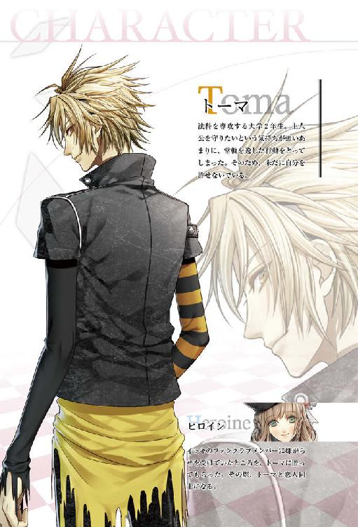
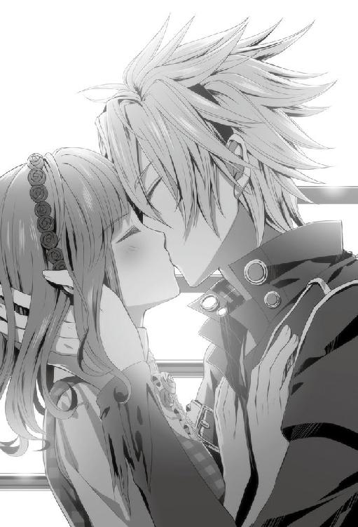

| オトメイトノベル アムネシア レイター Shin ＆ Toma編 | |
| 鈴木あつみ | |
| (2015) | |



「......おまえ、マジでトロすぎ。どうやったら何もない道で足捻られるわけ？」
左の足首を押さえアスファルトに座り込んでいる彼女が、オレを見上げて眉根を寄せる。
「......ヒールが折れちゃったの。そう何度も責めないで」
口をすぼめて呟く彼女に短く溜息をつきながら傍らにしゃがみ込むと、痛めた足首に視線を向けた。
すぐそばには彼女の持っていた小さめのバッグと、折れて何の役にも立たなくなったヒールが無機質に転がっている。閑静な住宅街のさほど急でもない坂道。女性用のサンダルのヒールとは、この程度の負荷をかけただけで折れるような脆いものなのだろうか。
そもそも、そんなものを身につけて来なければいい、と言おうとし開きかけた口をつぐむ。彼女のことだ、朝から張り切って服の組み合わせだの髪型だの考えては、鏡の前で右往左往していたに違いない。現に彼女は今、真っ白な生地に小花のモチーフをあしらった見慣れないワンピースを身につけている。サンダルもそのコーディネートの一部だろう。オレと外出するために考えてくれたそれを、責めることはできない。
「別に責めてないだろ。ただバカって言ってるだけ。いいから足、見せてみろよ」
言われて、彼女の華奢な指が遠慮がちにスライドする。
「──腫れてはいないな。痛むか？」
「少しズキズキする......」
見た目はいたって健常だが、彼女の顔は僅かに歪められていた。内部で小さな痛みが疼いているのだろう。
「今は平気でも、もしかしたらこれから少し腫れてくるのかも」
患部の様子を窺いながらひとりごちると、バッグを拾い差しのべた。彼女は両手で受け取るとそのまま膝の上にバッグを置く。
「とりあえず今日は帰ろう。早いとこ冷やしたほうがいい」
後で悪化させるよりも、すぐに応急処置をしたほうがいいだろう、そう考えて言った言葉に彼女は顔を勢いよく上げ、頭と手を横に振った。
「......だ、大丈夫だよ。私歩けるから、映画行こう？」
「......かかとの折れた靴で？」
「あ......」
自分の足元を一瞥して、返すセリフに困った彼女は口ごもる。
「つーかまず歩けないだろ。映画館まで結構距離あんのに」
向かおうとしていた目的地は住宅街を抜け、繁華街も素通りした駅の更に先にある。座り込んでいる彼女のどこに、そんな距離を移動できる根拠があるのか。
「あ、歩けるよ」
確信がもてないのか、口ではそう言うけれど目が左右に彷徨っている。
「............じゃあちょっと立ってみて」
無理をしているのが見てとれた。けれど実際できないとわからないことには納得しないだろう。
「......うん」
一呼吸おいて、立ちあがろうと膝に手を置くと、彼女は足に力を入れた。そして、
「......痛っ......！」
案の定、悲痛な声とともに目の前で体が傾いていく。とっさのところで彼女の腕を掴み支えると、ゆっくりと再び地に戻した。
「............ほら見ろ」
わざとらしく嘆息すると、彼女は萎んだように体を丸くする。
「まともに立てもしない状態で歩けるとか、おまえほんとバカすぎ」
「っ......。そんなにバカバカ言わないでよ......」
呟くような小さな文句が返ってくる。
「バカだからバカって言ってんの。いいから大人しく座ってろ」
そう告げると、立つことすら困難な彼女をどうやって自宅まで連れ帰るか思索する。運が良いのか悪いのか、休日だというのにタクシーが一台も通りかからない。どこか遠くでは車の走行音がひっきりなしに行き来しているが、周りを見る限りでは確認できない。
周囲を気にしていると、ふと彼女の視線と交わった。
「......ごめんなさい」
硬い表情で押し黙っていた彼女が薄く口を押し上げ、そう零した。
「は？ なんで謝んの？」
反射的にそう言うと、彼女はまた視線を灰色のコンクリートに向けて、「映画。行けなくて」と言う。自分の失態で予定を壊してしまったことを悔いているのだろう。
「元々観たいって言ってたのおまえだろ。おまえのほうがガッカリしてんじゃないの？」
映画のことを言い出したのは彼女だ。好きな小説の映画が公開するとかで、嬉しそうに情報誌を見せてきたのが一週間前。原作のタイトルすら知らないオレに、あらすじや主要人物の魅力をこんこんと力説してきた。無邪気にはしゃぐ彼女に、思わず「それなら一緒に行く？」と聞いた後の満面の笑みは、今でも目に焼きついている。
オレにしてみれば映画なんてどれでも良かったし、むしろ映画じゃなくても彼女と過ごせればそれで良かった。けれど、楽しみにしていた彼女を知っているだけに、この状況には少し胸が痛んだ。
「映画なんて足が治ったらいつでも連れてってやる。とにかく今日はもう帰るぞ。それでいいな」
予定よりも今大事なのは彼女の体だ。
「うん」
異論はないようで、彼女も素直に頷く。
「......つっても、歩けないんだよな」
移動手段が確保できないことにはどうしようもないが、いつになるかわからないそれを待つこともできない。少しでも早く患部を冷やして痛みを和らげてやりたい。そうすると、オレにできることは一つだ。
「......おい、暴れるなよ」
一言断って、オレは彼女の背中に片腕を添える。
「え？」
きょとんとした表情で見上げてくる視線を受け流して、もう片方の腕を彼女の両膝裏に差し込んだ。体全体に力を入れると深く息を吸って、彼女を抱え立ちあがる。軽々と彼女の体は持ち上がった。
「......！ シン!?」
状況を呑み込めた彼女は、オレの腕の中で慌てて身じろぐ。
「暴れるなって。ちゃんと掴まってろ、落ちる」
覚悟していたよりも難なく抱えられたとはいえ、安定感のない体勢で動かれると本当に落としかねない。
「だって、恥ずかしいよ......！」
焦りにも似た瞳で訴える彼女の頬は、僅かに紅潮していた。
「オレだって恥ずかしいっての。けど仕方ないだろ。おまえ歩けないんだから」
恥ずかしさを紛らわすため、自分にも言い聞かせるように呟く。
「こんなとこ、知り合いに見られたらいいネタだな。特にサワとミネあたり」
彼女の友人である二人は、こういうネタ的状況に目聡い。もし遭遇してしまったら、ありもしない妄想を引き出して、跳ねるようにキャーキャーと騒ぎ立てるだろう。頭に響く甲高い声を思い浮かべてしまったことを後悔して、脳内からすぐにかき消した。
「......重くないの？」
来た道を引き返しはじめたオレの顔を、心配そうに彼女が覗きこんできた。
「重いよ。すげえ重い」
真顔で答えると、彼女の頬が更に赤みを増す。
「や、やっぱり自分で歩く......！」
「それが無理だからこうしてんだろ。いいから大人しくしてろよ。暴れられると余計に重くなる」
「............」
むくれた彼女が無言で厳しい視線を投げてくる。
「......これくらいで怒るなよ。冗談だってわかるだろ」
「顔が本気だった」
今度はいじけたのか唇をとがらせている。驚いたり怒ったりいじけたり......表情がオレの言葉一つでころころと変化する。感情が表に出やすい彼女は見ていて飽きないため、ついからかいたくなってしまう。
「......ほんとに重くないよ。むしろ想像してたより軽かったからちょっと驚いたくらい」
そうフォローすると、彼女はすぐ機嫌をとりもどし、大人しく腕の中に収まった。けれど、やはり人目が気になるのか視線だけきょろきょろと忙しなく動いている。
そんな彼女を見ていて、ふと、前にも同じような状況があったなと、記憶の欠片が蘇る。
「──なあ、おまえは覚えてるかな。昔さ、オレおまえをおぶろうとして、できなかったことがあったんだ」
一つ欠片を呼び覚ますと、連鎖して次々とあの頃の思い出が脳裏に浮かぶ。
「確かその時もおまえ、転んだかなんかして怪我してた気がする」
「......あ......」
口元に指を添えて記憶を辿っていたらしい彼女が、短く声を上げた。同じ記憶が蘇ったのだろう。
あれは、まだ幼い──、小学校にあがる前の頃だったと思う。彼女とオレは二人で公園に遊びに来ていた。
普段なら兄顔で付いてくるトーマも、たまたまあの日は外出していて二人きりだった。そんな日に限って、小さな歪みに足を取られて転んだ彼女が、擦りむいた膝が痛いとわんわん泣きだした。
「おまえがあんまり泣くから、大した怪我でもないのにオレも焦ったよ」
彼女より幼かった自分も、つられて泣きそうになった覚えがある。けれど男の子は泣いてはいけない、というどこかのふれ込みが頭にあったのと、眼前の彼女を助けなきゃという思いで、泣き出しそうになるのを必死に堪えた。
「とにかく早く連れて帰んなきゃって、おまえをおぶろうとしたんだけど、まだオレのほうが小さいくらいの時期だったから、結局できなくてさ」
泣きじゃくる彼女を背に、座り込んだまま立てない自分が悔しくて仕方がなかった。
どうしてこんなにもオレの手は、体は小さいんだろう、力がないんだろうと、幼いながらに自分を責めた。あの頃のオレは、彼女の涙さえ止めることができなかった。
「うん、覚えてるよ。私を慰めてくれてるシンまで泣きそうな顔してた」
弱くて小さいオレの姿が彼女の記憶にも残っていた。
「そこまでは覚えてるけど、その後は......どうしたんだっけ」
その先は思い出せないのか、彼女は小首を傾げ、話の先をオレに促す。
「帰りが遅いオレたちを心配してトーマが捜しに来た。で、そのままトーマがおまえをおぶって帰った。涼しい顔でオレよりも速く歩くトーマがうらやましかったよ。同時に、すげえ悔しかった」
力の差を見せつけられた気がして、トーマの背中に憤然とした眼差しを向けた。
「悔しくて、悔しくて。絶対おまえより......トーマより、でかくなってやるって思った。でかくなって、強くなって。自信を持っておまえを守れるような男になってやるって」
日の暮れかけた帰路に消える二人の姿を見送りながら、オレは強く拳を握りしめた。
「......今おまえを軽いと思えるってことは、その程度にはオレも強くなれたのかな」
昔から変わらない彼女の真っ直ぐな瞳が、オレを映し出す。
「............」
問いには答えず、かわりに彼女はオレの首元へ両方の腕を寄せた。引き寄せられた体に彼女の柔らかな温もりを感じる。
「......シンはもう、弟みたいに可愛い男の子じゃないんだね」
間近で囁かれる優しい声。
「当たり前。オレはもう、泣いてるおまえをじっと見てるだけの子供じゃない」
あの頃のオレとはとうの昔に決別している。
「おまえは昔のままが良かったのか？ 幼なじみのオレのほうが良かった？」
今更幼なじみのほうが良かったと言われても引き返すことはできないし、引き返してやるつもりもない。それは彼女に告白したあの日、心に決めたことだ。けれど、どこかで彼女自身は幼なじみという立場を望み、後悔しているのではないかという疑念もあった。
「......ううん、今のシンがいいよ」
頭を振る彼女に心底安堵した。
「だって幼なじみのままだったら、いつかシンは私以外の誰かをこうしてたかもしれないんだよね？」
「......そうかもな」
あり得ない、と思いつつ、パラレルとして考えたとき一つの選択肢としてそういう道もあったのかと思考を巡らす。それでもやはり今の選択をして間違いはなかったと、ふりだしに戻り納得する。行きつくところはここしかない。
「そう考えて......やっとわかった。変わらなくちゃいけないんだって言った、シンの言葉の意味が」
じっとオレを見据えたまま、彼女は続ける。
「......私、ずっとここにいたい。転んだらシンが助けてくれる、この位置にずっといたい。わがままかもしれないけど......シンのとなりだけは、他の誰にも取られたくないよ」
決意にも似た感情が、彼女の言葉に滲み出ていた。
「だから私も変わる。私の場所をずっと守りたいから」
付き合い始めてひと月と少し。オレから強引に迫らないかぎり、ずっと幼なじみの態度そのままだった彼女が、初めてオレを一人の異性として見てくれた気がした。沸々と嬉しさと、今更気付いたのかという若干の切なさが混じった複雑な感情が込み上げてくる。
「気付くのが遅いんだよ、バーカ」
「ごめんね」
今更感は否めないが、気付いてくれただけでも彼女との関係が大いに前進できたように思えた。マイペースで能天気な彼女らしい、大きな第一歩だ。
「正直、ちょっと諦めかけてた。一ヶ月経ってもおまえ、大して態度変わんないから。『今さら男の人としてなんて見られない』とか言われたしな」
告白した日にいわれたセリフを掘り出すと、彼女はムっと眉尻を寄せた。
「......よく覚えてるね」
「忘れるかよ。あれ、意外と堪えたし。あとは『シンならいい子と付き合えると思う』とかな」
自分が想いを寄せている相手に悪びれもせずいわれると、堪えるものがある。言った本人は何の意図があったわけでもなく、単純にほめ言葉として使っただけだとしても、これほどの破壊力があるのかと経験して思い知らされた。
「......そんなこと言った？」
「言ったよ。付き合う前だけど。あれも地味にへこんだ」
「......ごめんなさい」
彼女はしおらしく項垂れると肩をおとした。
「いいよ、もう全部忘れてやる。おまえ、もう二度とそんなこと言えないだろうし」
どれも今となってはいい思い出にできる気がする。それに、今だから謝罪よりも言ってほしい言葉がある。
「なあ、ちゃんと言って。おまえの今の気持ち。おまえの口から聞きたい」
突然の要求に、僅かに彼女の体が硬直した。でも要求したものを得ずして逃がしてやるつもりはない。ずっと待っていた言葉だから。
「............好きだよ」
少しの間を置いてから、ボリュームをしぼった声が耳に届く。
「もう一回」
「............」
「言って」
強い口調で再度促すと、彼女は心に決めたのか深く息を吸い込み口を開く。
「......好きだよ。幼なじみや家族としてじゃなくて、シンのこと大好き」
勇気を振り絞って声にしたのがわかる、最上の言葉だった。
「......うん。............やっと言わせられた」
今日、オレたちは本当の意味で幼なじみの関係から抜け出して、恋人同士になった気がした。これから訪れる時間は、恋人として充実したものになるだろうという期待でいっぱいになる。
相変わらず静かな住宅地は、時折吹き抜ける風で揺れた街路樹の木葉の音だけが響いていた。
『９月１２日』
開け放たれたカーテンの隙間を縫って、暖かな日差しが差し込んでくる。壁掛けの時計に目をやると、時刻はちょうど八時を指していた。
「この時間ならあいつも起きてるか......」
机の上に広げられた教科書と筆記用具を通学バッグに押し込み、参考書を手早く端に寄せると、ベッドの上に転がっている携帯に手を伸ばす。慣れたもので、考えるまでもなく指は彼女のアドレスを開き、通話のアイコンを押した。
今日は予備校が休暇日で夕方からなら時間が取れそうだ。時間が取れると言っても、予備校のように授業という制限がないだけで、自宅で勉強することには違いないのだけど。
こういう僅かな時間でも彼女と過ごしたいと願うのはオレのエゴだ。こうやって自己都合だけで予定を押しつけているにもかかわらず、彼女は当たり前とでも言うように勉強にも付き合ってくれる。良く言えばお人好しだが、本当におまえはそれでいいのかと時々聞きたくなる。オレが彼女の立場なら、確実に文句の一つ二つ言っているところだ。せっかくの二人だけの時間に勉強というのも味気ない。オレだって受験が控えていなければ、彼女を連れてどこかへ出かけるなり食事をするなり恋人らしい時間を過ごしたいと思っている。
耳の中で長めのコール音が鳴り続いている。携帯を耳と肩の間に挟んで、通学バッグに手をかけた時、ようやく音が途切れた。
「あ、やっと出た。何、まだ寝てた？」
「............」
問いに、返事はない。寝ぼけて通話ボタンだけ押してしまったのだろうか。高校生のオレとは違って、大学生はまだ夏休みだ。寝ていたとしても不思議ではない。
「......なあ、聞いてんの？ おまえ、目覚めてる？」
「うん......ちゃんと起きてるよ」
確認すると、ゆっくりとした口調の声が電話越しに聞こえてきた。
「ただ、夢から覚めたのにシンの声がするからなんだか不思議で」
「......へえ。オレの夢見てたってこと？」
「うん。シンが手を繋いでくれた時の夢」
彼女の夢に出演できたのは嬉しいことではあるが、よりによってあの日の夢である必要はないと思う。思い出すと妙な恥ずかしさが胸に渦巻く。
あれは数週間前。彼女に優しくしてくれたら嬉しいといわれ、初めて手を繋いで歩いた日のことだ。手を繋ぐことのどこに優しさを感じるのか、彼女の価値観は全くわからなかったが、それで喜んでくれるならと羞恥心を押して手を差し出した。
そんな夢を見た彼女を少し恨みがましく思った。
「......もっと他にいい夢なかったわけ」
「十分いい夢だよ。でも後少しってところで目が覚めちゃったから、ちょっともったいなかったかな」
「ふうん。じゃあオレ、いいタイミングで電話したんだな」
どこがいい夢なのか理解できないオレは、そっけなく言った。
「......意地悪」
「意地悪じゃないだろ。狙ってやったわけじゃない」
電話越しで彼女が頬を膨らませているのが容易に想像できたけれど、そしらぬ口調で本題を切り出す。
「それよりおまえ、今日はバイト休みだよな。オレも予備校ないから夕方うち来る？ 夕方からなら、多少は長く一緒にいられると思う」
多少、とは言ってもたかが知れている。一人暮らしで夏休みの彼女には門限なんてないけれど、遅い時間に外を歩かせるのは気が進まない。せいぜい一緒にいられて三、四時間といったところか。
「あ、先に言っておくと今日は親も家にいるから。あと、呼んどいて悪いけどオレ勉強するから。それでもいいなら来れば」
彼女と会う日はだいたい勉強していて、そんな状況に彼女も一度も嫌だと言ったことはない。オレよりも勉強のことを気にしている様子で、かいがいしく付き合ってくれる。彼女もわかりきっているだろう毎度のパターンなのに一応断りを入れるのは、恋人らしい時間を提供できていないことへの罪悪感からだ。
「邪魔にならない？」
やはり彼女の答えに〝嫌〟はなかった。
「別に。おまえがオレにくっついて甘えてくるなら話は別だけど」
「え......」
「......冗談だよ。流せよ。ってかおまえ、まだ頭回ってないな」
真面目に受け取られても、こちらも返す言葉は用意できていない。まして奥手の彼女からそんな展開に持ち込まれたことすらないけれど。
「まあいいや。で、どうすんの？」
「うん。じゃあ行こうかな」
「じゃあ学校終わったら連絡する。二度寝するなよ」
「わかってる」と言う彼女の声を確認し、通話を切る。
再び時計を一瞥すると、バッグを取り部屋のドアに足先を向けた。
「次、助動詞『る』の接続は？」
「四段、ナ変、ラ変の未然形接続。れ、れ、る、るる、るれ、れよ」
「正解。じゃあ『まほし』の意味」
受験用の参考書を片手に、彼女は真剣な眼差しを向けてくる。
「意味は願望、希望。活用は形容詞シク活用型」
「正解！ すごいね、シン。全問正解」
出題に全て答え終えると、彼女は見開いた瞳を輝かせて喜んだ。
「別に普通だろ。大体それ、基礎中の基礎だし」
オーバーぎみの反応をする彼女に言うと、「そうかな？」と首を僅かに傾げられた。去年おまえも受験したんだろ、と突っ込みたくなるがやめておいた。当事者だった頃を過ぎるとすぐ忘れるものだ。
夕方、約束通りに彼女が来てからずっとこの調子で机に向かっていた。長いこと細かい文字を追っていたせいか目の奥が重い。手のひらで目をこすると、心配そうに眉を寄せた彼女が顔を覗きこんできた。
「昨日も遅くまで起きてたの？」
眠いのだと勘違いしたのかもしれない。ペンをノートの上に置いて、頭を振る。
「睡眠時間はちゃんと確保してる。そこ削ったって、勉強の効率が良くなるわけじゃないからな」
眠さに耐えて勉強したところで、頭に入るのはごく僅かだ。それよりもしっかり身体を休めた後のほうが集中もできる。
「ただ、もう九月だし、そろそろ本腰入れないといけないから前に比べれば時間は減ったけど。それでも寝不足になるほどは削ってない。だから平気」
「......勉強、やっぱり大変？」
「あたりまえだろ。試験まで半年切ってるし」
受験生の誰もが参考書とノートを手に必死に格闘している時期だ。オレもその例外じゃない。
「でもオレ、わりと真面目に準備してたし、他のヤツより少しは楽なほうなんじゃないの」
進学を決めたその日から、一点を見据えて努力を積み重ねてきた。その積み重ねは、佳境に入ってから焦るやつらよりは実をつけていると思う。
「そっか......でも無理はしないでね。体調崩したら大変だよ」
「経験者は語るってやつ？ おまえ、受験生の時に一回、高熱出したことあったよな」
一年前の彼女が受験生だった頃を思い出す。
「で、見舞いに行ったらおまえ、起き上がることすらできないくせに参考書読んでてさ」
「シンにすごく怒られたんだよね。勉強を休むことより不調が続くことのほうが良くないに決まってるって」
懐かしそうに彼女が言った。
「そう言ってくれたおかげで、次の日には熱も下がって学校にも行けたんだっけ」
微笑んだ彼女は言葉を続ける。
「言い方はきつかったけど......あの時もシンは、私のことを考えて叱ってくれたんだよね」
「だって受からせてやりたいって思うだろ。あんだけ必死になってるとこ見せられたらさ」
普通、起き上がれないくらい具合の悪い人間が、参考書をみていられるはずがない。それくらい切羽詰まっていたのかもしれないけれど、文面の一文字も頭には入っていなかっただろうと思う。
「......まぁ、そういうおまえを見てきたから、オレも今頑張ろうって思えるんだけど」
少し未来をいく彼女に早く追いつきたい。そんな思いも今のオレを後押ししている。追いつくためには彼女が努力して乗り越えた壁を、オレも越えなければ願いは叶わない。それは必然だ。
胸の中で気合を入れなおしてノートの一ページを捲ったとき、ふいに部屋のドアがノックされた。
「シン、ちょっといい？」
ドア越しに聞こえてきたのは母の声だった。
「......いいよ。何？」
椅子から立ちあがり、そう答える。ドアを引くと、母が中を窺うように覗きこんできた。
「そろそろ休憩にしたら？ 疲れたでしょ」
「別にまだ平気だけど」
「あんたは平気でも付き合ってる彼女が疲れるでしょ。ねえ？」
オレに、というより用があるのは彼女のほうらしい。母はオレには視線をくれず、肩越しの彼女に話しかけている。
「は？ なんでこいつのほうが疲れんの」
「あんたの勉強のお守りじゃ、大変に決まってるでしょ」
わかりきったことをいわせないで、とでもいうように母は片手を振った。
「あのね、あなたの好きなお菓子買ってきてあるのよ。お茶と一緒にいただきましょう？」
横にいるオレは無視で、すでに話の矛先は彼女に向いている。
「えっと......」
母の誘いに、彼女は遠慮がちな視線をオレに送ってきた。オレの反応を窺っているのだろう。
「......ん？ ああ。何、オレに気遣ってんの？ 別にいいよ。おまえも文字追ってばっかで目休めたいだろ。オレもちょっと休憩する」
「そう？ じゃあいただきます。お茶の準備、手伝いますね」
彼女の顔に笑顔が咲き、こちらへ駆け寄ってくる。
「あら本当？ ありがとうね」
母を追って、彼女はリビングに向かっていった。
彼女が来ているとわかると、なにかと出張ってくる母を若干鬱陶しく感じつつも、楽しげに話している二人をみると文句も言えなくなる。オレのわかり得ない女性同士の会話というものがあるらしい。
小さな溜息を残して、オレも彼女らを追った。
少しの休憩を挟んで再び机に向ってから小一時間。窓の外に視線を転じると、漆黒に染まった夜空を満ちかけの月が弱々しい明りで照らしている。時計で時刻を確認すると、すでに九時をまわっていた。
「......あ、もうこんな時間か。おまえも明日はバイトだろ、そろそろ切り上げるか」
ぱたりと教材を閉じ、隣の彼女に話しかける。
「そうだね。じゃあおばさんに挨拶してくる」
持ってきた小さなバッグを肩からさげると、彼女は部屋を出て行った。
「長話につかまるなよ。帰るの遅くなるから」
オレの忠告に頷いたにもかかわらず、案の定、彼女は母に捕まりかけた。余計な雑談を母が始めようとするところに割って入り、無理やり引きはがして彼女を連れ出す。
外に出ると、残暑とはとうていかけ離れた肌寒い空気が体に纏わりついた。
隣を歩いてくる彼女は、手に持った紙袋をガサガサさせて腕を擦っている。
「なあ、帰り際に何か渡されてたろ。そう、その左手の紙袋のやつ。それなんだったわけ？」
これ？ と彼女は左手を上げてみせた。
「余ったお菓子だよ。おばさん、うちじゃ食べ切れないって言ってたから遠慮なく頂いてきちゃった」
紙袋を抱えて彼女は幸せそうに微笑んだ。
「食べ切れないってわかってるのになんで箱買いしてくんだろ、あの人」
「シンは嫌いなの？」
「嫌いじゃないけど一個で十分。なんか食感がしつこいんだもん」
休憩したとき食べた菓子を思い出す。ねっとりと口の中にまとわりつくような感触は、わらび餅とか寒天といった類とはまた違っていて、飲み込んだ後も素材の残留感がしばらく尾を引く。ずっと口内に甘い菓子があるようで、それを二つ三つと食べるにはきついものがあった。
「お餅っぽくて美味しいと思うけど」
「餅は餅、菓子は菓子だろ。一緒にするのはどーかと思う。つーか勉強の休憩なら普通はオレの好物を買ってくるもんじゃないの。なんでおまえの好物ばっかなわけ？」
ここのところ母が家に買ってくる菓子は、狙ったかのように彼女向けのものばかりだ。食べさせたいのはオレではなく、彼女だという母の意図は容易によめる。
「そういえば......。私に気を遣ってくれてるのかな」
本質をわかっていない彼女は不思議そうな顔で紙袋の中を見ている。
「いや、絶対そんなんじゃない。単におまえを喜ばせたかっただけに決まってる」
要は彼女の好きなものを用意して、楽しくおしゃべりがしたいのだ。
「うちの母親といいトーマといい......みんなおまえに甘いんだよな」
そうぼやくと、また意図をはき違えたのか、
「じゃあ次は私がシンの好きなもの買って持って行くね」と彼女が言った。
「いや、そこは別にどうでもいいんだけどさ......」
彼女の話を流しながら、しばらく口にしていなかった幼なじみを頭に浮かべていた。
「ああ、そういえばおまえ、トーマから連絡きた？」
話題を切り換えると、はっとしたように彼女が顔を上げた。
「あ、うん。昨日メールがきたよ。不起訴が確定したんだってね」
「ああ......」
オレにとって、きっと彼女やトーマにとっても忘れられないものになったあの事件から何日経過しただろうか。トーマが警察に自首してから、オレたちは神妙な心持ちで動向を見守ってきた。ようやくトーマ本人から連絡が来たのはつい昨日のことだ。
トーマのことだから、オレたちに余計な心配をかけまいときちんとした結果がでるまで連絡を絶っていたんだと思う。
「警察も、おまえが告訴してないのにやたらとしつこく調べて立件しようとしてたみたいだけど、......ようやくあきらめたみたい」
オレが事情聴取されていたとき同様、トーマもそうとう詰められていたのは母親間の噂から聞いて知っていた。トーマも彼女を傷つけてしまったことを後悔しているのに、それを更にえぐるような真似をする警察にはやはり嫌悪感しか抱けない。
「まあ......俺が警察にしつこくしてたのも原因かもしれないけど」
「私のこと、調べるためにだよね？」
「あのときはおまえの事故のことで頭がいっぱいだったからな」
彼女を傷つけた犯人や、事故の切っ掛けを作ってしまった自分が悔しくて、必死で警察にも探りを入れていた。それが原因で、トーマが自首した後もまだ裏があるのではと警察に怪しまれてしまったのは反省すべきところだ。
「......それでトーマのことだけど、まだこっちには戻らないとかって言ってた。......でも一応元気にはやってるみたいだし、良かったよな」
彼女は少し悲しげに笑うと、頷いた。不起訴が決まったのに、すぐ戻ってこない幼なじみに一抹の寂しさを感じているのだろう。
「トーマ、今どこにいるんだろうね。聞いても『遠く』ってだけで、詳しくは教えてくれなかった」
「あいつなりにケジメつけたいんじゃないの。放っとけば。そのうちひょっこり出てくるだろ」
トーマも考えるところがあるのだろう。罪を認めてそれで終わりというわけにはいかない。いつかトーマの気持ちに区切りがついた時、戻って来やすいように、こちらは無関心を装ってそっとしておくに限る。
「......早くこっちに帰ってきてくれるといいね」
「......おまえって、ほんとバカがつくくらいお人好しだよな」
傷つけられながらもトーマの居場所を空けて待つ彼女のかいがいしさに、オレは呆れてみせた。
「シンはそう思わない？」
「............」
言葉に出さないだけで、オレも彼女と気持ちは同じだ。
「......帰ってきてほしいよ。当たり前だろ」
澄み切った秋の夜空を見上げ、どこにいるかわからないバカな幼なじみに向けて言うと、隣で彼女は頬をほころばせた。
「待ってるって約束したもんね」
「帰ってきたらまず、何かうまいもん、おごらせるから。そん時はおまえも付き合えよ」
オレや彼女に心配をかけた分、トーマには帰ってきた時にその代償をきっちり返してもらうつもりだ。冗談めかして言うと、彼女も同意したように頷いた。
「送ってくれてありがとう」
マンションのドアの前まで来ると、彼女は振り返って礼を言った。
「いいよ、息抜きにもなるし」
いくら受験生とはいえ恋人を送るくらいの余裕は持ち合わせている。それに始めから夜分に彼女一人で帰すつもりもない。
「明日はシン、予備校だよね。次はいつ会えそう？」
次はいつ会えるかと彼女の口からすんなり出てきたことに驚いた。思わず今なにを言ったのか聞き返しそうになってしまう。世間一般の恋人同士にとってはマニュアル化されたセリフだが、つい最近まで幼なじみモードの抜けきらなかった彼女からするとまた新たな進歩の表れだ。
「............ふーん」
「何？」
「おまえもそういうこと、素直に言うようになったんだなと思って」
彼女が少しずつオレの気持ちに近づいてきてくれているのだと、嬉しさが込み上げる。
「でもそうだよな。学校も始まって、休みの日も一日予備校に缶詰めじゃ会える時間、全然ないもんな」
夏休みを終え、受験勉強も佳境を迎えた今、会える時間は日に日に無くなってきている。できることなら会いたいと思ってくれている彼女の気持ちに応えたい。
けれど、今後のスケジュールを頭に浮かべてみると、すぐにこの日というのが考えつかなかった。当面は学校と予備校の往復だったはずだ。
「我慢させて悪い。でも時間できた時は連絡するから。それまでは待ってろとしか言えない」
「うん......」
抑揚のない返事が耳に届く。
「......たまになら、おまえから連絡してもいいよ」
「......ううん。大丈夫、我慢する。勉強で忙しいのはわかってるから」
「............」
大丈夫、彼女はそう言いながら、それとはまるで正反対の目で訴えてくる。
「......だったらさ、その顔やめてくんない？」
「え？」と、短く彼女が聞き返してくる。
「おまえにそういう顔されると、すげえ困る」
寂しい、という言葉が表情を通じてだだもれなのに、本人は気付いていないのだろう。口ではオレを気遣っているのに、そんな顔をして見つめてくる彼女が急に愛おしく感じた。同時に、押し込めていた気持ちが溢れだす。
「困るって、どうして......」
言いかけた彼女を制して、身体ごと引き寄せると、柔らかな彼女の唇に自分のそれを押しあてた。温かい感触を手放したくなくて、逃がさないように彼女の頭の後ろに手を添える。
「......！」
重なり合ったそこから、彼女が息をのむのがわかった。
薄く目を開けて、唇の間に僅かな隙間をつくると、
「──こうしたくなるだろ」
そう囁く。
彼女は瞬きすら忘れて、大きな瞳を更に見開いていた。
「せっかく堪えてたってのに......そんな寂しそうな顔されると、我慢が利かなくなるから困る」
「......我慢、してたの？」
「してたよ。そうじゃなかったら、もっと早くにこうしてる」
これでも自分の気持ちを押さえて彼女に会っていたつもりだ。
「一回キスしたら勉強どころじゃなくなるってわかってたから、ずっと我慢してた」
彼女のことで頭がいっぱいになりそうな気がして、耐えられるだけ耐えてみようと思っていたけれど、さっきの彼女の様子をみていたら、そんな決意の防波堤は脆くも崩れ去って、欲求が溢れてきた。
「オレだっておまえに会いたいよ。今もできる限り時間作って会ってるけど、本当はもっと会いたい。でもさ、おまえに我慢させてるのに、オレが毎日会いたいとかってわがまま言うわけにいかないだろ」
どれだけ彼女に会って、そして触れたいか。言葉にはできない程にその想いは募っている。けれど、簡単に自分の願望だけを叶えてしまうのは違うと思った。
「おまえ、なんでかオレ以上に勉強は大丈夫かって気にするし」
受験のことを気遣う彼女を思うと、会いたい、触れたいといった自分の欲求くらい我慢しなければと思っていた。
「だって......邪魔はしたくないよ」
「バカ。おまえに会うことではかどる場合もあるんだよ」
彼女を邪魔だと思ったことなんか一度もない。それに彼女も望んでくれているなら、彼女のために今よりも会える時間をつくる努力をしようと思う。
「......だから、会いたい時はおまえも言っていいよ。オレもダメな時はダメって言うし。おまえに無理されんの、好きじゃないって言ってるだろ。......まぁ、おまえ、今も結構無理してるっぽいけど」
そう言うと彼女は困ったように笑った。オレが彼女の感情を悟ったことでバツが悪いのだろう。
「でも、このくらいは許せよな？ 部屋に入れろとは言わないから」
身を引くと、上目使いで彼女が呟く。
「......最近優しいね、シン」
「誰かさんが『優しくない』って拗ねるからだろ」
彼女のせいにはしたけれど、オレにも思うところがあった。
「......あのことがあってから、オレも色々考えたんだ」
何を考えていたのかと、彼女が目で問いかけてくる。オレは白状するようにおもむろに口を開いた。
別に伝える必要はないのかもしれない。けれど、口にしないと伝わらないこともあるし、変な誤解を与えてしまう場合もある。そうなる前に、できるだけ彼女には自分が考えていること、感じたことを伝えていこうと思った。
「あの事故も事件も、発端を作ったのはオレだった。オレがおまえを追い詰めたから......全部起きた。どんなに反省しても後悔しても、その事実は変えられない。過去を変える手段なんてないからな。......けど、これからのことはオレ次第でどうとでも変えられる」
あの事件はたまたま事が悪く転んでしまっただけかもしれないけど、絶対にあの過ちを繰り返してはいけないと心に刻むほどに大きな出来事だった。関わった何人もの人を傷つけてしまった。心も体も......。
オレの気持ちを一方的に押しつけるだけではだめなんだ。
「だから、おまえを二度とあんな目に遭わせないようにするには、オレが変わるべきだって思ったんだ」
「......だから優しくなったの？」
「上手くやれてるかどうかは、わかんないけどな」
オレ自身、不器用なところがあるのは重々承知だ。頭と行動が伴わないことも多々あるし、特に彼女のこととなると冷静になれないところもある。彼女がいうように優しさに近付けているかどうかもあやしいけれど、胸の中に留意していくことで一歩立ち止まって考えられる気がした。
「......でも約束したから。おまえのこと幸せにするって。そのための心構えみたいなもんだよ」
「シン......」
「............なんか、改めて言うと変な気分になる。もうこの話終わりな」
恥ずかしさを隠すように口を手で覆うと、話題を変えるべく思考を巡らす。
「......と、そうだ。おまえ、病院にはもう行かなくていいんだよな」
「あ、うん。この間の通院で最後だよ」
「じゃあこれで本当に全快ってわけか。......良かったな」
つい最近まで包帯がとれなかった彼女の首には、もうそれは残っていない。傷もほぼ消えていて、いわれなければわからないほどだ。
ほっと胸をなで下ろす。
「じゃあオレ帰るから......あ」
踵を返しかけて、立ち止まる。
「次に予備校ないのは明後日だけど、空いてるならまたうち来れば？ 来る時は連絡入れて」
ふと近日で会えそうな日が見つかって告げると彼女は、ぱあっと表情を和らげた。
鼓動がどきりと跳ね上がる。いちいち顔にでるのが可愛くて仕方がない。オレの起爆剤を彼女は持っているのではないかと本気で疑ってしまう。
「わかった。じゃあおやすみなさ──」
吸い寄せられるように彼女との距離を縮めるとキスを落とした。
「......っ！」
彼女の肩が僅かに跳ねあがり、きつく瞳を閉じたのを確認すると、温かな感触を貪る。しばらくして彼女を解放すると、潤んだグリーンの瞳でオレをみつめていた。それには少しの戸惑いの色が映し出されている。これまで何度彼女とキスを交わしただろうか。何度しても落ち着かない様子の彼女に苦笑が漏れる。
「......おやすみ」
それだけ言うと、今度こそマンションの廊下を引き返した。
『９月１３日』
「......あ、そうだ。シン、おまえに伝言預かってたんだ」
始業前、机上に教科書とノートを出し周りを整えていると、後ろからクラスメイトの男子が肩を叩いてきた。オレと同じ予備校に通っている一人だ。椅子を引いて視線を合わせると、彼は愛想のいい笑みを浮かべて話を続ける。
「昨日言い忘れてたんだけど、予備校の先生から伝言。急なんだけど明日、特別授業あるから参加希望なら来いって」
「明日......？」
予備校のスケジュールでいけば明日は休みのはずだ。
「そうそう。本当は休みなんだけど、夏休み中の授業内容、結構難しかったじゃん？ だから復習を希望する声が寄せられたとかで、急きょ特別授業を用意したんだってさ。普段の授業はそれはそれで進めなきゃなんないから休みの日にって」
そういうことかと納得してから、はたと昨日交わしたばかりの彼女との約束を思い出す。
オレの顔色が変わったのを察知して、彼は、
「別に用があるなら参加しなくてもいいんじゃない？ 強制ではないし、おまえ成績いいしさ」と付け加える。
「ま、そういうことだから」
もう一度オレの肩を軽く叩くと、彼は自席へと戻って行った。
特別授業か──。
夏休み中は彼女の事件のこともあり、何度か予備校を休んでいた。その分は自習である程度フォローしたものの、実際に授業内容を復習できるのならこの機会は逃したくない。
この絶妙なタイミングを恨みつつ、携帯を取り出す。昨日あれだけ嬉しそうにしていた彼女の顔が脳裏に浮かんで、アドレスを探す指が一瞬止まる。苦渋の思いで通話ボタンを押した。
「もしもし？」
何も知らない彼女の明るい声が耳に届く。
「オレ。今、平気？ まだバイト前のはずだよな」
「大丈夫だよ。どうしたの？」
能天気な口調がオレの口を重くする。
「あのさ、明日のことだけど。オレ、うちに来ればって言ったよな。......悪い、あれやっぱナシ」
「え......」
一瞬で声が曇ったのがわかった。
「いつもなら予備校ない日なんだけど、なんか特別授業があるみたいで明日は行かないとダメっぽい」
事情を説明する間、彼女は沈黙してオレの話を聞いていた。
「だから............と、悪い。もう次の授業始まるから切る。おまえもバイトだろ、頑張れよ」
廊下を歩いてくる教師の足音に、教室内が慌ただしく授業の準備を始める。それを横目に、手短に用件だけ伝えると彼女の返事を待たずに通話を切った。
微妙に後味が悪い。彼女のことだから事情を察して怒ってはいないと思う。けれど、落胆はしているだろう。ただでさえオレの都合で会える時間は日に日に減ってきているのに、また貴重な時間を潰してしまった。
早いうちにきちんと謝らなければ、と心の中で呟いた。
今日の講習を終えると、オレは飛び出すように予備校を後にした。この時間なら、彼女のバイトが終わる時間に間に合うはずだ。念のため携帯で時刻を確認すると先を急ぐ。ここからバイト先までは徒歩一五分といった距離だ。
彼女のバイト先、〝冥土の羊〟は言わずと知れた、メイドと執事が接客する喫茶店だ。彼女がメイド姿で他人相手に接客しているのは彼氏心であまり気乗りはしないが、付き合う以前から働いているところだし、何よりスタッフが皆、彼女の気ごころが知れたメンバーで人が良いのもあって口出ししていない。それに、受験勉強に入る前までは、オレも一緒に働いていた場所だ。
店が見える距離までくると、店の窓から淡い暖色の明りが漏れていた。表にクローズと書かれた看板が出ているため、もう店は閉店を迎えた後のようだが、明りが灯っているということはスタッフはまだ残っているということだ。彼女は帰っていない。
ほっと息をついて、出入り口横の壁に寄り掛かる。着替えが済んだらここから出てくるはずだ。彼女を待つ間、バッグに押し込めていた参考書を取り出し、僅かな明りで文字を追った。
しばらくすると、「お疲れ様でした」という声と、店の戸を閉める音が聞こえてきた。参考書をしまい、体を起こす。
「お疲れ」
ようやく現れた彼女に言葉をかけると驚いたように目を見張った。
「シン！」
「あれ、ほんとだ。シンじゃん。どしたの？」
彼女の隣からスタッフの一人がひょっこりと顔を出す。彼女の親友、サワだ。
「ああ、サワもいたの。お疲れ」
ついでに言うと、サワは不満気に目を細めた。
「めちゃくちゃ最初からこの子の隣にいたんですけど......」
彼女しか映ってないのか、と顔に書いてある。
「ていうか、シンのほうこそどうしてここにいんの？ 今日も予備校だって聞いたけど」
「予備校ならさっき終わったよ。ちょうどこっちも終わる頃だと思ったから迎えに来ただけ。おい、おまえもう帰れんの？」
彼女を向くと、「うん、帰れるよ」と返事があった。
「あっそ。サワは？ なんなら送るけど」
彼女と帰る予定だったのなら悪いと思い尋ねると、サワはにやにやと口元を歪めてオレと彼女を交互に眺めた。
「邪魔するほど野暮じゃないって。忙しい中の貴重な二人の時間だし？ ねえ？」
「サ、サワ......」
変な含みを持った言いかたをするサワに、彼女は横であたふたしている。
「ふぅん？ ならこいつ、遠慮なく貰ってくけど」
「どうぞどうぞ。じゃあ、また次のバイトの時にね」
「ありがとう、サワ。お疲れ様」
片手を振ってサワはさっさと引き上げて行った。その後ろ姿を見送ってから、彼女を振り向く。
「......サワと何か変な話でもした？ さっきのサワのにやけた顔、妙に引っかかるんだけど」
「な、なんでもないよ」
誤魔化すように彼女は数回瞬きをして視線を反らすと、言葉を濁した。
「ま、言いたくないならいいけど。......とりあえず行くか」
女子同士の会話だ。どうせ恋愛ごとの噂程度の話だろう。
帰路へ歩みを向けると、オレを追って彼女が隣に並んで歩きだした。
「ねえ、シン。迎えに来てくれたのは嬉しいけど、勉強は大丈夫？」
「別に平気。おまえが出てくるまでの間も参考書見てたし、時間は無駄にしてない」
「でも待たせちゃったよね。ごめん、もっとてきぱき着替えれば良かった」
「待ったって言っても一〇分くらいだし。大したことない」
そもそも連絡も入れず、勝手に迎えに来たのはオレなわけで。彼女が気に掛ける必要もないのに、そうできないのは彼女の本質が単純にお人好しだからだろう。
「それより、昼間の電話。オレ途中で切っただろ。だから、もしかしたらまたむくれてるんじゃないかと思って謝りに来たんだけど」
「まさか。怒ってないよ」
捻くれたオレの言いぶんに、生真面目に答える彼女がまた愛らしい。
「まあ、そこは冗談。おまえが今更そんなことで怒るとか思ってないし」
彼女の柔らかな髪を一撫でして、真意を明かす。
「約束をダメにしたこと、ちゃんと謝ろうと思って来ただけ。......明日のこと、ごめん。埋め合わせはちゃんとするから」
「嬉しいけど、無理しなくていいよ。学校と予備校で大変でしょ？」
「まあ......ね。模試も近いし、これからはますます、おまえと会う時間減るかも」
現況をそのままに伝えると彼女は「そっか......」と小さく言い、視線を落とす。
「............だから。そういう顔すんなっつーの」
「え......また顔に出てた？」
「出てた」
彼女は慌てて自分の頬を擦る。
「......おまえの場合、無自覚だから余計にタチ悪いんだよな」
口の中で呟くと、まだ頬を擦っている彼女の手に自分の手を重ねて制止させた。
「......寂しい思いさせて悪いけど、もう少し我慢して。次に時間取れた時には、おまえの好きなとこに付き合ってやるから」
「いいの？」
期待の眼差しで彼女が問いかけてくる。
「勉強ばっかじゃオレも息詰まるし。息抜きだよ」
たまにはいつものパターンから外れてもバチは当たらないと思う。息抜き程度でインプットしたものが離れていくほど詰めの甘い勉強をしているわけでもない。
「あ、でも遠い場所はナシな。多分、丸一日は時間取るの難しい」
予備校がない放課後にできる範囲なら、彼女の希望を叶えてやれる。
「それでもいいならってことになるけど......どこか希望があるなら今言っとけよ。考えておくから」
「希望......」
秋の高い空を仰いで彼女が考え込む。
「......あ、じゃあ公園。ザリガニ公園、行きたい」
「は？ 別にいいけど......あそこ、面白いものなんて何もなくないか？ そんなとこ行って何すんの」
ザリガニ公園というのは幼い時オレたちがつけた別名で、正式な名称もある小さな公園だ。大した遊具もなく、一見つまらなそうな場所ではあるが、それでも子供の時は何かしら遊びを見つけては楽しく過ごしていた。
「何もしなくていいよ？ ただのんびり歩いたり、芝生に座って話したりするだけで」
「それ、楽しいか？」
「私は楽しいけど」
彼女が提案した、のんびり歩いたり座って話したりを想像して、微妙な心境になった。この数秒で一気に老けこんだ気がする。
「......おまえさ、実は五〇歳くらいサバ読んでない？ 思考がまんま老夫婦なんだけど」
「そんなこと......。......あるのかな......」
「まあいいよ。公園な」
考慮しようと思ったが、はたと思いとどまる。
「けどそれなら昼間じゃないと冷えるからしばらくは無理。夕方からでも行けるとこにしろよ」
この時期、夕方にあの公園で過ごすのはきついだろう。薄い上着をはおっている人も見かけるほどに気温が下がる。
「それじゃ、街のほうに行くのは？ 色んなお店をのんびり見て回るとか」
「............あのさ、どうしておまえの考えるデートには必ず『のんびり』がくっついてくんの？」
彼女の性格をそのまま表したかのような言葉に内心呆れながら、ふと彼女の提案に違和感を覚えた。
「なのに街とか公園とか、やけに人の多いとこばっか指定してくるし」
話を続けながら、頭では今感じた違和感の正体を探る。そして、一つの疑惑に辿り着いた。
「勉強しないなら、オレはおまえと二人きりでのんびりしたいんだけど」
答えを確かめるようにそう言うと、
「............」
やはり彼女は動揺して黙り込んだ。
「......まあ、詰まるよな。二人になりたくないからそういう場所選んでるんだろうし」
「......！ そういうわけじゃ......」
彼女はすぐに否定するけど、オレの考えたことが間違ってはいなかったと、さっきの彼女の態度が示している。
「いーよ、別に。警戒されるような行動してきた自覚あるから」
彼女をそうさせてしまったのには覚えがあった。これまで何度も強引に迫ってきたため、二人きりになったとき何かされるのではと彼女が身構えてしまうのには納得できた。それでもここまであからさまに避けられると、さすがに堪えるものがある。
「......嫌なわけじゃないよ、本当に」
「嫌じゃなくても、気が進まないのは確かだろ」
「それは......」
「............」
「............」
続く言葉を紡ぎだせない彼女との間に、長い沈黙が落ちる。横を通り過ぎる自転車の摩擦音がやけに大きく響いて、耳に障った。
彼女を怯えさせたくて迫っていたわけじゃない。嫌われたいわけでもない。オレは普通に彼女を愛したくて、その延長線上に触れたい、近づきたいという欲求があるだけだ。好きだと思うからこそそうしたいと思うのに、彼女は違うのだろうか──？
様々な思いが胸中に浮かんでは、静かな波紋を残して沈んでいく。
自然と深い溜息が零れた。
「......なんで今頃、こんなことでもめてんだろうな。おまえに合わせようって決めたはずだったのに」
溜息とともに冷静さを取りもどすと、自分が言ってしまったことへの後悔の念が押し寄せてくる。
──そうだ。彼女には彼女のペースがある。その時々で受け入れられることも違うはずだ。無理をさせて壊してしまわないように、彼女に合わせると決めたのはオレ自身だ。
「......シンの気持ちは嬉しいけど、無理に合わせなくてもいいよ」
「オレが好き放題やって、またあの時の二の舞になったら困るだろ」
「もうならないよ」
「......それって、オレが迫ってももう逃げないってこと？ 違うだろ」
「............」
また駆け出しそうになる気持ちの手綱を握りしめて、自分にも言いきかせるようにいう。
「オレだって......もうあんな思いはしたくないし、させたくない」
「............」
口にした決意は、ゆっくりと夜の闇に溶けていった。
彼女のペースには合わせる。それは大前提だが、少しでも早く追いついてほしいとも思う。ずれた気持ちの天秤がオレの中で揺れ動いている。無理はさせないようにして、どうやって前進を促すか。お互いに譲歩できる手はないかと思考を巡らした。
「送ってくれてありがとう」
部屋のドアの前で僅かに笑った彼女が振り返った。その笑みはどこかぎこちなく、作ったものだとすぐにわかる。さっきまでの話を引きずっていることは見てとれた。
「うん」
ここまで来る間、オレなりにこれから彼女とどうやって付き合っていけばいいのか考えてみた。上手い具合にできるかはわからないが、試してみる価値はあると思う。
「......おい」
ドアに鍵を押し込もうとしていた彼女を呼びとめると、鍵を持つ手がぴくりと震える。
「おまえ、二人きりは遠慮したくてもオレと一緒にいたいとは思ってるんだよな」
「......？ うん、それはもちろん......」
何を言いだすのだろうと、不安げな表情で見つめてくる。
「だったら一コ提案があんだけど」
「提案？」
「今度から、会う時は一回交替でお互いの希望を聞くって提案」
彼女は一つ瞬きをして首を傾げた。
「どこに行きたいとか、何をしたいとか、そういうこと。好きに言っていいことにすんの。お互い我慢し続けて、さっきみたいに気まずくなるより、できるならお互いがそうやって折り合っていったほうがいいと思ったんだけど」
頭で巡らせていたことを口にすると、想定していた反応とは違うものが返ってきた。
「......だから黙ってたの？」
「は？ なんのこと」
「ここまでずっと黙ってたのは怒ってたんじゃなくて、それを考えてたから？」
──そういうことか。
彼女はオレが怒っていると思って変にびくついていたのだろう。
「......悪いかよ。こっちだって必死なんだっつーの」
自分だけが真剣に考えていたのかと思うと、なんとなく気恥ずかしくなってそっぽを向いた。
「おまえのこと大事にしたいって今でも思ってるけど、堂々と触れもしないのはやっぱキツいんだよ」
ふ、と彼女がいつもの優しい微笑みを浮かべる。勘違いだと気づいて安堵したのだろう。
「......希望って、たとえばどういうこと？」
「さっき言った通りだよ。どこに付き合えとか、何したいとかそういうこと」
他愛ないことでもいい。交互に希望を叶え合うことでお互いに譲れる部分も出てくると思う。そう思っての提案だったが、
「............」
彼女は浮かない顔で黙り込んだ。オレが無理難題を押しつけるとでも思っているのだろうか。
「......おい、んな警戒すんなよ」
いきなり無茶な要求をするはずがない。彼女との距離が縮まる切っ掛けになればオレはそれでいい。
「どうしても嫌だと思ったらおまえは拒否権、発動していい。そしたらオレも止まる。おまえにはおまえのペースがあるってわかってるし。──それで、おまえの返事は？」
聞くと、まだ少し躊躇いながらも彼女は頷いてくれた。
「私の希望も、ちゃんと聞いてね？」
「わかってるよ。......でも、あんまキツイのはナシにして」
「キツイのって？」
「............恥ずかしいやつとか」
「私は手を繋ぐの、全然恥ずかしくないけど......」
「やっぱりそれが一番に出てくんのか......覚悟はしてたけど」
できるなら避けたい要求ではあるが、自分で言い出した手前、希望されたら飲むしかないだろう。
「......まあ、とりあえずしばらくはそういうことでよろしく。おやすみ」
この提案にはオレもそれなりの心構えで臨む必要がありそうだ。そう感じながら、彼女のマンションを後にした。
『９月１５日』
授業の終わりを知らせるチャイムが教室に鳴り響き、それと同時に周りがばたばたと帰り支度を始める。予備校の講師たちもホワイトボードに張られた資料を回収しながら、教壇の整理に取りかかっていた。
教室の中央に掛けられているアナログ時計に目をやると、ちょうど彼女のバイトが終わる時間帯だ。
昨日は特別授業が入ったため、彼女に会えていない。その穴埋めとまではいかないが、バイト帰りの彼女を送ることくらいは今からでもできそうだ。迎えにいってすれ違ったらどうしようもないため、連絡を入れておこうと電話をかけると、数度のコールで彼女が出た。
「もしもし」
「オレ。バイトお疲れ」
挨拶もそこそこに用件を告げる。
「予備校、今終わったからそっち向かおうと思ってんだけど、もう帰れるか？」
「あ、えっと......」
彼女の戸惑う声のあとに、内容までは聞き取れないがボソボソとした誰かの話声が聞こえる。スタッフに話しかけられているのだろうか。
「......！ あ、あの......」
「......？ 歯切れ悪いな。もしかしてこれから残業？ 何かミスでもしたわけ？」
彼女の反応からして、まだ仕事中だったのかもしれない。
「待たせるのが嫌なら今日は先に帰るけど、帰り一人で平気か？」
「あ、だ、大丈夫。サワたちと帰るから」
早口で彼女が言った。やはり何か慌ただしい様子だ。
「あっそ。なら安心か。じゃあ気を付けて帰れよ。何かあったら電話して」
残業なら仕方がない。手短に話を切り上げて通話を切った。彼女に聞きたいこともあったが、長く話してバイト先に迷惑をかけるわけにいかない。
ノートと携帯をバッグに押し込むと、教室を出て行く生徒の波に混じって、陽の落ちた寒空の下へと身を投じた。
帰宅すると、こちらも帰ったばかりらしい母がキッチンで食事の準備に取り掛かろうとしているところだった。
「ただいま」
声をかけるとオレを一瞥して、
「あ、おかえり。今帰ったところなの、急いで夕飯作るからちょっと待ってて」
言いながら、エプロンを身につけている。
荷物を部屋に置いてキッチンに戻ると、まだ開けられていないスーパーのビニール袋がテーブルの上に置かれていた。母は冷蔵庫からあまりものの野菜を取り出し料理の下ごしらえをしている。放置されているビニール袋を手にすると、買い足したものを所定の場所にしまい込む。
「他に手伝うことはない？」
しまい終えて聞くと、母はきょろきょろと周りを見回して考えた後、特に手伝えることはないといった様子で「いいから勉強してなさい」と言った。慣れた手つきで食材を刻んでいくのを横目に、リビングを後にする。
自室へもどり、先ほど放り出したバッグから参考書を一冊取り出すとベッドに腰かけた。夕飯ができるまでの数十分だけ机に向かうのも億劫に思えて、ベッドに座って壁に背中を預ける。ページを捲る僅かな音だけが部屋に響いていた。
しばらくそうして過ごしていると、階下からオレを呼ぶ母の声が聞こえてくる。夕飯ができたらしい。腰を浮かせるとベッドがきしみ、その拍子で開けっぱなしだったバッグから携帯が零れ落ちる。
「あ、......そろそろあいつ戻って来た頃かな」
彼女の帰宅する時間を見計らって、メールを一通送っておこうと携帯に手を伸ばす。
件名に『帰った？』と打ち込み、本文に進む。
『今日、なんのミスしたわけ？ 店とか客に迷惑かけてないならいいけど、やっと治ったとこなんだから、ぼけっとして怪我とかすんなよ』
ここまで書いて、スペースを空けると話題を変える。
『あと明日だけど、学校終わったらおまえの部屋、行っていい？ 長い時間は無理だけど、土日ずっと会えないよりはいいだろ』
さっき電話で伝えそびれた内容だ。明日は予備校がないため放課後時間がとれる。オレの中では昨日の埋め合わせのつもりだ。たまには勉強ではなく彼女のいう〝のんびり〟した時間を過ごすことに充てようと考えていた。
ただ、二人きりを避けたい彼女がどう反応してくるかは不明だが。先日決めた〝提案〟のこともある。了承はしたが、不満気な様子だった。
『明日、何か予定あるなら言って』
打ち終えると、一度読み返してから送信ボタンを押した。
食事を済ませてから再び部屋に戻って、小一時間ほど机に向かっていた。凝り固まった肩を擦りながら携帯を確認すると、彼女からの返信はまだなかった。残業しているにしては長い気がする。なにかあったのではと気になり、通話ボタンを押した。オレの心配はよそに、すぐに彼女が出る。
「もしもし」
「オレ。おまえ今どこにいんの？」
「今？ もう家だよ」
能天気な口調で彼女がいう。
「は？ なんだよ......。なかなか返信こないから、まだ帰ってないのかと思った」
ひとまず彼女の居所がわかって安心した。夜道でなにかあったのではと変な想像までしてしまった。
「ごめんなさい、お風呂入ってて......メールはたった今返信したんだけど」
「今？ じゃあおまえがメール送ったのと同時に電話かけたのか。タイミングいいんだか悪いんだか......」
メールを受信するまでのあと少しの時間を待てなかった自分に呆れてみせた。頭をかきながら椅子の背もたれにぐっと体重を乗せる。
「まぁいいや。おまえの声、聞くきっかけになったし。それで......ついでだから聞くけど、明日は予定あんの？」
「ううん。メールにも書いたけど、特に何もないよ」
「あ、そう。じゃあ明日、行っていいよな」
妙な間が挟まりそうな予感がして、すかさず言葉を続けた。
「まあ、勉強に付き合わされるおまえは退屈だと思うけど。それでもいい？」
よくこうもさらりと方便が言えるなと、自分を罵りたくなる。彼女の口から二人きりで過ごすことや〝提案〟のことへの不満を聞くのがそんなに怖いのだろうか。女々しさをも感じる行動に心の中で失笑する。
「あ......」
勉強するのか、という言葉が続きそうな、安堵にも似た声を彼女はもらした。やはり、少なからず警戒されていたようだ。
「おい。『あ』って、何？」
「う、ううん。なんでもない。明日、待ってるね」
オレの嘘にのせられながらも明日待つと言ってくれた彼女に内心ほっとした。
「............はぁ」
思わずため息がこぼれ落ちる。
「......？ どうしたの？」
「......『提案』のことがあるからちょっとだけ緊張してた。おまえ、あんまり乗り気じゃなかったろ。だから断られるんじゃないかと思ってたけど......安心した」
勉強の件はひた隠しにして、半分だけ本当の胸中を伝える。
「......じゃあ、明日行くから。おやすみ」
「おやすみなさい」
約束をとりつけて通話を切ると、明日の弁解を考えてまた短いため息が出た。
『９月１６日』
こんな日に限ってホームルームが長引いた。彼女との約束があるため自宅へ速足で向かっていると、ズボンのポケットに入れた携帯が振動を始める。メールなら短時間で大人しくなるが、どうやら電話らしい。画面を見ると、着信名に〝サワ〟と表示されていた。
サワからオレに連絡がくること自体めずらしい。冥土の羊を辞めた今では、彼女を介して関わる以外は、個人的にやりとりをする場面があまりない。不思議に思いながらも通話ボタンを押すと、こちらの応答を待たずに溌剌とした声が聞こえてきた。
「シン？ 今ちょっといい？ あの子のことで相談があるんだけど」
サワのテンションに飲み込まれそうになりつつ、答える。
「......あいつ、なんかやらかした？」
そういえば昨日、めずらしく残業していたことを思いだした。オレに相談しなければならない何かが起こったのだろうか。
「ううん、違う違う！ なにもやらかしてないから安心して」
サワはそう言って、オレの思惑をかき消してから話を続ける。
「今バイト先にいるんだけど、ワカさんとミネと、あの子の快気祝いをやってあげたいなって話してて」
「快気祝い？」
「あの子、ようやく病院通いが終わったでしょ？ だからさ、そのお祝いで。今回の件はあの子にとって辛いことが多かったから......元気づけも兼ねて。どうかな？」
サワから聞かされた提案は、純粋に嬉しく思った。彼女のことを気遣ってくれている仲間がいることに胸が温かくなる。
「うん、あいつも喜ぶと思う」
「そっか、よかった。で、お願いがあるんだけど、このことはあの子には秘密にして、参加してくれるメンバー集めてほしいのよ」
「オレが......？」
「山荘にあの子に関わったメンバー集めてたでしょ。私ら全員の連絡先、知らないしさ。あ、シンは強制参加ね。当日あの子を誘導してほしいし」
ここにきてオレに直接連絡がきた理由がわかった。要するに、彼女にばれないように根回しをしてほしいのだ。あの事件に関わった面子のことを満遍なく知っているのはオレしかいない。他の人が動いて彼女に快気祝いのことを知られるよりも、効率が良いと考えたのだろう。
「............わかった」
多少面倒ではあるが、彼女のためなら協力しないわけにいかない。
「ありがとう、助かるわ！」
サワは嬉しそうに言った。
会の決行日は九月二五日の一七時頃から、冥土の羊で。食事はワカさんが、飾り付けはサワとミネが用意してくれるということだ。
電話を切ると、歩きがてら早速めぼしいメンバーに連絡を入れるべくアドレスのデータを探る。ケントさん、イッキさん、ウキョウさん、オーナー、そして気は進まないがリカさんにも知らせたほうがいいだろう。呼んでいないことを後で知られて騒ぎ立てられた時のほうが面倒だ。
メールは何かの拍子で見られる可能性を考慮して、全てに電話をかける。自宅までの移動時間で一通りの人に用件を伝え終えたが、イッキさんとウキョウさんだけ連絡がつかなかった。イッキさんの場合は留守電に繋がるが、ウキョウさんにいたっては番号不在との電子アナウンスが流れる。二人にはまた後日連絡を入れることにして、先を急ぐ。
自宅に戻ると部屋にバッグを置き、家の鍵だけをポケットに持って彼女のマンションへ向かった。
部屋のインターホンを押すと、中から「はーい」という返事とともにパタパタと駆け寄ってくる足音がした。そしてドアの隙間から彼女が顔をのぞかせる。
「悪い、ホームルーム長引いて遅くなった」
オレだと確認すると、にっこりとした笑みを浮かべ、体をずらして中へと促した。
「とりあえず入っていい？ ノド渇いたから、お茶ちょうだい」
そう言うと、急ぐ必要もないのに彼女は駆け足でキッチンのほうへ向かう。彼女の後ろ姿を見つめながら、例えるなら子犬だな、と思った。走行に合わせてふわふわと揺れる柔らかい髪の毛、急いで駆け出す仕草が、なんとも主人を待ちわびた小動物を連想させる。
勝手知ったるで適当に腰をおろすと、お茶を用意した彼女がローテーブルに氷の入ったグラスをセットする。
「──はいお茶。お茶で良かったの？」
「サンキュ。さすがに今、炭酸は無理。むせそう」
ずっと速足で来たせいで呼吸が上がっている。深呼吸して息を整えると、乾いた喉にいっきにお茶を流し込んだ。
「一度家まで帰ったの？ 学校から直接来るんだと思ってた」
通学バッグがないことに気付いた彼女が聞いてくる。
「だって荷物邪魔じゃん。どうせ通り道だしと思って」
「......ところでシン、勉強道具は？ 勉強しに来たんだよね？」
「ああ、あれウソだから」
「え......!?」
さらっと本当のことを漏らすと、案の定、彼女は困惑の声を上げた。
「だってそうでも言わなきゃおまえ、絶対うんって言わなかっただろ」
「だからって......」
何か口の中で呟くと押し黙る。
「怒った？」
「......ちょっと怒ってる」
彼女の顔を覗き込むと、彼女は口を尖らせて眉間に皺を寄せた表情で顔を上げた。
「............」
拗ねた顔も可愛いが、せっかくの二人きりの時間を怒らせたまま過ごすのはもったいない。
「......じゃあ、今日の要求一コ目。『謝るから機嫌なおして』」
手っ取り早く機嫌を直してもらおうと、都合良く要求を行使すると、
「......！ ずるいよ、それ......！」
益々機嫌を逆なでしてしまったようだ。身を乗り出して彼女が反論してくる。
「使い方としては間違ってないだろ。むしろ優しいほうなんじゃないの、要求のレベルで考えればさ」
「......拒否権使うって言ったら？」
「別にいいけど。あくまで『要求』のひとつだし。でもここで使っちゃっていいわけ？ それ、一日につき一回しか使えないんだけど」
「えっ、そうなの......!?」
いちいち真に受ける彼女がおかしくて、もう少しだけからかいたくなってしまう。
「そうだよ。一日一回限定」
「そんなの聞いてないよ！」
「だろうな。そんなこと一言も言ってないし」
「............」
飄々と言い逃れていると彼女がじと目で威嚇してきた。
「冗談だよ。場を和まそうとしたんだろ、わかれよ」
遊ぶのもそろそろ限界のようだ。彼女に向きなおって真っ直ぐ瞳を捉えると、
「............悪かったって。騙すような真似して」
演技でもなんでもなく、素直に謝罪した。彼女は目を丸くしてオレを凝視した。
「けど、そうでもしなきゃおまえと二人で会えないと思ったんだ。......おまえに会いたかったんだよ」
「っ......」
少しでも恋人らしい時間を、誰にも邪魔されず過ごしたいと思っていた。これは紛れもない本音だ。
「......やっぱりシンはずるいよ」
彼女は困ったように視線を左右に彷徨わせながら、小さく言った。
「機嫌なおしてくれるってこと？」
「......次は許してあげないからね」
「うん」
次はない、と口ではいうけれど、いつでも彼女はオレを許してくれた。昔からどんなに悪戯をしても、生意気なことを言っても最後は彼女が折れて許してくれる。そんな彼女の優しさを知っているから、ついオレも甘えてしまう時がある。今回のように。
愛おしさが込み上げて、つい手を伸ばしかけるが、思い留まった。なんのために〝提案〟があるのか。
「許してくれるついでに、次の要求も拒否らないでもらえると助かるんだけど」
「......？ あ、何か食べたい？」
「そんなもん要求のうちに入らないだろ」
オレの考えとは裏腹に、彼女は全く的外れな答えを返してくる。
「オレがおまえに何したいかなんて、おまえが一番よくわかってるんじゃないの。じゃなきゃ『勉強』なんてウソついたりしないし」
「っ......」
ようやく気付いたのか、はっと彼女の顔が強張る。
「......お、お茶！ お茶のおかわり、いる......？」
あからさまに話題を逸らし、氷だけになったグラスを手に彼女は腰を浮かせる。
「......それで話題そらしたつもり？ ほんとバカだな、おまえ」
彼女の手首を掴んで動きを止めると、元の場所に引きもどす。
「おかわりなんていらない。いいからちょっとこっち座れよ」
オレのすぐ隣の床を人差し指で叩き移動を促すが、彼女は尻込みしてその場を動こうとしない。
「......って言っても素直に来るはずないよな。いいよ。おまえが来ないなら、オレからそっち行く」
微動だにしなくなった彼女を諦め、こっちからすぐ傍へ詰め寄った。
「シ、シン、ちょっと待って」
弾かれたように忙しなく動き出す彼女をたしなめようと、彼女の手に自分の手を重ねた。
「怖がんなくていいよ。キスだけ。それ以上は何もしない。約束する」
「だけど......お願い、少しだけ待って......！」
「それ、拒否権発動ってこと？」
「そ、そうじゃないけど......」
「だったら待たない。つーか待てない」
拒まれていないのにこの状況で待てるはずがない。彼女との距離を徐々に詰めていく。
「嫌なら嫌って言っていいよ。でも言わないなら、やめてやらない」
「っ......」
息がかかるか、かからないかのところまで近づいて、
「............」
......──止めた。
そっと手を外して、彼女との間に距離を置く。
彼女は何かに怯えるように身体を強張らせて、ぎゅっと瞳を閉じていた。そんな彼女を見せられてまで、どうこうしようと思えるはずがない。胸の中でなにかが一気に冷えていくのを感じた。それは悲しみなのか、憤りなのか今のオレにはよくわからない。ただ言葉にならない言葉が溜息として吐き出された。
「......目、開ければ。もう離れたから」
「......？」
彼女はおもむろに瞳を開く。
「シン......？ あの......」
想定していたものとは違うオレの行動に、彼女の顔は困惑していた。
「おまえってさ、本当にオレのこと好きなの？」
妙に冷静になった頭が、オレにそんなことを口走らせる。
「え......？」
「答えろよ。怒らないから」
抑揚のない口調で彼女にいう。
「もちろん......好きだよ。どうしてそんなこと聞くの？」
不思議そうにオレを見つめる彼女は、当たり前といわんばかりの口調だ。
「キスしようとするたびに嫌がられてたら、聞きたくもなるだろ」
「......！ 違うよ、嫌なわけじゃ──」
「ないって？ そう言えんの？」
ふつふつとオレの中に潜んでいた負の感情が高まり始めたのがわかった。重たいものが胸中に渦巻いていく。
「逃げたり、無理矢理話そらしたり。耐えるみたいに目閉じたりすんのに？」
思い当たる節があるのか、彼女はぎゅっと口を引き結ぶと押し黙って下を向いた。
「反省してるって言った後でここまで拒まれると、さすがにオレも躊躇うよ。意識させようと思ってわざとやってた頃ならまだいいよ。でも今は違うだろ」
今は違うと信じてた。彼女の口から好きだといわれたあの日から、なにかが変わりはじめたのだと思っていたのに──。
「それとも、おまえにとっては今もまだその延長に過ぎないわけ？ 嫌々付き合ってるとはもう思ってないけど、結局『幼なじみ』からはまだ完全に抜け出せないってこと？」
彼女の中でまだオレは小さい弟分のままなのか？ 想いの差異に大きな隔たりを感じる。
「そんなこと......ない。もうただの幼なじみとしては見てないよ」
「じゃあなんでキスもできないんだよ」
「それは......っ......」
「部屋に入れろとか泊めろとか、そういう誘いを断られるのは仕方ないって思ってた。けどただキスする時までそんな態度取られてたら、さすがに自信なくす」
本当は言いたくない、聞かせたくないと思っていることまで、なぜかするすると口からついて出る。ウイルスに侵されたコンピューターのように、内部に眠り燻っていた思いをどんどん引き出してきてしまう。
「デートの希望とか聞いてもそうだ。おまえのしたいことって昔のまま。なんにも変わってないじゃん。公園行くとか買い物行くとかさ、あんなの幼なじみとして付き合ってるのとどう違うんだよ」
押し込めていた不満が激情して、彼女を追い詰めるような口調になってしまう。彼女は膝の上でつくった拳をぎゅっと握りしめて、ただオレの愚昧を聞いていた。
カラカラとグラスの中で溶けた氷が転がり落ちる音が空しく鳴った。
「つーかそもそもおまえの言ってる『好き』って、オレの『好き』とは意味が違うんじゃないの？」
投げやりにそう言うと、すかさず彼女が反論する。
「......！ そんなことない！」
「じゃあ言えよ」
「え......」
「オレと同じ意味で好きだって言うなら、キスしてって。言えるのかよ」
「っ......」
一瞬彼女の表情が固まって、今にも泣き出しそうな瞳が残酷な要求をしたオレを映し出す。彼女はきつく閉じた口をこじ開けると絞り出すような微かな声で告げた。
「......キスして」
「............」
震える口が紡ぎ出した言葉は、あまりにも悲しく、苦しい響きを持っていた。
こんなのじゃない。本当に彼女に言ってほしいのは、こんな悲哀に満ちたものじゃなくて──。
「......鏡で自分の顔、見たら？ すげえ無理してるから」
自分で言わせておいて勝手に傷ついて、オレは一体なにがしたかったのだろう。情けなくて嫌になる。
「そんな顔で言われても納得なんてできないし、嬉しくない」
辛そうな彼女を見ていられなくて視線を反らした。
「............」
オレはただ、彼女と恋人らしい時間を共有したいと思っていただけだ。彼女もまた一緒にいたいとは言ってくれている。その真意はオレが望んでいる関係とは違うものなのか？ 頭の中が絡まった糸のようにぐちゃぐちゃだ。
「............悪い、今日はもう帰る」
考えても考えても、高ぶった感情を抱えたままでは進展がありそうもない。
「これ以上ここにいたらオレ、おまえにもっと無茶な要求しておまえのこと困らせる。帰って、頭冷やしてくる。そのほうが......おまえのためにもいいよな」
苛立ちに満ちた心を静めてから改めて考える必要がある。
「......じゃあ」
重い腰を上げると、彼女は呆然と座り込んだままオレを見送った。
外に出ると、責めるように冷たい空気が肌に突き刺さる。オレの心境とは裏腹に、満点の星が頭上に輝いていた。
「空気読めよ......」
誰に言うでもなく愚痴が零れる。大きな嘆息を残して、彼女のマンションを後にした。
『９月１７日』
休日である今日は午前中から予備校で講習が入っている。普段学校に行くのとは違って、多少朝の時間には余裕があった。
朝食をすませて自室に戻り身支度を整えていると、机に置きっぱなしにしてあった携帯が鳴る。画面を見ると、イッキさんの名が表示されていた。上着を身につけながら電話に出る。
「シンくん？ 昨日着信があったみたいだからかけ直したんだけど、何か用だった？」
相変わらず甘い声色の彼は寝起きなのか、語尾に若干の気だるさが混じって色気を更に増殖していた。顔だけでなく、こういうところも女性には魅力的に映るのだろうなと余計なことを考えながら挨拶をする。
「お久しぶりです、イッキさん」
「うん、久しぶり」
「昨日の電話の件なんですけど......」
彼女の快気祝いの旨を伝えると、
「わかったよ。そういうことなら参加しないわけにはいかないね」
イッキさんはそう言って快く了承してくれた。立ち居振る舞いは人好きそのものなのに、こうして一個人的な事柄にも進んで協力してくれる辺り、本来の彼は見た目よりずっと誠実な人柄なのかもしれない。
「ところで......」
と言葉を区切ってから、オレの様子を探るようにイッキさんは話を切り出す。
「君にとって最愛の彼女の話をしているはずなのに、どうしてあまり浮かない口調をしているのかな？」
「............」
身支度を整えていた手がぴたりと止まった。
「僕の杞憂ならそれでいいんだけど、......彼女と何かあった？」
電話越しのイッキさんはあざとく確信を突いてくる。彼女と何かあったなんて一言も話していないし、声色に出したつもりもないのになぜこの人にわかってしまったのか。
自慢できることじゃないがオレは平然と偽り言が言えるたちだ。ばれない演技力には定評があるはずなのに。
やはり侮れない人だ、と思った。
「別に、たいしたことじゃないですから」
否定することでもないため適当に誤魔化して話を切り上げようとするが、イッキさんは何を察したのか勝手に話をはじめた。
「......余計なお世話かもしれないけど、女性っていうのは僕ら男が思っている以上に繊細なものだよ。昔から気心が知れた相手だったとしても、立場が変わると理解できない部分もたくさんでてくるしね」
「そんなもんですか」
無視することもできず、とりあえず相槌をうつ。
「少し引いたところでしばらく見守ってあげると、すれ違いの理由って案外単純なことだとわかったりするんだ」
「............」
彼女のペースで歩み寄ってくれるのを待とうとはずっと思っていたことだ。昨日も帰ってから、彼女のために変わろうと決めたのに、焦ってそれを見失いかけてたことを反省したばかりだ。
反面、こちらから切っ掛けを作らないと前進を望めないどころか振り出しにもどることだってあるのだと思い知らされたのも事実だ。幼なじみからの脱却は他人がいうほど簡単なことではない。
「まぁ、渦中の当人達はそれどころじゃないと思うけど」
イッキさんはオレの心中を見透かしたように微かに笑った。
「彼女には彼女の考えがあるんだと思うし、雰囲気だけに惑わされないで、少しだけ言い分を聞いてあげたらどうかな」
「......そうですね」
納得しきれないまま頷くとイッキさんは、「他人の僕が言うのもなんだけど」と言ってまた笑った。
一晩置いた今でも昨日のことはまだオレの中で整理できずにいる。イッキさんは親切心で言ってくれたのかもしれないが、更にオレを混乱させた。
だったら、どうすればいいんだよ。聞こえないように溜息をつくと、無難に礼を言って電話を切った。
携帯を握りしめたままベッドに身体を投げ出すと、虚空を仰ぐ。家を出るまでのあと数十分、多少予習をする時間もあるが、当然そんな気になれなかった。しばらく瞑目して考えてみるけれど答えは無だった。
ふいに鳴ったチャイム音で現実に引き戻される。来客だろうか。母が小走りで玄関に向かう音がする。
ベッドから腰を上げて、予備校に行くべく準備を再開していると、今度は部屋のドアがノックされた。母だろうと思いドアを開けると、そこには思いもしない人物が立っていた。
「............」
ついさっきまで話題にのぼっていた彼女だった。あまりのタイミングの良さに出る言葉もないオレに、彼女は勢いよく頭を下げた。
「ごめんなさい！」
突然のことに呆気にとられる。その姿はただ健気で、混沌としていたオレの頭を一瞬にして更地にした。
「......おまえ、ほんと変わんないな」
今も昔も変わらず、ただ真っ直ぐにオレに向き合って、自分の考えが正しいとか間違ってるとかじゃなく、受け止めようとしてくれている。いつだって彼女の行動にも考えていることにも嘘偽りは一切ない。今も単純に気まずいままだと嫌だと思ったからここに来たに違いない。そんな彼女の姿を見ていたら、変に画策していた自分がばからしく思えて、ふと笑みが零れた。
「オレが一方的にキツいこと言っても懲りずに寄ってくるとこ、昔のまんますぎてなんか気抜けた」
肩を抱いて起こすと、ハの字に眉を下げた彼女がオレを見上げる。
「昨日のこと、おまえは謝んなくていいよ。あれはオレが悪かった」
一方的に激昂したのはオレだ。彼女が謝る必要は全くない。
「おまえのために変わるなんて偉そうなこと言ったくせに、オレは何も変わってなかったんだ。事故に遭っても記憶失ってもオレの傍にいてくれたおまえに安心して、甘えすぎてたんだと思う」
それが当たり前だと、勘違いしていた。
「今おまえが傍にいてくれることがどんなにすごいことか忘れてた。昨日、そう反省したんだ」
そして、変わらずオレを見つめてくれているただ一人の存在を大事にしなければと、今彼女が気付かせてくれた。
「だから今度こそ、本当に無理矢理手を出すのはやめる。キスももうしない」
先刻までは反省はしてもまだ彼女への甘えがあって、一歩引いて待つことは考えられなかった。彼女の気持ちが少しでも早く近付くように切っ掛けをつくろうとそればかり考えていた。けれどそれももうやめにしよう。
「おまえの気持ちが追いつくまで、『幼なじみ』に戻って待つことにしたから」
彼女が彼女の意思でオレを受け入れるまでは、見守っていこう。イッキさんに言われたことそのままを心に刻んだことがまた可笑しく感じた。
「あ、別れるって意味じゃないから。そういう付き合いに戻るってだけ」
「シンは......それでいいの？」
「いいよ。おまえがそれを望んでるなら、そうしてやりたいから」
彼女が無理をしないで一緒にいられる関係。それが今から彼女にできるオレなりの優しさであり決意の証だ。
これで彼女に笑顔が戻るはずなのに、彼女の顔は来た時の表情のまま、なぜか晴れることはなかった。
『９月２５日』
講習を一つ残して予備校を後にすると、急いで時間を確認した。今から彼女を迎えに行って冥土の羊に向かえば約束の時間に余裕で間に合うはずだ。
今日はこれから彼女の快気祝いがある。一週間ほど前にサワやワカさんから話があったものだ。オレは今、祝いの主役である彼女を誘導する重要な役目を担っていた。
彼女のマンションに向かいながら電話をかける。これから迎えに行くから、出掛ける準備をして待っているようにと伝えるためだ。しかし、何度コールしても彼女の電話は不通だった。本来ならバイトのシフトが入っている日なのだが、この祝いのためにワカさんは店を一日貸し切りにしている。彼女には臨時休業と伝えてあると聞いていた。バイトがない彼女はてっきり自宅にいるものと踏んで向かっているのだが、どこか携帯の電波が通らない場所に出かけているのだろうか。いずれにしろ、外出しているのなら自宅には帰ってくるはずだ。
マンションに着き、何度かインターホンを押してみたものの、やはり部屋の中からは何の反応も返ってこない。秋の日暮れは早く、もう既に陽が西に傾いて空を朱色に染めている。陽が沈む前には帰ってくるだろう。
廊下の壁に背中を預けて彼女を待つ。時折、時計を確認しては彼女に電話をかけてみたが、やはり通じることはなかった。
やがて空は薄暗くなり、建物の隙間から覗いていた太陽は風前の灯だ。オレがここに来て、だいぶ時間が経つ。急いで来たため暑かった身体も、外気に晒されて指先から冷えてきた。
彼女になにかあったのでは、と不安がよぎったが、少し帰りが遅いくらいでいい大人を心配するのは大げさかと思い直し、また時計に視線をおとした。
もうそろそろ限界だ。冥土の羊に参加するメンバーも集まっているころだ。一旦引き上げて、事情を説明してからまた出直そうと廊下の先に足を向けた。
ちょうどその時、視線の先に彼女がひょっこり姿を現した。こちらの事情なんて知らない彼女は軽い足取りでこちらへ向かってくる。
「──あ、おかえり」
「......！ シン!?」
視界にオレを見つけて彼女が駆け寄ってきた。突然の訪問に驚いたようで目を丸くしてぱちぱちと瞬きしている。
「どこ行ってたんだよ。何回も電話したんだけど」
「え？ ......あ、ごめんなさい。途中で電池が切れちゃって」
彼女はスカートのポケットから携帯を取り出すと、真っ暗な画面のそれを見せてきた。
「はぁ？ 相変わらずトロいな。ちゃんと残量確認しとけよ。心配するだろ」
そういうことかと、ひとまず安堵した。やはり無用な心配だったようだ。
「まあ無事みたいだし、入れ違いにもならなくて良かった。今もう帰ろうと思ってたとこ」
ぎりぎりではあるが、これから向かえば予定の時間に間に合いそうだ。
「なあ、おまえこの後空いてるか？ てか、空いてなきゃ困るんだけどさ」
「予定はないけど......」
どうしたのかと彼女の瞳が物語っているが、まだバラすわけにはいかない。
「じゃあちょっと付き合って」
「......？ どこへ？」
「冥土の羊。バイトない日に職場ってのもなんか損した気分になるだろうけど」
「ちょっと待って。今日はお店開いてないと思うよ？」
臨時休業と知らされている彼女は訝しげな表情でいう。
「知ってる。でも行けばわかるから。とりあえず支度してきて」
首を傾げながらも彼女は「わかった」と言って、身支度を整えるべく部屋に戻って行った。
ものの数分で再び部屋のドアが開く。
「支度できた？ 早かったな。......ああ、荷物置いてきただけか」
出てきた彼女はさっきと同様の格好だった。考えてみれば出掛けていたのだから着替える必要もない。
「じゃあ行くぞ。遅れたら多分うるさいから、少し急ぐ」
温和な性格のワカさんはともかく、サワやミネにどやされそうだ。それだけならいいが、参加メンバーにはリカさんもいる。到着早々、あの金切声は聞きたくない。思い浮かべてしまった自分にげんなりした。
速足になるオレに、時々小走りになりながら彼女がついてくる。
「......この分なら予定の時間にはなんとか間に合うか。ぐちぐち言われないで済みそうだな」
しきりに時間を気にするオレに、ふと疑問に思ったのか彼女が見上げてくる。
「シン、今日予備校は？」
「あったよ。ついさっきまで授業受けてたけど、残りは抜けてきた。......ああ、なるほど。だからおまえ驚いてたのか。予備校にいるはずのオレがいたから」
マンションの廊下で駆け寄ってきた時の彼女の表情が思い返された。
「そのこともそうだけど......。会うのも久しぶりだったから、余計に驚いたよ」
「久しぶりか？ この間会っただろ」
「一週間も前だよ」
も、の部分を強調して彼女はいうが、オレにはピンとこない。
「それ久しぶりって言うか？」
「......前に一週間会えなかった時は、シンも混乱するって言ってた」
「言ったけどさ。あれとは状況が違うだろ。あの時は毎日のように会ってたし」
受験勉強が本格化した今では一週間会えないのもそんなに珍しいことではないように思ったが、彼女にとっては違うらしい。
「言われてみれば今週は会ってなかったな。おまえも珍しく連絡よこさなかったし」
よく他愛ないことをメールしてくる彼女だが、ここのところそれがなかった。と彼女のせいにしてしまった思考を止めて、自分も忙しさにかまけて連絡を怠っていたことを思い出す。
「てか、オレがあんまり連絡してなかったのか。悪い、今週はちょっと忙しかった」
予備校や勉強もしていたが、その合間を縫って今日の準備も手伝っていた。参加者への連絡係だけで十分とはいわれたが、装飾や食材の買い出しにはなにかと男手があったほうが便利だろうと思い、自分から申し出た。
そんなこともあり、ずっと彼女のことを考えていたせいか、会っていなくてもそんなに時間を置いた気がしなかったのだろう。
「ううん......気にしてないよ」
「そ。ならいいんだけど」
隣を歩く彼女は口を弧の字にして目を細めてオレをみつめてきた。会えたことがそんなに嬉しいのだろうか。
「そういえばしばらく会ってなかったから忘れてたけど、順番的にはおまえが希望を言う番だよな」
前回はなんだかんだで有耶無耶になってしまったが、オレが希望を伝えていた。だから今回は彼女の番だ。
「店行くまでの短い間でいいなら聞くけど。なんかある？」
「............」
彼女は小さく唸って、じっと考える素振りを見せたがそれもほんの僅かで、すぐに顔を上げ、「会えただけで十分」と言って穏やかな笑みを浮かべた。
「何それ。せっかくのチャンスなのにそれでいいの、おまえ」
てっきり手を繋ぎたいというのだと覚悟していただけに、肩すかしだ。
「てか、言うほど会いたかったなら連絡してくれば良かっただろ。今さら気とか遣うなよ」
責めたつもりで言ったのではなかったが、彼女は視線を地面に移した。
「......ごめんなさい」
「は？ なんで謝んの」
謝罪の意図がわからない。問うと彼女は押し黙ったまま答えなかった。
「............」
気を遣うなと言っても遣ってしまう、ということなのだろう。ふと一年前のオレと今の彼女の姿が重なった。
「なんか最近のおまえ、昔のオレみたいだな」
「え？」
「おまえが受験生だった頃のオレ。オレも会いたいくせに変に避けたり、気遣って連絡控えたりしてたから」
だから今の彼女の気持ちがわからなくはない。受験生本人は大丈夫でも、周りが自分のせいでどうにかなったらと気負いしてしまうものだ。
「......そうだったの？」
やはり当時の彼女はそんなことは気にも留めていなかったようだが。
「おまえは気付いてなかったろうな。メールとかバンバンきてたし」
「そ、そうだったっけ......」
「そうだったよ。こいつ受験大丈夫かって心配になるくらいきてた。まあ嬉しかったけど」
思いだせないといった様子で、彼女は視線を泳がせると人差し指で頬を掻いた。
「だからおまえは変なとこ気遣って遠慮とかしなくていいよ。メールくらいならちゃんと返す。あんまり構ってやれないけど、そのくらいはしてやれるから」
「......うん」
目じりを緩めて彼女は頷いた。
それでもおそらく彼女のことだから自ら連絡をするのは極力控えるだろう。彼女の気持ちを汲んで、今度はオレがまめに連絡を入れるよう心がけることにした。
「あ、やーっと来た！」
冥土の羊の前まで来ると、外に出て彼女の到着を待っていたらしいサワが手を振ってこちらに駆けて来た。
「えっ、サワ？」
サワがこの場にいるとは思っていなかったのだろう。彼女がオレとサワを交互に見て、目を白黒させている。そんな彼女の腕を引きながら、サワはオレを軽く睨んだ。
「ったく、遅いよシン。もうとっくに準備できてるってのに」
想像していた通りのブーイングだ。
「こいつが家にいなかったんだよ。つーか予定の時間には間に合ってるはずだけど」
「ギリギリね。ま、連れて来られたことに免じてそこは許してあげよう」
サワは上司のような口調で言うと、彼女に視線を移した。
「っと、こんなとこで立ち話してる場合じゃないね。中入ろっか」
彼女の腕を引いたままサワは店内に通じる扉を開け連れ込んでいく。
「え？ あの、サワ？ シン？」
状況を飲み込めない彼女は強引に連れられるまま室内に飲み込まれていった。後ろ手に扉を閉めると、オレも彼女たちの後を追う。
足を踏み入れた店内は色とりどりの装飾がなされ、まるで小さなパーティー会場のようになっていた。中央に置かれたテーブルには品のいいグラスや食器が並べられ、それにさえも小ぶりの装飾が添えられている。主催者側の気合いがひしひしと感じられた。
「はい、主役到着しましたー！」
サワが店内に響く大きな声で言うと、参加者の視線が彼女に集まる。
「あ、先輩。遅いですよー」
一番に寄って来たのはミネだ。何も知らない彼女に文句を言ったところで彼女も返す言葉がないのは明白だ。
「久しぶりだな、二人とも」
続いてケントさん、イッキさんが顔を出す。
「ミネ？ それに......ケントさんとイッキさん？」
次々に登場する顔見知りに、彼女は瞬きしては不思議そうに首を傾げている。
「はい、主役はこっちへおいで」
イッキさんに肩を押されて彼女が部屋の中央に導かれていく。
彼女の肩に置かれた手に厳しい眼差しを向けると、それに気付いたイッキさんがこちらを振り返り微笑んで、ウインクをひとつ寄こした。わかってるよ、とでも言っているようだ。今は些細なことに目くじらを立てても仕方がないため、成り行きを見守ることにした。
「え？ え？」
困惑し助けを求めるような視線をオレに向けてくる彼女に、
「大丈夫。取って食べたりはしないから」
すかさずイッキさんがフォローを入れるが、彼が言うと信憑性がない。
「イッキュウ。君が言うと冗談に聞こえないぞ」
オレと同じことを感じていたらしいケントさんが口を挟む。そんなやりとりを聞きながら、遅れながら二人に声をかけた。
「イッキさんとケントさん、ほんとに来てくれたんですね。すみません、わざわざ」
「とんでもない。友人の吉報とあればいつでも駆けつけるよ。それが可愛い女の子なら尚更ね」
愛想のいい笑みを浮かべながら、こういう〝いかにも〟なセリフをさらりと言えてしまうのは、イッキさんだからなせる業だと思う。
「そもそも『彼女を励ます会をするから来い』と我々に連絡を寄越したのは君だろう、シン」
今度はイッキさんとはまるで正反対の堅い口調でケントさんがいう。堅い、というよりも独特の言い回しと表したほうがいいだろうか。この人にも一般人とはかけ離れた個性的なオーラがある。
「......そんな会だなんて言った覚えはありませんけど」
「おや、そうだったか？ 私は君からの誘いをそう捉えたんだが。解釈が足りなかったか」
ケントさんはとぼけたように言うと不敵に笑った。ケントさんといいイッキさんといい、相変わらず食えない人達だ。よくこの人達を誘導して事件解決に導けたなと今更に思う。
「......まあ、良かったです。忙しいって聞いてたんで、あまり期待はしてなかったんですけど。お二人には色々と助けてもらったし、改めてお礼を言いたかったんで。その節はありがとうございました」
二人に頭をさげると、彼女もつられて頭を下げた。なんのことかイマイチわかっていないはずなのに、頭を下げる彼女がなんだか微笑ましい。そんな彼女に目を細めていると、後方から今日一番会いたくない人物の声がした。
「あら、私にお礼はないんですの？」
図々しくも礼を要求してきたのはリカさんだ。
「多忙なスケジュールの合間を縫って来て差し上げたんですから、私にも感謝して頂きたいですわね」
高飛車な性格そのままに、今日も理解不能なド派手な衣服を身につけている。
「リカも呼んでたの？ 勇気あるね、シンくん」
本人には聞こえないようにイッキさんが耳打ちする。
「まあ一応。オレのいない間、こいつが世話になったみたいなんで」
できればオレとしても呼びたくはなかったが、事件のことで多少なりと協力してもらった覚えがあるし、なによりあの山荘にいた皆に声をかけているのに一人だけ知らされてないとわかったとき、どんなに面倒なことになるかを考慮して連絡を入れた。
「あの、シン？ これって......？」
集まっているメンバーの顔を一人一人確認して、とうとう思考が回らなくなったらしい彼女が、答えを求めるようにオレを見上げた。
「見てればわかる。とりあえずおまえは真ん中にいて」
背中を押してテーブルの中央、いわゆるお誕生日席に彼女を促すとキッチンのほうからワカさんの揚々とした声が聞こえてきた。
「準備できたわよー！ そっちはいーい？」
姿は隠れて見えないが、声色からワカさんの張り切っている様子が窺える。
「ＯＫです。お願いします」
片手を上げてキッチンへいるワカさんへ合図を送ると、それを見計らってサワが掛け声を出した。
「じゃあ、いきますよー。せーの......」
「全快おめでとう！」
全員で声をそろえて言うと、あちこちからクラッカーが鳴り響く。
「......！」
彼女は驚きにこれでもかというくらい目を見開いて、口もやや半開きになっている。きっと静止しかけた頭をフル稼働して状況を把握しようとしているのだろう。これだけ驚いてくれたのなら、とりあえずサプライズは成功だ。
「はーい、冥土の羊特製特大ケーキよ」
待機していたワカさんが、両手で抱えきれないくらいの大きさのケーキを運んできた。ふんだんに使われたフルーツとクリームで彩られたそれは、見るからに女子が好みそうだ。
「うわーおっきい！ 店長頑張りましたね」
両手を口元で交差させてミネが感嘆する。
「可愛い看板娘のためだもの。今夜はあなたたちの貸切だから、存分に楽しんでいってちょうだいね」
大きさもあれば重さも相当あったようで、ケーキを彼女の手前のテーブルに置くと、ワカさんは持ってきた手をひらひら振りながら皆に言った。
「ごめんね、驚いた？ でもやるならサプライズのほうが面白いなーと思ってさ」
まだ放心状態の彼女の肩をサワがつついて、その傍らからワカさんも顔をのぞかせる。
「『臨時休業』なんてウソをついてしまってごめんなさいね。でも秘密にしておきたかったのよ。そこはわかってくれると嬉しいわ」
話しかけられているのに反応が薄い彼女に、
「......ていうか、まだいまいち状況を把握できてないって顔してますね」
ミネが眼前で手を振ると、夢から覚めたようにぱちぱちと瞬きしながらオレを振り返った。説明を求めているようだ。
「おまえの通院が終わったって聞いて、ワカさんとサワたちが企画してくれたんだよ。全快祝いをしようってさ」
彼女は小刻みに頷いてオレの話に耳を傾ける。
「で、どうせならと思って世話になった人たちに声かけてみたわけ。そしたらこういう面子になった」
タネを明かすと納得したようで、彼女は手のひらに拳を一つ打って大きく頷いた。
「オーナーはちょうど山荘に泊まり込み。ウキョウさんとは連絡がつかなくて誘えなかったけど」
ウキョウさんにはあれから何度か連絡してみたものの、結局不通のまま、あちらから連絡がくることもなかった。フォトグラファーと言っていたから、今頃は世界各国を飛び回っているのかもしれない。
「それでも、これだけの人がおまえのために集まってくれた。......ありがたいよな」
彼女の目元が照れくさそうに紅潮して、頬が綻ぶ。
「そうだったんだ......」
もう一度、面々をゆっくり見渡すと彼女は深々と頭を下げた。
「皆さん、ありがとうございます」
頭を上げた彼女の顔には満面の笑みが咲いていた。目じりには薄く涙も浮かんでいる。まったく感化されやすいタチだなと呆れながらも、そんな彼女がまた愛おしく感じた。
彼女を中心にそれぞれが配置につきテーブルを囲む。そんな中、ミネがぽつりとつぶやいた。
「でも、ここにトーマ先輩がいないのは残念ですよね」
「だよねぇ。今日くらいはこっちに戻ってくれば良かったのに」
サワも話に乗ると残念そうに顔を歪めた。サワにいたっては事件の証拠を消そうと画策したトーマと鉢合わせて、足を痛めたにもかかわらずそう言えるあたり、本当にお人好しだなと思う。
「まあまあ、仕方ないよ。きっと彼も彼なりに気を遣っているんじゃないのかな」
トーマの気持ちを汲んでイッキさんが言うと、ケントさんもまた補う。
「そうだな。過失とはいえ、大事な幼なじみに怪我をさせたとあればやはり顔を出しづらいだろう」
〝大事な幼なじみ〟彼らはそう解釈してくれたらしいが、本来は違う。トーマにとって彼女は幼なじみ以上に、大切な想い人だった。そんな相手を傷つけてしまったのだから、皆が感じているよりトーマの心傷はずっと深いと思う。
ここにいる皆にあの事件は〝崖から落ちた彼女を救護しようとしたトーマが、過失で怪我を負わせてしまった〟と説明してある。オレと彼女以外にトーマの本当の気持ちを知る必要はないし、なにより、いつでもトーマがこの場所に戻ってこられるようにという思いから彼女と相談してそう伝えることにした。
皆は思惑通りに事を軽く受け止めてくれ、口ぐちに言いたいことをいう。
「別に責めたりしないのにー」
とミネは口を尖らせた。うんうんと首を縦に振ってサワも同意する。
「この子を助けようとしての結果なわけだしね。変なとこ気にするんだから」
「ま、突っかかりそうな人は約一名ほどいますけどねー」
ミネはちらりとリカさんに視線を送った。
「あら、なんですのミネさん。私の顔に何か？」
「いえいえ。今日も大変お美しいなーって」
白々しく言いのけるミネをサワが咎める。
「こらミネ。自分から突っかかりに行かないの」
トーマを巡るやり取りを黙って聞いていた彼女に、イッキさんが眉を寄せて謝罪した。
「......ごめんね。気にしないで」
彼女にとってあまり良くない思い出を掘り返してしまったと思ったのだろう。
「ありがとうございます。......でも、私なら大丈夫です」
毅然とした口調で彼女は言って微笑んだ。あの事件のことはオレや彼女の中でとっくに決着がついている。散々悩み苦しんだため、今となっては何をいわれたとしても揺らがない覚悟がオレたちにはあった。
「こういうものは、周りよりも本人が気にしてしまうものだからねぇ。今はそっとしておいてあげましょう」
グラスに飲み物を注ぎながらワカさんがいう。
「そうそう。トーマくんがこっちに戻ってきたら、その時はまたみんなで集まればいいじゃない」
「そうですね。そしたらまたイッキさんたちにも会えますし」
イッキさんの言葉尻をとって、ミネが目を輝かせる。慌ててリカさんがイッキさんとミネの視界に割り込むと眉を吊り上げた。
「ちょっと失礼！ それは聞き捨てなりませんわね。誰の許可を取ってイッキ様に──」
「議論しているところすまないが、まずは誰か乾杯の音頭をとってもらえないか。これでは先に進まない」
喚き始めるのを制して、ケントさんが口を挟んだ。絶妙なタイミングで発言してくれたことに感謝せずにいられない。
「それもそうですね。ワカさん、お願いしていいですか」
リカさんが口をつぐんだこの機を逃してはならない。飲み物を配り終えたワカさんに役を頼んだ。
「あら、私でいいの？」
「もちろん。この場所や料理を提供してくれたのはワカさんですから」
「わかったわ。では皆さん、グラスを」
ワカさんの指示に従って、揃ってグラスを掲げる。成人には好みの酒類を、未成年にはソフトドリンクが注がれている。
「彼女の全快と、それを支えたシンちゃん。二人の前途を祝して──乾杯！」
「乾杯！」
小気味良い音を立てていくつものグラスが重なった。小さな衝撃で中の液体が揺れ、部屋の明かりに反射してきらきらと輝いていた。普段飲んでいるものとはまるで違うものに見える。
「......なんか、結婚式の二次会みたいだな」
遠い記憶にある親戚の結婚式で、似たような光景を見た気がする。
「......？ なあ、おまえついていけてる？ いつも以上にぼーっとしてるけど」
話しかけても反応がない彼女を振り向くと、少し遅れて返事があった。
「あ、うん、ちょっと驚いちゃって。でも大丈夫。すごく嬉しいよ！」
また呆気にとられて思考が停止していたようだ。はにかんだ笑顔を浮かべて、ジュースを一口飲むと、「おいしい」と小さく呟いた。
「......そうか」
彼女につられてオレも顔が緩む。喜んでもらえているのならオレも嬉しい。ほんのりと温かいものが胸の中に広がった。
「じゃあオレは少し離れるけど、周りにつられて酒とか飲むなよ」
飲みかけのグラスを一旦テーブルに置くと、キッチンへ視線を移す。
「どこか行くの？」
「少しワカさん手伝ってくる。手、足りなさそうだし」
乾杯の音頭を合図に流れは一気にパーティーモードになった。ワカさんが一人、慌ただしく料理を運んでいる。きっと手伝いが必要だろう。
「それにオレがそばにいないほうが、おまえも周りと話しやすいだろ。世話になったんだから、一人一人に挨拶しておけよ」
そう言い残してキッチンに消えていくワカさんの後を追った。
料理の盛り付けやドリンクの追加の指示を受けてそれを手伝いながら、時折、彼女の様子を窺う。彼女はいわれた通り一人一人に会釈をしては楽しげに話をしていた。
「──しかしシンくん。君の洞察力と分析力はなかなかのものだったな」
アルコールのおかげか、いつになく饒舌になったケントさんが炭酸飲料の入ったボトルを抱えてやってきた。
「どうだ、うちの大学に来て助手にならないか。研究には優秀な人材が不可欠だ」
朗らかにそう言うと、オレの持っていたコップに飲み物を注ぎ足す。
「いや、オレもう進む大学は決めてますから」
きっぱり断ると、さも残念といわんばかりにケントさんは肩を落としてみせたが、すぐに立ち直って自分のグラスに口をつけた。
「じゃあさ、僕と一緒にケンの数学パズルを解いてみない？ 遊びに来るついででいいからさ」
横からイッキさんが話に加わる。
「それ、イッキさん一人でも解けるでしょう。オレいらないじゃないですか」
「それがねぇ、最近は魔王もなかなか手強くなってきてるんだよ。近い内、僕一人では手に負えなくなるかも」
〝魔王〟と称されたのは紛れもないケントさんだ。その言葉を拾ってケントさんが反撃に身を乗り出す。
「おい、誰が魔王だ。自分は勇者だとでも言う気か？」
けらけらと笑ってイッキさんは誤魔化すようにケントさんの肩を叩いた。
「そんなことよりシンちゃん！ あなた受験が終わったらまたここに戻ってらっしゃいよ」
ずいっと体を割り込ませたワカさんは、オレの目の位置まで腰をかがめて顔を寄せてきた。微かな香水の香りにまじってアルコール独特のたちこめるようなにおいが鼻をつく。
「あなたの無愛想なとこ、意外とお客様に人気なのよ〜。年上の方々からは特にね」
「はあ。まぁそれは前向きに考えておきます。学生のうちにも稼いでおきたいし」
ワカさんは嬉しそうに微笑むと、両手で頬を包み腰をくねらせた。
酒の力とはすごいもので、大人たちはもれなく上機嫌だ。
「......あとすみません、オレ一応未成年なんで。あんまり酒のにおい浴びせないでもらえますか」
慣れないそれも不快だが、テンションの高い酔っ払いも中々に鬱陶しい。
「失礼な。私は酔ってなどいないぞ。いたって正常だ。正常そのものだ」
「その妙な言い回しがすでに酔ってる証拠だと思います」
食ってかかってきたケントさんに冷静に言葉を返すと、また別なほうへ横目で視線をおくる。
「それとそっちの人。介抱すんの面倒なんで、もう飲むのやめてくれませんか」
顔を赤らめて虚ろな目をしたリカさんがふらふらとオレに焦点を合わせた。
「あらぁ？ それは私のことでして？」
「どう見てもそうでしょう。バカみたいに次々とグラス空けてる自覚ないんですか」
リカさんの前のテーブルには幾つも空になったボトルやらグラスが転がっている。
「まあ、失礼な！ だいたいねぇ、あなたは初めて会った時から私に突っかかって、生意気で......」
「ちょっとイッキさん。あの人、どうにかして下さい」
喚き出そうとするリカさんにうんざりしてイッキさんに振ると、彼はすっと真面目な顔になり、
「それは無理な相談だよ、シンくん。何故なら僕も今は酔っているから。実はあんまり頭も回ってなーい」
そう言って、何が可笑しいのかまた笑いだした。
「ちょっとシン！ 聞いているんですの!? 私の話をお聞きなさい！」
後ろではキャンキャンとリカさんが喚き立てる。それを見たワカさんもまた、
「......！ 高飛車なメイド......これもアリね」
わけのわからないほうへ思考を発展させていた。
「マジなんなんだよ、これ......」
酔いにまかせて盛り上がりをみせる宴に大概、頭を抱えたくなる。
ふと気付けば彼女やサワ、ミネの姿が見当たらない。頃合いを見計らってキッチンにでも避難したのだろう。この状況をみるとそれが正解だと思った。重い溜息が零れて周りの喧騒にかき消されていく。
ちらりと見回すと、それぞれが新たな話のターゲットを見つけて杯を交わしている。今ならここから抜け出せそうな気がした。
そっと体を横にずらすと酔っ払いの輪から外れ、皆の視線に留まらないように注意を払って外へ通じる扉へ向かう。そっと扉を押すと、隙間から冷え切った外気が一気に流れ込んできた。それに逆らって体を押す。
どうにか抜け出せたようだ。吹きすさむ風に目を細める。熱気に包まれていた体を冷やすにはちょうどいい。
壁沿いに座り込んでしばらく呆然と夜空を見上げていると、店の扉が開く音がした。
「......！」
せっかく一人で涼んでいたのに、もう見つかったのかと焦ってそちらを振り返る。すると、顔を出したのは彼女だった。
「なんだ、おまえか......。イッキさんたちがこんなとこまで絡みにきたのかと思った」
「みんなは中にいるよ。酔いもだいぶ醒めたみたい」
オレを見つけた彼女は近寄ってくると、すぐ隣に膝を抱えてしゃがみ込んだ。
「醒めた後にまた飲み出さなきゃいいけどな。あのままじゃ朝まで続くぞ、絶対」
「......大丈夫？ 疲れた？」
「四方八方から休む間もなく話しかけてりゃ疲れもするだろ。......まあ、嫌ではなかったけど」
彼女は珍しいものを見るかのような表情でオレをまじまじと見つめた。その目から彼女の言いたいことはよくわかる。オレ自身こういった多数人が参加する集まりは苦手だ。余計に気を遣うし、どんな振る舞いをしていいかもよくわからない。そのため今日の気持ちの変化は自分にとっても驚きだ。どう説明したらいいのかわからないが、とにかく嫌ではなかったんだ。
「昔はこういう人の集まる場所に顔出しても、そう思うことなんて滅多になかったのにな。理由はわかんないけど、この面子だと楽っつーか。居心地は悪くないよ」
「そう......」
彼女は優しく微笑んでみせたが、どこか心が別な場所へいっているような、そんな相槌だった。
「......？ おまえ、やけに大人しくない？」
顔を覗き込むと、頬にほんのり赤みがさしていた。
「なんか顔も赤い気がするし......おい、まさか酒飲んだんじゃないだろうな」
「ううん、飲んでない。大丈夫」
勢いよく顔を横に振って彼女は否定する。確かにアルコールのにおいは感じられない。
「そうか？ なんでもないならいいけど」
なんとなくいつもと違うぎこちなさがあるように感じたのだが、気にしすぎだろうか。
「............」
少しの違和感は残るが、深く考えないことにした。
「中、戻るか。店ん中、熱気あったし外来ると冷えるだろ。風邪引いたら困る」
「あ......うん。受験生だしね」
「そうじゃなくて。今言ったのはおまえのこと」
きょとんとした表情で自身を指さす彼女に、そうだと頷く。
「おまえ、気温の変化についてくの下手だから。季節の変わり目とかによく風邪引いてたし」
「そ、そうだったかな......」
「今は面倒見に来てくれる心配性のトーマはいないんだからな。一人でうなされることになるぞ」
忠告すると彼女は寂しげにオレを見上げ、
「......シンは来てくれないの？」
と首を傾げた。
「行かないよ。オレ一人じゃ力不足だし」
力不足とは言ったが、まともに看病できる自信がなかった。できたとして額に乗せたタオルを変えるくらいのものだ。それなら行かないほうが落ち着いて休めるだろう。
「つーか、オレが行くって言ってもおまえが断るだろ。うつしたら大変ってさ。だからオレはその間、勉強する。おまえが何も気にしないで、安心して眠っていられるように。ま、もし風邪をひいたらの話だけど」
話をしていると、一際冷たい風が吹きあげた。腕を擦りながら立ち上がると、腰についた土埃を落とす。
「......マジでそんなことになる前に戻るか。意識したら冷えてきた」
中に戻ろうとするオレに、彼女は小さく「あ......！」と声を上げた。
「......待って、シン」
「何？ 戻んないの？」
「あの......もう少し、ここにいて」
ズボンの裾を軽く摘まみ引き止められる。
「......なんで？ オレを呼びに来たんじゃないの？」
「呼びに、というか......シンと一緒にいたかっただけだから」
彼女は少し言い淀んでからそう口にした。
「......よくわかんない。まあ、いろって言うならいるけど」
「うん、いてほしい」
もう一度彼女の隣に腰を下ろすと冷たくなった手を揉んで、高い秋の空を見上げた。
上空は強い風が吹いているのか雲の流れが速い。綺麗に見えていた三日月をあっという間に覆い尽くしていった。
「............」
ちらりと横を盗み見ると、何か言いたいのか彼女は口を開けては閉じてを何度か繰り返していた。そして意を決したのか、溜めた息を一度に吐き出し、それに声を乗せる。
「......あのね、シン。ひとつお願いがあるんだけどいい？」
「何？」
短く聞くと、躊躇いがちに間を置いてから、
「......シンの部屋、行きたい」
と消え入りそうな声で呟いた。
「オレの部屋？ 何しに」
「何って......」
彼女はまた口ごもると、考えを巡らせているのかきょろきょろと瞳を揺らして、
「............ベ、ベース」
と答えた。
「は？」
一瞬、何をいわれたのか頭に入ってこなかった。
「シンのベースが聞きたいの。だから部屋に行きたい......！」
「......マジかよ。何気に今までで一番キツい『要求』だな、それ」
彼女から楽器の話を振られたのはいつぐらいぶりか。オレ自身、近頃は受験一色だったため音楽とかけはなれたところにいた。それもあって、彼女が言った要求にまともに応えられるのか正直あやうい。けれど、せっかく彼女が一番に考えた要求だ。断るわけにもいかない。
「......まあ、いいよ。今日の分の埋め合わせもあるし。ただしあんま期待すんなよ」
こくこくと彼女は上下に頭を揺らした。
「じゃあ明日の夕方、家に来て。......もう一回言っとくけど、マジであんまり期待するなよ」
人に聞かせられるほど上達していないし多少のブランクもある。明日が存分に思いやられたが仕方ない。
──それにしても。どうして彼女は急にベースが聞きたいなんて言い出したのだろう。はじめからそれが目的なら、言うのを躊躇ったり、考えを巡らす必要もないと思う。そこまで勇気がいることだろうか。彼女の態度はまるで、さっき思いついたような、そんな感じだった。
店の扉が開いた音がして、オレはそこで思考を止めた。変な要求でもないし深く考えることもないだろう。
「あら、二人ともこんな所にいたの？ お邪魔だったかしら」
扉の隙間からワカさんが顔を出した。
「いえ、別に。どうしたんですか」
「そろそろお開きにするから、捜しに行こうと思ってたのよ。一旦、中に戻ってらっしゃい」
あの盛り上がり方から明け方まで続くと思われたのだが、皆ようやく酔いが醒めたようだ。
「わかりました。すぐ戻ります」
「あなたもね」
そう彼女にも目配せすると、ワカさんはまた明りの中へ戻っていく。オレたちもすぐに立ち上がり、宴の余韻が残る室内へと追いかけていった。
彼女を送ってから帰宅したオレは、自室のクローゼットに仕舞っていたベースを取り出していた。これに触れるのも数カ月ぶりだ。感触を確かめるように手を滑らせていく。適当に一つ弦を弾くと、重くずっしりとした音が呼応した。
「一晩でどうにかなるとも思えないけど......」
明日、彼女に下手なものは聞かせるわけにはいかない。かといって今から技術をどうこうできるわけでもないから、せめて感覚は取り戻しておかないと後で惨めな思いをするだろう。それに、彼女が懸命に取り組んでいるバンド活動を馬鹿にしているともとられ兼ねない。
ベースは名前の通り、曲の土台となる部分を演奏する楽器だ。建築物は土台が崩れると全てが崩壊してしまう。バンドにおけるベースもそれと同様で、ギターやボーカルほど花があるわけではないが、ベースが乱れればバンドの全てが崩れると言っても過言ではないほど重要な部分を担うパートだ。
だからこそ、彼女にお遊びで始めたと思われるような演奏は聞かせられない。オレもきちんと向き合っているんだと彼女に示したかった。
引き出しの奥に入っている楽譜を取り出すと、真剣にベースと対峙する。
──今やれるだけのことはやろう。
深く息を吸い込むと、ピックを握る指に力を込めた。

『９月２６日』
学校を終えてまっすぐ自宅に戻るとそのまま机に向かった。予備校はないがこれから彼女が来る予定だ。それまでの間に今日の分の復習を終えておきたかった。
そうしている内に、すぐ彼女が来るだろうと踏んでいたが、復習を終えても彼女はやって来ない。時計に目をやると帰宅してからゆうに一時間は過ぎていた。
彼女も今日はバイトが入っていなかったはずだ。急な用でも入ったのだろうか。そう思いかけたとき、家のインターホンが鳴った。
玄関のドアを開けると彼女と視線があった。が、なぜかすぐに逸らされてしまう。きょろきょろと瞳を彷徨わせ、落ち着かない様子で、
「お邪魔します」
と彼女は呟き、オレの後を無言でついてきた。自室のドアを開け、彼女が中に入るのを待つ。
「遅かったな。なんかあった？」
「うん、ちゃんと食べた......」
「いや、飯の話とかしてないけど。大丈夫か、おまえ？」
天然ボケなところはある彼女だが、ここまでぼーっとして的外れなことを口走ることはあまりない。
「あとなんで入口で突っ立ってんの？ 中入れば」
「あ、うん......お邪魔します」
さっき聞いたばかりの言葉を繰り返して、彼女はのろのろと部屋に入ってきた。
「............」
何かあったのだろうか。今日の彼女はいつもと何処か違うような気がする。
「なあ、おまえマジでどうしたの。なんか目泳いでるし、具合でも悪いのか？」
心配になって聞くと、彼女は小さく肩を震わせた。
「緊張してるだけ」
「は？ 何それ。部屋に入るの初めてじゃないだろ。てか、散々オレの部屋に来たいって言ってたやつが、なんで今さらになって緊張すんの」
「......今日は特別なの」
「特別？ ............ああ、なるほどな。誰もいないから緊張してんのか」
たいてい彼女が来る日は母がいるのだが、今日に限って仕事で残業が発生したとかで帰りが遅い。二人きりになることを避けている彼女はそのことを気にしているのだろう。どうりで態度がよそよそしいわけだ。
「ビビんなくていいよ。今日はおまえに付き合う日だし、そのへんはわきまえてる」
それに、彼女の気持ちが追いつくまでどうこうしようとは思ってもいない。安心させようと一言告げると、少しは不安が拭えたのか彼女はぎこちなく笑った。
「つーかあれだよな。ベース。待ってろ、今準備する」
クローゼットを開けてベースを取り出すと、昨日練習したこともあってか手に馴染んだ。が、すぐに違和感を覚える。
「............は、ウソだろ」
違和感の原因を突き止めて、顔が歪んだ。
「......？ シン？」
ベースを持って固まっているオレを見て、後ろから彼女の懸念した声がする。
「悪い。なんかベースの弦が切れてる」
「え......」
ベースを目の前に持っていき見せると、素直に謝った。
「とにかくわかんないけど、ぶっつりいってる」
──原因は、なんとなく想像がついた。おそらく昨日練習したことによるダメージだろう。彼女に演奏を聞かせるため、必死になって弦を弾いた。それがたたって切れるとは思わなかったが、傷んでいたのには違いない。
「にしても弦が切れたことなんて今まで一度もなかったのに。絶妙な間の悪さだな」
ありのままの理由を彼女に伝えるのは不甲斐ない気がして、言葉を濁した。ちっぽけなプライドでそう言ってしまったことに若干の恥ずかしさが込み上げる。
「......でも、正直ホッとした。おまえの前で弾くのって、やっぱまだ抵抗あったし」
後ろめたい感情をかき消すように正直な気持ちを伝えると、彼女は仕方ないといった風に溜息とともに肩を落とした。
「あ、でもこれじゃおまえの希望を叶えてやったことにならないのか。どうする、弦買いに行くか？ 楽器屋ならおまえも退屈しないよな」
今日は彼女の希望を叶えると約束している。それに昨日あれだけ練習したし、演奏を聞かせられないことはないため打開策を提案したが、彼女は首を横に振った。
「あ......！ でも今日は遅いし、また今度でもいいよ」
窓の外を見るとまだ陽は落ちていないため弦を買いにいけない時間でもないが、彼女がいうのならそれでいいのだろう。用のなくなったベースを壁に立てかけると、彼女は言葉を続けた。
「だから今日はその......、違うことをお願いしてもいい？」
「......？ いいけど、何？」
「............」
彼女は少し躊躇った後、薄く口を開いた。
「............シンにくっつきたい」
「......は？」
要求があまりに意外すぎてその後の言葉が中々出てこない。
「............何それ、ドッキリ？ 実はそのへんにイッキさんとかが隠れてたりすんの？」
これは、罠だろうか。率直にそう思った。若しくは、彼女の気持ちが近づくまで手を出さないと誓ったことを怪しんで、試しているのかもしれない。そう思わざるを得なかった。
「ち、違うよ。何もない」
訝しむオレに彼女は両手を振って否定した。
「じゃあ何？ 変だろ、絶対。何かあって言ってんじゃないの？」
気まぐれにしては怪し過ぎるが、
「......いや、こいつのことだからどうせ無自覚か......」
打算的な演技だったとしても彼女にしては上手過ぎる。そもそも、隠そうにも全てが表情に出る彼女にそんなまねはできないはずだ。
「シン？」
「なんでもない。......おまえがいいならいいよ。好きにくっつけば」
意図は知れないが、彼女の希望だ。承諾すると彼女はおもむろに近づいてきて、オレの胸元に体を押しつけてきた。
「............」
「............」
表情は見えないが、緊張しているのだろう。体をがちがちに固まらせて、手はオレの服をぎゅっと握りしめたまま微動だにしない。
抱きしめられた、と言えるのだろうか。
「......これってくっつくって言うの？ しがみついてるだけな気がするけど」
「シンに触れるならなんでもいいよ」
「............」
そんな不器用な彼女もただただ可愛く思えて、ふいにまわしかけた腕をすんでのところで引きとめると、きつく拳をつくって込み上げる衝動に耐えた。
「......おい、ただの気まぐれならあんま長くやってんなよ。じゃないとおまえが危ない」
そう言うと、何を思ったのか彼女は更に体を押しつけてきた。高鳴る鼓動が密着した部分を通して伝わってくる。
「......待つって決めた矢先にこれって、なんの苦行だよ......」
まさかこの展開は考えもつかなかった。三歩進んでは二歩さがってでもいい、超低速でも、振り出しにもどるのでも彼女のとなりで見守ろうと思っていた。
それなのに、この展開はなんなのだ。急にアクセルを踏まれてはこちらもつい踊らされそうになる。今のところブレーキを全力で踏んで押し留まってはいるが、少しでも気を緩めようものなら突き進んでしまうだろう。甘い誘惑にじわじわと欲求が染み出てくる。
「......おい、マジでそろそろ離れて。ほんとに結構やばいから」
警告するが彼女は体をひっつけたまま、
「......やだ」
それを拒んだ。
「バカ。言っただろ。おまえに無理されるのは嫌だって。確かに手出さないとは言ったけど、おまえから来られても我慢できるかってのはまた別だ。このままの状態でいたら......多分オレ、またおまえに無理させる。だからその前に──」
「......いいよ」
彼女は短く言った。
「は？」
「もう、無理じゃないから。キスも......もっとしていいよ」
「............」
彼女らしからぬセリフに、どきりと胸が高鳴る。それと同時に、どこか冷静になっていく自分がいた。
「......今の状況でそういうこと言うのがどういうことか、おまえちゃんとわかってて言ってんの？」
「......わかってるよ。わかってて、言ってる」
「............」
──わかっていない。現に今、彼女の手は小刻みに震えていた。そのことに彼女自身、気付いていないだろう。
「......後悔したって知らないからな。一回タガが外れたら......多分、止めてやれない。おまえが怖がるようなこととか、嫌がることもするかもしれない。......それでも本当にいいんだな」
なぜこんなにも無理してオレに迫ろうとしているのか、彼女の真意を確かめようと再度警告した。今の一線引いた状態は彼女にとって無理せずいられる良い環境ではないのか？ なのになぜ、それを壊そうとしているのか。
「うん。シンのこと好きだから......いい。今日だってそのために来たんだもの」
彼女はか細い声で告げた。
「............」
頭で考えているシナリオに、心と体を必死に追いつかせようとしている。消え入りそうな声からなんとなく彼女の意図していることが伝わってきた。
「............バーカ」
「え......？」
両肩を押して身を離すと、彼女は不安げな表情で見上げてきた。
「シン、どうして......」
「だってこんなのおかしいだろ。我慢されても嬉しくない」
「我慢なんてしてないよ......！ 私、本当にもう......」
「仮におまえがそう思ってても、おまえの体はついていけてない。自分の手、見てみろ。震えてるだろ」
「あ......」
指摘すると、彼女は震える手を握りしめて沈黙した。
「そんな状態ですることじゃない。無理に迫ってたオレが言っても説得力ないかもしれないけど」
今にも泣きだしそうな顔で彼女は瞳を揺らしている。思い描いていた展開が破錠してしまったことを悔やんでいるのかもしれない。
「......そういう顔させないようにって無理矢理にでも距離あけたのに。なんでこんなことになってんだ」
彼女を責めているわけではないが、思わず愚痴が零れた。
「おまえさ、なんで急にこんなことしたの？ てか、誰に入れ知恵された？」
「入れ知恵って......どうして？」
「おまえが自分からこんな行動するわけない。誰かに何か吹き込まれたんだって思うのが普通だろ」
彼女のことだから、それを素直に受け取って行動に移したのだろう。
「まあ、だいたいの想像はつくけど。どうせイッキさんとか、あとはサワとミネあたりだろ」
「......よくわかるね」
見通されたことに彼女は苦笑いを浮かべた。
「おまえが変に積極的になったのは昨日の全快祝いの時からだった。正確に言えばオレが外に逃げた頃。で、あの場にいた中でそんなアドバイスしそうなのはその三人。ちょっと考えればわかる」
ずっと違和感が付きまとっていたのは、他人から受けた言葉通りに行動してる体と、本来の彼女の気持ちが葛藤していたことによるものだろう。
「オレとのことで何か言われて、それでこんなバカなことしたんじゃないの」
「......確かに助言はしてもらった。だけどどうするか決めたのは私だよ」
力強く彼女がいう。
「私は幼なじみの延長じゃなくて、ちゃんと恋人としてシンと付き合っていきたいって思ったから」
「そうは言ったってすぐには変われないだろ。キスだって、まだ嫌だと思ってるんだろ」
「違う、嫌だなんて思ってないよ。確かにちょっと苦手ではあるけど」
「意味は一緒だろ」
「違うよ、全然違う」
彼女は勢いよく頭を振って否定する。
「......シンにキスされるのは、本当に嫌じゃないよ。ただ......ドキドキするから。心臓が壊れちゃうんじゃないかってくらい、すごく......」
胸のところに手を当てて、頬を染めながらも彼女はオレに訴えた。
「ドキドキしすぎて苦しくなるの。それが辛くて、つい逃げ腰になっちゃうのは......本当」
「......なんでキスだけでそんなになんの。全然わかんないんだけど」
「それなら私も聞きたいよ。どうしてシンは平気なの？ いっつも余裕そうだから、時々シンのほうこそ私のことあんまり好きじゃないのかなって思う......」
「はあ？ どうしてそうなんの。どうして......こんなに好きなのが伝わんないの？」
「だってシンはどんなにキスしてもいつも平然としてる」
紅潮した頬を少し膨らませ、怪訝な表情でオレを睨む。
「してないだろ」
「してるよ。私ばっかり慌ててる」
そう彼女にいわれ、自分を振り返ってみた。
「確かに心臓が壊れそうになることは、あんまりない。だからって余裕があるわけじゃない。オレだっておまえにキスすんのは必死だよ」
キスをするために慌てることもないが、心の中は全く別だ。
「気抜いたら暴走しそうになる自分を、いつも必死で抑えてる。結構辛いんだからな。それでもしたいと思うのって、全部おまえが好きだからなんだけど。おまえにはそれが伝わってないの？」
「......言ってくれなきゃわからないよ」
「だったらオレも言われなきゃわかんない。好きだからキスしたいのが普通だってオレは思ってたし」
「私は好きだからこそ、緊張してキスはできないんだって思ってたよ」
人を好きになると積極的になるとばかり思っていたが、逆に委縮してしまうこともあるのだと今気付かされた。自分の価値観を勝手に押しつけていたことを反省しなければならない。彼女には彼女の意志があって、それを理解できなくても尊重はしなければいけなかった。
「......あんだけ悩んだのに、ふたを開けてみたら単純に価値観の違いだったとか、バカみたいだな」
拒まれているように思えた彼女の仕草は、好きだからこそのものだと知って、胸のつっかえが全て消え去っていく。
「バカみたいだって思いながら、心底ほっとしてるオレも相当バカだけど」
「......悩んでたの？」
「好きな女に拒まれたら悩むだろ。それでなくても、やっと色んなもん乗り越えられたところだったんだ。また振り出しに戻るのかって、気が気じゃなかった」
ふとイッキさんの言っていたことが頭をよぎった。
『少し引いたところでしばらく見守ってあげると、すれ違いの理由って案外単純なことだとわかったりするんだ』
あの時は適当に流してしまったが、本当にその通りだったと今更ながら思う。
「......あんま言いたくないけど、イッキさんに相談したくらいだ」
「え......シンもイッキさんに？」
「相談っていうか、おまえとのこと突っ込まれて、一方的に色々言われただけだったけどな」
イッキさんがなにかしたというわけではないが、あの時既に見透かされていたと思うと無性に腹が立ってくる。アドバイスをするならするで、ヒントだけでなく、もっと具体的に言ってほしかった。そこが彼の喰えないところではあるが。
「おまえが謝りに来た日あったろ。実はあの寸前までイッキさんと電話してたんだ。全快祝いの連絡で。だから電話切った直後におまえが来た時はすげえ驚いた。タイミング良すぎて」
なるほどと彼女が頷く。
「まあイッキさんに色々言われても、一歩引いて待とうとかはあんまり強く思ってなかったんだけどさ。オレんとこに来たおまえ見てたら、ああ、こいつのこと守んなきゃ。大事にしなきゃって思ったんだ。だから......おまえが自分の意思でオレを受け入れるまでは、オレからいくのはやめようと思った」
彼女の顔を見た途端、考えがひっくり返ったんだ。
「そしたら今日のこれだろ。早すぎだろってちょっと焦った。結果的におまえの本音が知れたわけだから、すっきりしたけど」
「......ごめんね。もっと早くに言えば良かった」
「いいよ。オレのほうこそ悪かった。おまえの望むようにするとか言っといて、肝心の気持ちをまずわかってやれてなかった」
まだまだ子供だな、と思った。ちゃんと彼女の話を聞けていたら気まずくなったりする必要なんてなかったんだ。単純なことなのにそれすらできていなかった。
「これからはもっと、おまえが望んでることを一番に考えるよう、努力する」
「シン......」
言い終えて、ふと彼女は自分の気持ちをオレに伝えきれていないのではと思った。
「なあ。もし最大限にわがままを言っていいって言ったら、おまえはなんて言う？」
急な問いかけに意図が読めないのか彼女は目を白黒させ、少し首を傾げた。
「努力するとは言ったけどさ、おまえの本当の気持ちはやっぱりおまえにしかわからない。だからちゃんと言って。言葉にしてくれたら、オレもそれを叶えてやれるようにするから」
話が見えたようで、こくりと一つ頷くと頭を捻るが、
「嬉しいけど......。すぐには思いつかないよ」
そう言ってへらっと笑った。
「今思ってることでいい。おまえが思いつく限りの一番でかいわがまま言われても驚かないから」
「今思ってること......」
彼女は口元に手をやると真剣な眼差しで斜め上を凝視した。
「......じゃあ、もっとシンと一緒にいたい......かな」
しばらくしてぽつりと言った。
「たまに会えても二時間とか三時間で別れなくちゃいけないから、それが寂しいとは思ってる」
「......小さいな。もっと欲張れよ」
「小さいかもしれないけど、それが今一番叶えたいことだから」
旅行したいとか、何か欲しいとか、考えれば色々出てくるはずなのに、彼女の要求はわがままというにはあまりにも素朴過ぎて、ふと笑いが込み上げる。彼女らしいと言えば、らしいが。そんな飾り気のないところもオレを惑わす一因なんだと思う。
「............」
彼女の小さな要求を叶えるべく、思考を巡らせた。
「......一日」
「え？」
「一日一緒にいれば、とりあえずはそれで足りるか？」
「もちろん十分だけど......大丈夫？」
彼女は目を驚きに丸くして問う。少しでも時間が惜しい受験生が、この時期に一日も空けて問題ないのかということだろう。
「今度模試があるから、それで志望校のＡ評価が取れたら一日空けることにする。それなら文句ないだろ」
オレは自分に目標を課した。決して簡単とは言えないものだからこそ、達成した暁には一日くらい受験のことから離れて彼女だけに充てる時間を作ってもいいだろうと考えてのことだ。それに勉強にも俄然、気力が湧くから彼女に心配される必要もない。
「......ただ、そうなると試験まではまた少し我慢させることになると思う。でもその間は今まで以上に勉強して、試験では絶対にＡ取ってくるから。それまで待てる？」
今でも十分会えていないが、ささいな時間も勉強に充てるとなると会える時間はなくなるかもしれない。それでも彼女は静かに頭を縦に振った。
「......うん、待ってる」
「電話とかメールならしていいから。返信は遅くなるかもしれないけど」
「大丈夫。我慢するよ」
彼女も覚悟を決めたように口を引き結んだ。
「ちなみに、今日のデートも強制終了になるけど」
「えっ......」
まさか今の今から勉強を始めるとは思わなかったらしい。彼女は上ずった声をあげた。
「模試まで一週間しかないんだよ。切羽詰ってるわけでもないけど、Ａ狙うなら今日から本気でやる」
模試の結果が彼女に繋がるものでもあるから、絶対に手は抜きたくなかった。少しでも勉強する時間が惜しい。
「やっとおまえの本音もわかったってのに、おまえといられないのはオレも辛いけど。でもそれにかまけたせいで模試がボロボロだったら、一日空けるのも無理になる。そしたらおまえ、絶対ガッカリするだろ。多分オレもそうだ。だから今は全部我慢して、頑張る。その代わり、空けた一日は気が済むまでおまえに付き合ってやるから」
「......わかった。じゃあ今日はもう帰るね。邪魔しちゃいけないから」
「ああ」
持ってきたバッグを手に、彼女は部屋のドアに向かって踵を返した。その背を見送ってオレも机に向かおうとしたのだが、
「............」
急に寂しさが込み上げて、また彼女を振り返った。
「......おい」
「うん？」
ドアノブに手をかけたまま、不思議そうに彼女が振り向く。
「やっぱり今日はまだいていい。......いや、もう少しいれば」
「え？ でも......」
「さっきはああ言ったけど......なんか、今日はおまえを帰すのまだもったいない気がする」
帰るよう促しておきながら何を言っているんだと、自嘲した。
「......私がいても集中できる？」
「できる。てか、無理でもする。......だからまだ傍にいろよ」
「............うん、じゃあまだいる」
彼女は褒美をもらった子供のように頬を綻ばせて、くしゃりと笑った。
何かで思い切り叩かれたように、鼓動が強く跳ねあがった。勉強という枷がなかったら今すぐ抱きしめていたところだ。本人は無自覚なんだろうが、これは反則だ。
「......なんだよ、その締まりのない顔」
行き場のない感情を、裏腹の言葉に変える。
「ふふ、だって嬉しいから」
「............」
むずむずと湧きあがる欲求を押し込めて、彼女から視線を反らした。
「............その間抜け面、禁止。見てるとまた決意揺らぎそうだから」
「禁止って言われても、嬉しいから顔に出ちゃうよ......」
「じゃあ後ろ向いてろ。そのへんにある本、適当に読んでいいから。オレは勉強する」
「......？ うん」
さっさと机に向かうと、後ろで彼女が本を取り出して座った気配がする。ゆっくりとページを捲る音に耳を傾けながら、オレも目の前の課題に集中した。
どれくらい時間が経過しただろうか。
オレはいつの間にか、眠りの中へと意識を投じていた。
「シン、寝ちゃってる......」
朦朧とした頭の中に、彼女の穏やかな声が響く。
「......寝顔、久しぶりに見たかも。ふふ、昔とあんまり変わってない」
間近で聞こえる声を頼りに薄目を開けると、傍らで人の顔を見て微笑んでいる彼女がいた。
「......あ、そうだ」
何か思いついたらしい彼女は後ろへ静かに駆けていって、バッグから何かを取り出して戻ってくる。
「一枚くらいなら......いいよね。シャッター音で起きちゃうかな」
「............」
彼女はおもむろに携帯を出すと、オレに向かって構えた。寝顔を撮ろうとしているようだ。
「......おい、隠し撮り禁止」
「......！」
目を開けて声をかけると、彼女は驚いて肩を揺らした。
「起きてたの......？」
「今起きた。......オレ、いつから寝てた？」
「私もわからないけど......多分一〇分くらいじゃないかな」
「そんなもんか......良かった」
何時間も寝こけていたのでは取り返しがつかない。机に突っ伏したままの姿勢でまどろんでいると彼女が顔を覗きこんできた。
「疲れてるなら少し眠ったほうが、効率良くなると思うよ？」
いつだったか、オレも彼女に似たような言葉をかけた気がする。そのまま返されては何だかバツが悪くて言い訳を口にした。
「疲れてたわけじゃない。多分、ちょっと気が緩んだだけ」
思わず口から出た言葉だが、ああそうかと納得できる部分もあった。
「......やっぱいいな、おまえが近くにいるの。癒やされる」
そうだ。彼女が傍にいる幸せと安心感に包まれて、ついうとうとしてしまったのかもしれない。
「ずっと警戒されたいって思ってたけど......信用された上で一緒にいるってのも、やっぱ嬉しい」
素直な気持ちを吐露すると、彼女は優しい笑みを浮かべた。
「けどあんまり油断はするなよ。キス自体が嫌なんじゃないってわかったから隙があればまたする」
「え......！」
からかうと彼女はあたふたと視線を泳がせる。
「そんなに焦るなよ。するとしても、自分勝手なやつはもうしない。躍起になる必要ないってわかったし。......どんなキスなら平気なのか、今度おまえの好きな映画でも観て勉強するか」
「それはそれで恥ずかしいよ......」
「冗談だって」
こんな他愛ない会話も彼女がいるだけで全て愛おしく思える。
「......なあ、あと五分だけ寝かせて。いい？」
「いいよ。ちゃんと起こすから。ゆっくり休んで」
「サンキュ」
この満たされた気持ちをもう少し感じていたくて、オレは再び目を閉じた。
『１０月１日』
遅めの夕食をとってシャワーを浴びてから部屋に戻ってくると、なんとなしに携帯を手に取った。
──あれから六日。彼女の希望を叶えるため、今日までずっと連絡をとらずに模試対策に打ち込んできた。メールくらいなら返信すると伝えたものの、やはり彼女からの連絡は一切なかった。
携帯の画面には着信履歴はおろか、メールの通知さえもない。初期設定そのままのつまらない待ち受け画像に、デジタル時計と日付だけが表示されていた。
模試でＡ判定が取れたら一日空けると約束したあの日の、無邪気に笑った彼女の顔が思い浮かぶ。
明日を乗り越えたら会えるのに、少しでも彼女を感じようと無意識のうちに連絡の一つくらいを期待してしまっていた。これほど女々しかったかと自分を嘲笑うと携帯をベッドに放り投げて机に向かう。
模試は明日に迫っている。何度も読み返し、マーカーを引いてすっかり折り目のついた参考書の一冊を取り出すと、机上に広げる。シャーペンを手に一つ目の設問に取り掛かろうとしたそのとき、自室のドアが遠慮がちに叩かれた。
集中しかけていた意識を引き戻して椅子と立つと、溜息混じりにドアを開けた。
「なに......？」
母が立っているだろう位置に視線をやると、そこには眉根を寄せた彼女の姿があった。
「は......？ なんで、おまえ......」
驚いてそれ以上の言葉が出てこない。
「ごめんなさい、部屋に入るつもりはなかったんだけど......お母さんが」
彼女はリビングの方角へちらりと視線をやった。遠慮する彼女をむりやり母があがらせたのだろう。
「いや、それは別にいいけど。何、なんかあったの？ 連絡もなしに来るなんておまえらしくない。そこまでの急用だったのか？」
勉強の邪魔をしないようにとの気遣いで連絡を寄こさなかっただろう彼女が目の前にいるのには、何かよほどの理由があるのだろうと尋ねたが、答えは存外に単純なものだった。
「ううん、特に用はないの。シンの顔を見に来ただけ」
「だけって、暇だなおまえ。だいたい模試までは会わないって言ってあったはずだけど」
内心ほっとしたのと呆れたのとで思わず毒づくと、彼女は苦笑した。
そんな様子を盗み見ていたらしい母が、ひょっこりと廊下の角から顔を出す。
「こら、シン。そういう言い方やめなさい。本当は嬉しいくせに」
「な、覗いてんなよ......！」
「ごめんね。まったく、昔はもっと素直で可愛かったのにねぇ」
オレの指摘なんて聞いていないようで、話の途中から母がしゃしゃり出て、勝手にオレと彼女の間に割って入ってきた。
「ちょっと。やめてくんないそういうの」
今掘り出す話でもないだろうと止めにかかるが、なぜか彼女も母に同調し、
「大丈夫です。今でも可愛いところありますから」
そんなことを言いのけた。
「いや、おまえも何言ってんの？」
「メロンソーダが好きなところとか、可愛いと思うけど。違った？」
「違う違わないの問題じゃないだろ」
片手で頭を抱えて本題を探す。
「あのさ......なんかオレ、おまえが来てからどっと疲れたんだけど」
「え、どうして？」
とぼけた表情で彼女は首を傾げた。
「............」
これを天然でやってのけるのだから彼女は侮れない。この状況ではオレが何を言っても無駄だろう。諦めて嘆息すると、彼女も薄く笑った。
「......まあいいよ。おまえの顔見て元気でたし、相殺ってことにしとく」
彼女なりに息抜きをさせてくれたのだろう。張り詰めていた緊張が少し解れた気がした。
「やっぱり何事も無理に我慢すんのは良くないってわかったし」
正直なところ、今週はずっと寂しかった。勉強には集中できたものの、どこかで彼女を探していて、物足りなさも感じていた。会ってはいけないと意固地になって、逆にフラストレーションを抱えていたようにも思う。
「......。来てくれてサンキュ」
率直な気持ちを口にすると嬉しそうに彼女が頷いた。
「いつもこのくらい素直だといいんだけどねぇ」
オレと彼女の顔を交互に見て、絶妙なタイミングで母が口を挟んで溜息をついた。
「うるさいな......。オレ、こいつ送ってくるから」
母を通り過ぎて彼女の背中を押す。
「え？ いいよ、シン。一人で帰れるよ」
「いいから送る。つーか今ここにいるのすげえやだ。早く外行くぞ」
彼女の腕を引くとそのまま玄関に向かった。
「............」
隣を歩く彼女の頬が先ほどから緩みっぱなしだ。
「......何にやついてんだよ、バカ」
なぜ彼女がそんな表情をしているのかはわかっているけれど、それを誤魔化すように眉間に皺を寄せた。
「だって、シンから手を繋いでくれるなんて思わなかったから」
彼女の全身から喜びが溢れ出ている。
「暗くて危ないからだよ。おまえ、歩くの遅いし」
「うん、なんでもいいよ。嬉しい」
彼女は一層笑みを深めた。
「単純」
手を繋いだだけでこんなにも浮かれる彼女を見ると、あんなに抵抗のあった行為も、今日ばかりは悪い気はしない。こっちまで感化され、ふわふわと気分が浮き立った。
「............」
吐息が白く煙る寒空の下、繋いだ手の平だけがやけに温かく感じる。彼女の体温と一緒に気持ちまで伝わってくるような気がした。
「......前にさ、オレが手を繋ぐのは小学校の頃みたいで恥ずかしいって言ったの覚えてるか」
手を繋ぎたいと彼女にいわれた日、オレはそんなことを口にした。
「うん。覚えてるよ」
「あの時『あの頃とは全然違う』っておまえに言われたけど、今ならその意味もわかる気がする。子供の頃は手の大きさに差なんてなかったし、恥ずかしいなんて意識もなかった。何も考えずに、当たり前のようにおまえと手繋いでた。だけど今は違う。少しでもおまえに触れていたいからこうしてる」
子供のころとは立場が違う。オレたちは恋人同士になった。立場が変化したことで、手を繋ぐ意味合いも違うものになったのだと彼女は伝えたかったのだろうと今なら思えた。
「恥ずかしいは恥ずかしいけど、なんか......安心もする。おまえはここにいるんだって。おまえがやたらと手を繋ぎたがるのもさ、そういう理由なのかな。それならちょっと理解できる」
彼女も同じ気持ちで言ってくれていたなら嬉しい。そう思って彼女を見ると、花が咲いたような笑顔を上下させた。
「だからこれからは、たまになら手くらい繋いでもいいかもしれない」
「たまに？」
「たまに。......正直、抵抗もまだ少しある」
「ふふ、わかった。じゃあ少しずつ慣れていこうね」
「それを言うならおまえもだから。早いとこキスに慣れてくれないと、オレが困る」
「......頑張ります」
図星を突かれて彼女は大まじめに言った。そんな様子に、一体どう頑張るというのだと笑いが込み上げる。
「頑張れとは言ってないだろ。......ま、自然にな。時間はたくさんある。ゆっくりやっていけばいいよ」
「うん！」
緩みかけた手をぎゅっと握り直すと、彼女は軽やかに歩を進めた。
『１０月２日』
模試の終わりを告げるチャイムが室内に響き渡り、後ろから順に答案用紙が回収されていく。
やれるだけのことはやった。そんな脱力感に浸りながら、のろのろと筆記用具をバッグに入れると教室を後にした。自宅への道のりを歩く度に、今までの疲れがどっとのしかかってくる。このままベッドに倒れこみたい気分だ。
この結果に彼女との約束がかかっている。不安はない。一週間全てを注いでやってきたのだから、それなりの自信もあった。
試験のことを気にしているだろう彼女に報告だけしておこうと、携帯から彼女のアドレスを探る。手に馴染んでいたはずのこの動作にも若干違和感があった。メールもしていなかったのだからそれもそうかと納得し、久しぶりに彼女に電話をかけた。
待ち構えていたように、彼女はすぐに出た。
「もしもし、シン？」
「ん。試験、今終わったから」
「どうだった？」
「手応えはそこそこ。一応自信あるけど、結果見るまでは偉そうなこと言えないな」
安堵した溜息が電話越しに聞こえてきた。心配していたのだろう。
「そっか......。とにかくお疲れ様。今はもう外？」
「ああ。今日は試験だけだからもう帰る。帰って寝る」
そう言いながら、急に彼女に会いたくなって、
「......って思ったけど。なあ、帰り、おまえんち寄ってもいい？ 少しでいいから顔が見たい」
すぐに前言を撤回した。
「疲れてないの？」
「すげえ疲れてる。でもおまえの顔見れば吹き飛ぶから。いい？」
「うん。メロンソーダ用意して待ってる」
頑張ったご褒美のつもりなのだろうか。彼女の対応が可笑しくて笑ってしまった。
「それはどっちでもいいよ。おまえがいれば、それでいい」
彼女に会えると思ったら、さっきまでゼロに近かったヒットポイントがみるみる湧き出てきた。
「......じゃあ、すぐ行くから」
一秒でも早く、彼女の顔が見たい。電話を切ると、足にぐっと力を込めて勢いよく駆け出した。
「はー......落ち着く......」
早く会って触れたくて仕方がなかった。
マンションに着くと、電話で話していた通りメロンソーダを用意しようとする彼女を引きとめてオレの膝の間に座らせた。そして後ろからそっと抱き寄せる。最初は緊張していた彼女も徐々に力を抜いてオレに身を寄せた。
「......大丈夫？」
「うん、平気。ちょっと気抜けただけ」
彼女の肩口に顔を埋めると、甘いシャンプーの香りが鼻をくすぐった。
「でもさすがにちょっと疲れたかも。おまえにもろくに会えなかったし、キツかった」
「昨日は会っちゃったね」
ふふ、と彼女が笑う。
「会っちゃったって。おまえが来たんだっての。でもあのおかげでやる気も出たから、結果オーライにしとく」
実際、彼女の顔を見たら何かが落ちたように気持ちが軽くなって、俄然勉強に集中できた。つくづくオレには彼女が必要なんだと実感した。
愛しさが増して抱きしめる腕に力を込める。
「......おまえってさ、ほんとあったかいよな。子供体温っぽい」
「私があったかいんじゃなくて、シンが冷えてるんだよ」
「そうか？ 走ってきたからそこまで寒くはないんだけど」
「走ってきたの？」
「走ったよ。おまえに早く会いたかったから。......さっき電話でさ、おまえの声、耳元で聞いて、ああ、今こいつ嬉しそうに笑ってんのかなって顔思い浮かべたら......会いたくてたまんなくなってた。一秒でも早くおまえに触って、キスしたくてしょうがなくて。気付いたら走ってた」
首元で話すとくすぐったいのか、彼女は少し体をよじってちらりとオレに視線を向けた。思いのほか顔が間近にあって驚いたのか、頬を赤くしてあたふたと正面を向き直す。こういう仕草もいちいちオレを刺激する。
「──なあ。一コ、わがまま言ってもいい？」
「......？ 何？」
まだ模試の結果が出たわけではないが、少しくらいメロンソーダとは違うご褒美をもらってもいいだろう、と自分に言い訳して彼女の頬に顔を近づけた。
「っ......」
紅潮した頬に細かいキスを落とす。
「一日デートの時は、おまえのしたいことに全部付き合うから。......今はオレのわがまま聞いて」
「シン、くすぐったい......」
「少しは耐えろよ。これでもすげえ抑えてる」
いわれるままに彼女はオレのしたいようにさせてくれた。
「............」
けれど本当にくすぐったいようで微笑が零れては、堪えるように口を引き結んでいる。
「......あの、シン？」
「何？」
「どうして唇にはしないの？」
「だって苦手って言ってたじゃん。ドキドキするから辛いって。ドキドキされんのは嬉しいけど、辛くさせるのは嫌だからオレなりに譲歩した結果なんだけど。これでもまだ辛いか？」
問うと、彼女は瞑目して考え込む。
「............」
「......辛いならやめるけど」
閉じ込めていた腕を緩めると、彼女の手がそれを引きとめた。
「ううん。ドキドキしてるけど......大丈夫」
「......あ、そ」
それならばと遠慮なく再開するが、少しして耐え兼ねたらしい彼女が、降参というように両手を前に突きだし、大きく息を吐き出した。
「......っ、シン。やっぱり、ちょっと待って」
「......ん。そろそろそう言うんじゃないかって思ってた」
名残惜しい気持ちはあったが、ご褒美をもらい過ぎるのもよくない。あっさりと身を引いて彼女を解放した。
「じゃあ、今日は帰る。おまえの顔、もう十分見たし。結果は出たらすぐに連絡するから」
「うん。デート、楽しみにしてるね」
彼女の意識はもうそのことに移行しているらしい。
「まだ結果出てないっての」
「シンが約束破るはずないもん」
「......信頼されてんのはいいけど、すげえプレッシャーだなそれ」
これだけ信じられては、彼女の顔を曇らすわけにはいかないなと苦笑した。
「......でも、サンキュ。デートのほうも、おまえの期待に応えられるように準備しとくから」
「シンも自信あるんだ？」
「だって頑張ったもん」
こと勉強に関しては、努力に結果はついてくるものだと思う。それだけの成果を得るには十分なほど努力した。
「だからおまえも期待して待ってろ」
「うん！」
彼女は満面の笑みでオレに手を振った。
──三週間後。
予備校で先日の模試の結果が配布された。回答用紙とともに届けられたそれに、〝評価Ａ〟の文字を見つけると、深く長い安堵の溜息が出た。
手応えは感じていたけれど、実際に結果を見るまではなんとも言えない緊張感が続く。
普段の模試ならさほど気にもとめず、評価がどうであれただ努力するのみだが、今回ばかりは違う。彼女に期待して待ってろと言っただけのプレッシャーは、思っていたよりも重かったようだ。一気に肩の荷が下りたような気分になった。
教壇に立った講師が模試の模範解答を解説している。それを横目に携帯を取り出すと、机の下で彼女へメールを送る。
『模試、Ａ評価だった。まだ予備校だから、とりあえずその報告だけしとく。また夜にでも連絡するから。──約束、破らないで済んだな』
結果を報告すると、すぐに返信があった。
『よかった、おめでとう！』という短い文章の中に、彼女の安堵とデートへの期待が感じられた。
『１０月３０日』
今日は模試の結果が発表されてから一番始めの休日だ。彼女との約束を果たすべくオレは身支度を整えていた。
せっかく一日あるのだからと、日帰りで遊べるスポットをいくつか候補に挙げて彼女に選択してもらった。テレビで話題になった動物が見たいという彼女の希望もあり、行き先は動物園に決まっている。
携帯で電車の乗り継ぎを調べていると、部屋の外からオレを呼ぶ母の声がした。
「シン、ちょっといい？」
「なに？ どうぞ」
オレの返事を確認してから部屋のドアが開けられる。
「今日はどこか出掛けるの？」
「うん、あいつと。あ、帰り遅くなるかもしれないから夕飯いらない」
「そう、わかった」
携帯から顔を上げ母を見ると、何かを後ろ手に隠し持ってそわそわと落ち着かない動きをしていた。
「どうしたの、なにか用？」
「うん。これを渡しとこうと思って」
そう言って後方から出したのは純白の小さな箱だった。ベルベットを施されたそれは、よくジュエリーなどが入れられているようなケースのように見えた。
「なにそれ」
「なんだと思う？」
疑問を反復して母は箱をオレの手の上に乗せる。開けるオレの反応を待っているのか、オレと箱を交互に見てはにやにやと含み笑いを浮かべていた。
「............？」
怪訝に思いながらも手にした小箱の蓋を押し上げると、そこには銀色に輝くリングが収められていた。リングの中央に飾られている一粒のダイヤは小ぶりではあるが、光がいくつもに屈折していて純粋に綺麗だと思った。
「それね、婚約した時に父さんからもらった指輪なのよ」
「親父に......？」
顔を上げて母を見ると、父のことを思い出したのか表情に少しの寂しさが浮かんでいた。けれどすぐにいつもの笑顔に戻ってオレの肩をばしばしと叩く。
「そろそろ、そういう話も出るんじゃないかと思ってね」
「......は？」
「彼女のこと、大事にしなさいよ」
「ちょっと待って、話が見えないんだけど」
この指輪をオレに渡してきたということは、オレに持っていろということなのだろう。けれど、なぜそこに彼女が出てくるのかわからない。
こめかみに手を押しつけて考えていると、母は大仰に口をすぼめてオレを睨んだ。
「もう、鈍いわね。彼女への婚約指輪にしなさいって言ったのよ」
──婚約？
言葉が胸の中に落ちて消化されずに、ずしりと留まる。
「いずれ嫁に来てもらうんだから、それまでにしっかり支えられるようにならないと」
呆然とリングを眺めて固まっているオレを母は気にする様子もなく話を続ける。母の声は心なしか弾んでいた。
「それに、あんたはぶっきらぼうなところがあるからねぇ。もっと優しくしてあげなきゃ」
母の話しが素通りしていく頭の中で、オレはただ動揺していた。
彼女のことを婚約者だとか、それ以上になるとか、そんなことを意識して考えたことがなかった。恋人として付きあっていくうちにそういう未来があるのだろうと漠然とは感じていても、今の今そこに結び付けることには繋がらなかった。
オレは彼女とどうなりたいんだ──？
考えてもすぐには答えがでなかった。
「だからね......」
「わかったから。とりあえず、これは預かっとく」
留まるところを知らない母の言葉を遮ると、指輪の入ったケースをそっと机の中にしまい込んだ。
「もう出掛けるから」
そして、携帯と財布だけをズボンのポケットに押し込んで母から逃れるように部屋を出た。「気をつけるんだよ」と、後ろから能天気な声がする。
予定よりもだいぶ早く家を出ることになってしまったが、あの場に居て話を聞かされるよりはましだ。混乱している頭を、少し外の風に当たりながら整理したかった。
彼女とのこと、将来のこと。今はまだ想像すらできないけど、具体的に考えるいい機会かもしれない。
インターホンを押すと、すぐに彼女は顔を出した。
「おはよ。さすがに起きてたか」
「おはよう。どうしたの？ まだ約束まで結構時間あるよ」
「どうせだから朝飯も一緒に食おうと思って。コンビニで適当に買ってきた。......てか、母親がうるさかったから逃げてきただけなんだけど」
「お母さんが？ 何か言われたの？」
何も知らない彼女はきょとんと首を傾げる。
「......色々だよ。とりあえず部屋、入れて」
何を話していたかなんて、言えるはずがない。適当に誤魔化すと、勝手に靴を脱いで部屋にあがった。
室内に入ると、食べ物の香ばしいにおいが漂っていた。
「もしかしておまえ、もう食った？ なんかいいにおいするけど。朝からちゃんと飯作るほどマメだったっけ？ おまえ」
「あ、これは朝ご飯じゃなくて......」
一言多いという突っ込みはなしに、こっちへ来てと彼女がキッチンのほうへ移動して手招きする。呼ばれるままにいってみると、カウンターに彩り豊かな料理が詰め込まれた可愛らしいプラスチック容器が並べてあった。
「......これ、弁当？」
「うん。動物園でお昼に食べようと思って」
「......手作り弁当......」
喜びもさることながら、どちらかと言うとオレの中には照れくささと子供の頃の懐かしい思い出が渦巻く。
「あ、嫌いなものでも入ってた？ シンの好き嫌いは全部知ってると思ってたけど......」
「いや、そうじゃないけど。子供の頃思い出して微妙に複雑」
甘い卵焼きに、タコの形に調理されたウインナー、スパゲティに野菜のベーコン巻......。弁当箱を眺めながら小さな溜息が出た。
「昔はよく家族ぐるみでどっか行って、みんなで弁当食ってただろ。あれ思い出す」
「あれは私が作ったんじゃないよ？」
「そうだけど。そういうことじゃない」
「家族でお弁当と、彼女の手作りのお弁当は全然違うよ」
弁当に蓋をしてハンカチで包みながら彼女がいう。
「ああ......だから、そう考えるといかにもって感じで逆に恥ずかしいな......」
「......シンは幼なじみみたいなのは嫌って言う割に、恋人らしいことをするのも恥ずかしいって言うよね」
「だっておまえの言うことって、昔のドラマに出てきそうなベタなやつばっかなんだもん」
恋人といえばこういうことをする、という使い古された方程式そのままに再現していく彼女に、気恥ずかしさはないのだろうか。
「あんなの誰だって恥ずかしいだろ。オレに似合わないのも自覚あるし」
「でも今日は私に目一杯、付き合ってくれるんだよね？」
彼女はにこにことワザとらしい笑顔でオレに詰め寄ってくる。ある意味脅しだ。
「それ、オレには死の宣告に聞こえるんだけど。一体何に付き合わされんの、オレ」
「無茶なことは言わないよ。恋人らしいデートをしてみたいだけ」
「......たとえば？」
聞きたくはないが、心の準備だけはしておこうと問うと、案の定、砂糖を吐きそうな回答があった。
「お弁当を一緒に食べたり、ソフトクリームを分けっこしたり」
「分けっこってなんだよ、意味わかんないんだけど。てかそんなキャラなの、おまえ」
「ずっとしてみたかったけど言い出せなかったんだよ。シンは絶対に嫌って言うと思ったから」
「っ......」
確かに、普段のオレなら確実に嫌だと言っているだろう。けれど、今日に限っては彼女の要望を叶えると約束をしているため、オレに拒否権は存在しない。
「......わかったよ。今日はおまえのしたいことに全部応えるって約束だったしな」
もうこうなっては彼女に従うしかないだろう。諦めて肩を竦めると、彼女は心の底から嬉しそうに微笑んだ。
「とりあえず飯、食うぞ。おまえの好きなパン買ってきたから」
「............」
オレはキッチンの片隅で、かれこれ数十分、彼女を待っている。
「おい、まだ支度できないの」
「もう少し......」
「さっきそう言ってから十分は経ってんだけど。せっかく早く来ても準備に手間取ってたら一緒じゃん」
朝食を終えてすぐ、彼女に着替えをするからと部屋を追い出された。さっきまで着ていた服でも十分いいと思うのに、外出する服はまた別なのだという。
「てか、今さら外見なんて気にしてどうすんの？ 寝癖でボッサボサの頭とか、おまえのどうしようもないとこなんて、とっくに見尽くしてんのに」
「それとこれとは別だよ。デートにはちゃんとしたいもん」
そんなものかと頭を傾げる。女性の心理というのは当分理解できそうにない。
部屋の中を慌ただしく行き来している足音が聞こえてくる。そして、またしばらくしてから、
「......できた。お待たせ！」
キッチンのドアが開けられた。
「......！」
驚いたのは彼女が突然姿を現したからではない。単純に見惚れてしまったからだ。
「変じゃない？」
ひらひらとスカートをなびかせて彼女が聞いてくる。親におろしたての服を見せる子供のようにくるりと一周しそうな勢いだ。
「......別に。いいんじゃない」
「......シン、『別に』ばっかり」
「............」
むくれて見せる彼女に、思い直す。今日はこんな顔をさせたいわけじゃない。羞恥心を心の奥底に沈めて声を絞り出した。
「可愛いよ。すげえ似合ってる。......これでいいだろ」
「うん！ ねえ、恋人っぽいね？」
彼女はたちまち声を弾ませた。
「......おまえの基準がよくわからない」
「好きな人に可愛いって言ってもらいたいのは、女の子なら普通だと思うよ」
「イッキさんじゃあるまいし。......そんなの、思ってても気軽に言えないっつーの」
オレにはだいぶ勇気のいる話だ。
「支度できたなら行くぞ。......あんまここにいると色々キツい」
視線を逸らしてその場を誤魔化すと、弁当の入った袋を手に玄関へ向かうべく歩先を向けた。
動物園ズーパラダイスに到着したのは、開園直後のことだった。休日ということもあり、子供連れやカップルで賑わっている。
「来るのすげえ久々だけど、昔と大して変わってないな......。少しくらいは動物増えたのか？」
入口で受け取ったパンフレットを片手にぐるりと辺りを見渡していると、待ちきれないといった様子で彼女が前方に駆けていってこちらを振り返った。
「シン、早く早く！ どこから回る？」
「おい、走るなよ」
入場客でごった返しているここでは、すぐに彼女を見失ってしまいそうだ。慌てて歩み寄ると彼女を軽く嗜めた。
「おまえ、はしゃぎすぎ。そのへんの子供のほうがよっぽど落ち着いてるぞ」
「だってずっと楽しみにしてたから」
「だからって転んで怪我でもしたら、楽しむどころじゃなくなるだろ。ほら、手。貸せよ」
「え......」
あくまでもナチュラルに手を差し伸べたつもりだったが、オレの意図に気付いたようで彼女の表情が差し出した手の平を見つめながら固まった。
「............詰まるなよ、バカ。せっかくサラッと言ったのに」
「いいの？」
オレの様子を窺って、彼女は瞳を見開く。
「どうせ繋いでって言うつもりだったんだろ。それに今のおまえを一人で歩かせてたら、ライオンの群れの中とかも平気で行きそうで怖い」
「さすがにそこまでは行かないよ」
「そんくらい浮かれてるってことだよ。いいからほら、手」
行き場所をなくしかけていた手をもう一度差し出すと、彼女は嬉しそうに頷いて手をのせた。
「で、おまえは何が見たいの」
「全部見て回るつもりだよ」
「まあ、そう言うと思ったけど。じゃあ順序通りに行くか。この場所からだと最初は──」
パンフレットに載っているマップを確認すると、効率よく観覧できるように順路が書かれている。その通りに道を進んでいくと一つ目の動物の看板が見えてきた。
「......よりによってカバかよ。幸先微妙だな」
「カバ可愛いよ？」
歩道の柵から数メートル先で、濁った水に浮かぶ焦げ茶色のかたまりを指して彼女がいう。
「は？ 可愛いか、あれ。水に浮かんでるだけじゃん」
「それに強いらしいし」
「強いのと可愛いのは別問題だろ。おまえのセンス謎すぎ」
水面から顔だけ出して、大きな欠伸をしているそれは、とても可愛いとは形容しがたい見た目をしている。それでも彼女は食い入るように見ては、鈍い仕草一つ一つに声をあげて楽しそうに反応していた。
「おい、次行くぞ」
「え、もう？ もっとゆっくり見ようよ」
「どんだけカバが見たいんだよ。トロトロしてたら全部回り切れないだろ」
まだ見足りないのか、柵を掴んだまま彼女はオレの手を引いてくい止めてくる。
「おまえ昔、一箇所一箇所に時間かけすぎて、最後のほうろくに回れなくなってただろ。学習しろよ。どうせ一周するんだから、余った時間でまた気に入った奴ら見に来ればいい」
「さすが受験生。計画的だね」
当たり前のことを言っただけなのに、大真面目に感心されてしまった。
「おまえは考え浅すぎ。てか色んなこと考えてなさすぎ。そんなんでよく受かったな、大学」
「いっぱい勉強したから」
そう言って胸を張る彼女に呆れ半分で目を細める。
「いやそこは怒れよ......ってかおまえ、マジで浮かれてるな」
「浮かれるよ。嬉しいし楽しいし。手も繋いでもらえたし」
「はいはい。ほら、行くぞ。次キリンだって」
少し強引に手を引くと、彼女は繋いだ手を振り子のように前後させながら小走りでついてきた。
しばらく順路通りに見て周っていると、あちらこちらで食事をとっている人々が目についた。時計を見るとちょうどお昼時になっていた。ずっと歩き通しだったため、少しの疲労も感じられる。
「......ん、一二時過ぎてるな。だいたい半分近くは回れたし、そろそろ昼飯にするか？」
「そうだね。あ、ちょうどそこに休憩所もあるよ」
彼女が指さした先に、小さな東屋のようなものが見てとれた。木製のテーブルと椅子だけの簡易的なものだが、弁当を広げるには十分なスペースだ。
「ああ......そういえば弁当があるんだっけ。忘れてた」
自分の右手にしっかり弁当の入った袋を持っているのに、まだ胸に渦巻く恥ずかしさを紛らわすようにわざと口にする。
「忘れてたの？ お弁当、シンが持ってくれてるのに」
「意識しないようにしてたんだよ」
休憩所に来ると、入れ替わるように一組の家族が席を空け、ありがたくも二人だけの空間になった。しばらくは人目を気にせずに済みそうだ。
彼女が作った弁当を食べるのが嫌というわけではない。世間のカップルはそういったことを普通にやっているのだろうけれど、これはただ単にオレの気持ちの問題だ。いかにもカップルがやりそうな行為を堂々と人前でやるのにはまだ抵抗がある。
「席、空いてるな。おまえ、そっちの奥行けよ。日陰だと寒いだろ」
彼女を椅子に座らせて、近くの自販機で飲み物を二つ買って戻ると、弁当を広げてオレの着席を待っていた。
「じゃあ飲み物も買ってきたし、食うか」
「......ねえ、シン」
「何。もしかして箸忘れたとか、そんなボケかまさないよな」
「それは大丈夫。あのね──」
頬を楽しそうに緩めながら、彼女は卵焼きを一つ摘まんだ箸を差し出してきた。
「卵焼きでいい？」
食べ物の問題ではない。
「......なんでもいい」
目の前に迫った卵焼きを凝視して、ごくりと生唾を飲み込んだ。
「......なあ。マジで食べなきゃダメなの」
「ちゃんと味見したよ？」
「美味い不味いの問題じゃない。オレが言いたいのはなんで普通に食っちゃいけないんだってことだよ」
「シン、子供の頃から嫌がったよね。『あーん』ってするの」
「あんな見てるだけで恥ずかしくなるようなこと、進んでやる奴なんかいるわけ？」
「私はしたいよ」
「だろうな......だから今、こんなことになってるんだし」
まだ覚悟を決めきれないオレは、どうにか逃れる術はないかと往生際悪く考えを巡らせる。
「......マジで、なんの罰ゲームだよこれ......恥ずかしすぎるだろ」
「シン、口開けて？」
オレの気持ちなんて総無視で、彼女はずいっと口元まで箸を伸べてきた。
そうだ、今日のオレに拒否権はない。
「............腹、括るか」
「はい、どうぞ」
半分投げやりになりながら、卵焼きにかぶりついた。
「........................」
「美味しい？」
「美味しいよ......多分」
「多分？」
「......わかんないんだよ。そこまで余裕ない」
味なんて殆ど感じなかった。別な方に意識がいってしまっていて、味わう余裕なんて全くない。淡々と噛んで喉の奥に押し込んだ。
「じゃあ唐揚げも食べる？ 前の晩から漬けたけど濃くはないし、味が染み込んでて美味しいよ。あとね、こっちのマカロニサラダも自信作。このアスパラのベーコン巻きも上手くできたと思う」
オレに食べさせるために張り切って作ったのだろう。彼女は次々とおかずを勧めてきた。
無邪気にはしゃぐ彼女を見ていると、恥ずかしさの一つや二つ、捨てて良かったと思えてくる。
「あー、わかったって。落ち着けよ。全部食べるから」
「じゃあ次は唐揚げにするね」
彼女は弁当から唐揚げを一つとると、またオレに差し出してきた。
「......まさか、全部こうやって食わされるんじゃないだろうな」
──オレの予想が的中したことはいうまでもない。
食べ終える頃にはオレも諦めがついて、彼女に促されるままに口を開けていた。
「ごちそーさま」
ほぼ使うことのなかった箸を置いて手を合わせると、彼女の口から笑みが零れた。
「良かった、全部食べてくれて。ありがとう、シン」
「あのくらい食えるだろ。てか、おまえはちゃんと食ったの？ オレにばっか構ってたけど」
「食べたよ。それに、あんまり食べたらソフトクリームが入らなくなっちゃうから」
「......それもほんとにやるのか」
今日は腹を括ることが多い一日になりそうだ。
空になった弁当箱を片づけると、オレは再びパンフレットを取り出した。
「まぁ、とりあえずまた順に回るか。どっからだっけ？」
「鳥類エリアからかな」
マップを指で辿りながら彼女がいう。
「鳥か。......フクロウとかいるかな」
考えてみれば、こうして一日かけてデートらしいデートをするのは初めてかもしれない。こうなったら楽しんだ者勝ちだ。
オレは彼女の手を取ると足取り軽く前へ踏み出した。
楽しい時間の経過は早く、あっという間に過ぎ去って行った。
「......帰ってきちゃったね。なんだか寂しいな」
駅の階段を降り、見慣れた街並みを眼前に彼女がぽつりと呟いた。街灯だけが照らす寒空に、彼女の吐きだした息が白く昇って溶けていく。
「閉園までいたのにまだ足りないの？ どんだけ好きなんだよ」
「シンは楽しくなかった？」
「楽しかったよ。おまえの嬉しそうな顔もたくさん見られたし」
「うん。シンがいっぱい優しくしてくれたから嬉しかった」
「優しくっつーか......。あれだけ遠慮なく来られたら、いっそ開き直るしかないだろ」
今日を振り返ると、ついさっきまでのことが、ひどく懐かしく感じた。たった一日だけれど色々なことがあったからそう思えるのだろう。
「弁当とソフトクリームは死ぬほど恥ずかしかったから、もう勘弁してほしいけど」
「でもシン、ソフトクリーム少ししか食べなかったよね」
「一口でも食えば分けっこだろ。約束はちゃんと果たした」
「うん。美味しかったね」
「のんきでいいな、おまえは......。まぁおまえが笑ってたからいいけど」
いつもと変わらない駅前の往来が、夢のような時間からいっきに日常へとオレたちを引き戻す。少しの切なさを胸に抱えながら帰路へと視線を転じた。
「じゃあ帰るか。結構遅くなったし、家まで送る」
彼女は名残惜しそうに駅を振り返ってから、オレの後ろをとぼとぼと歩きだした。
「じゃあな。早く寝て、明日寝坊すんなよ」
「......うん」
マンションの玄関先まで送り、持っていた荷物を渡すと、彼女は笑顔を消して俯いた。
「......なんだよ、急に暗くなって。昼間の浮かれっぷりはどこに行ったわけ？」
「............」
「何か言いたいことあるなら言えよ。今日はおまえの好きにしていいって言ったし、最後まで付き合うから」
「............」
黙りこくる彼女に極力優しく告げると、彼女はしばらく目を彷徨わせてから小さく口を開けた。
「まだ帰らないで」
「は？」
らしくないセリフに動揺して心臓が大きく脈打つ。
「......それ、冗談のつもりなら、初回だけは聞き流してやるけど」
「......冗談じゃないよ」
「じゃあ何。オレのこと試してるわけ？ おまえ、今が何時かわかってんの？」
言いだした彼女に、オレが期待しているような意図がないことはわかりきっている。それなのに、鼓動は徐々に加速していく。
「言っとくけど、この時間にオレを家へ上げるって言うんだったら、その後の行動には責任を持たないよ。手は出さないって言ったけど、おまえから言ってきたわけだし。何されてもいい覚悟あんの？」
「っ......」
忠告するとやはり彼女は詰まって口を引き結んだ。期待するなと自分にも警告して心を落ち着かせる。
「ないよな。だったら言うな、そういうこと」
いつも通りの彼女の反応に、どこかほっとして胸をなで下ろす。
「つーかそんなとこまで『恋人らしいデート』の再現とかしなくてもいいんだけど」
口の中で文句を言うと、別れを告げるため彼女に向き直った。しかし、彼女はまだ腑に落ちない表情で、
「ごめん......でも、もう少しだけ。まだ一緒にいたいよ」
そう言って無垢な瞳で見上げてきた。
無自覚にも程がある。これで誘っていないと思っているのだろうか。オレじゃなかったらきっと勘違いして大変なことになっているところだ。
深い溜息をつくと、しばし自分の理性と限界を天秤にかけ考える。彼女が一緒にいたいと思ってくれていることは嬉しい。ただ、この時間帯に誰にも邪魔されず二人きりになるというシチュエーションでオレが耐えきれるかという問題がある。
ちらりと彼女に視線をやると、切なげに眉を寄せてじっとオレを見つめていた。
「......わかったよ。まだ帰らない。だからそんな目で見るな。マジで責任持てなくなる」
根負けして項垂れると、彼女の顔に笑みが戻った。
常々、手強い相手を選んでしまったと思う。本能の通りに動ければいいが、そうはさせてくれない。
「部屋、入るぞ」
また大きな溜息を吐きだすと、邪念を捨てて部屋のドアノブに手をかけた。
部屋に入ると、彼女は落ち着きなくキッチンへ向かおうとする。
「何か飲む？」
「いいよ。それよりおまえ、一日はしゃぎっぱなしで疲れてんじゃないの。少し休めば？」
適当に床に腰をおろしながら、ベッドを指す。
「言っとくけど、寝込みを襲おうなんて考えてないからな。そこまで飢えてないつもりだから」
「疲れてはいないけど......じゃあそっちに行ってもいい？」
「オレのとなりってこと？ 別にいいけど」
彼女はオレの隣にぴったり寄り添うと肩に頭をもたれさせてきた。いつだったかイッキさんやサワからアドバイスを受けて画策してきた時のような変な緊張感はない。誰かから言われてやっているわけではなく、本心でやっているのだとわかる。
「......なんか変な気分。今日のおまえ、素直っていうかすげえ甘えてくるから」
「だって今日だけは遠慮なくわがまま言っていいって、シンが言ってくれたから」
「今まではわがまま言うの、そんなに我慢してたわけ？」
「してたよ。嫌われたくなかったから」
彼女の口からそんなことを聞くのは初めてかもしれない。オレが彼女に嫌われないように我慢することはあっても、まさか彼女も同じように考えていたとは思わなかった。心のどこかで、オレの一方的な想いが先に走って、彼女が後を追ってきているのだと感じていたからかもしれない。
「はあ？ なんでオレがおまえを嫌うんだよ。ありえないだろ」
「あんまり色々言って困らせたら、付き合うのが嫌になっちゃうと思ってたの」
「生まれた時から一緒にいるのに、今さらちょっとのわがままくらいで嫌になんかなるかよ。オレもおまえも、お互いのムカつくところとか情けないところなんて、数え切れないほど見てきただろ」
「でもそれは幼なじみとしてでしょ？ 絶対に切れない縁があったから、気にしてなかっただけだよ」
彼女は自分の指を弄りながら言葉を続けた。
「だけど『彼氏』は違う。『別れる』っていう選択肢がある。シンは自分のこと『彼氏』として扱えって言ってたけど......私はそれが怖かったよ。『彼氏』って言葉で呼んだら、なんだか軽くて......すぐに壊れてしまいそうって思った。友達から『彼氏と別れた』なんて話を聞くと、すごく怖くなった」
それで彼女は付き合いだしてからもなかなか幼なじみ枠から抜け出そうとしなかったのかと納得できた。
「シンは私の好きな人だけど、大切な幼なじみでもあって......ずっと一緒にいたいと思う人。だからもし別れる時が来て、シンが傍にいてくれなくなったらと思うと......怖くて足が竦むよ」
別れが怖いと思えるくらいにオレのことを考えてくれているのだと知り、内心嬉しくなった。勝手に一方的だと感じていた彼女への想いが、いつの間にか彼女も同じくらいの想いで応えてくれていたことに気付かされる。
その嬉しさの半面、オレの中で若干の怒りも湧いてきた。別れがあるという疑念を拭えないほど、オレは信用されていなかったのか？
「......バカだな、おまえ。ほんっとバカ」
言葉を吐き出すと、彼女はきょとんとした表情でオレを見上げた。まさかここでバカといわれるとは思っていなかったのだろう。
「一緒にいられなくなるのが嫌なら、別れなきゃいいだけの話だろ。てか別れるはずがないし。そんなくだらない理由で、おまえはオレを拒んでたわけ？」
「くだらなくないよ......」
「くだらないよ」
オレは強く否定した。
「前にも言ったけど、どのみち幼なじみって関係のままじゃ、ずっと一緒になんかいられないんだ。この先もずっと一番近い場所にいたいと思うなら、男と女として付き合うのが正しい選択だった。だから色々あったけど......オレは後悔してないって言えるよ。おまえに告白したこと。もちろん、おまえに後悔させるつもりもない」
彼女の疑念を払拭するように、深意をはっきりと伝える。
「だから『もし』なんてのも一生ない。オレにはおまえを放す気なんて微塵もないよ。この先もずっと」
「......どんなにわがまま言っても？」
「いいよ。むしろたまにはそのくらい言ってもらわないと困る。おまえに言われた時くらいしか、オレは優しくしてやれないから」
そう言うと、彼女は微かに笑った。優しくされていない自覚があるらしい。
「つーか別れるとか壊れるとか、おまえが言えることか？ さんざん意地悪だの嫌だのって逃げ回ってたくせにさ」
「それは......、シンが強引だったからだよ」
「知ってるよ。だからもうしない」
彼女の気持ちが追いついていない行動はしないと約束したばかりだ。
「ただ強引なのも困るけど......一歩引かれちゃうのも寂しいかな」
「......あのさ、昼間も思ったけど、おまえの要求って難易度高すぎ。強引に行くと逃げるくせに、ちょっと下がると追ってくるから、どうしていいかわかんなくなる」
これがイッキさんの言う繊細な乙女心というものなのだろうか。オレには繊細すぎて理解不能だ。
「今くらいの距離がいいよ。ドキドキもしてるけど、すごく落ち着くから」
「オレにとっては生殺しじゃないの、それ」
要は、オレが耐えれば済む問題らしいが、男としてはかなりきつい。
「まあ、おまえに甘えられるの、嫌いじゃないからいいけど」
オレもほとほと彼女に弱い。彼女がいいと言っているのなら、そうしてやろうと思ってしまう。
「その代わり、おまえも離れないでここにいろよ。手伸ばせばいつでも抱きしめられるとこにさ」
彼女はオレの好きな満面の笑みで頷いた。
「──そうそう。それで一緒に叱られたんだよね」
「叱られてまで探し回ったのに、結局見つからなかったんだよな。絶対、公園内にはあるはずなのに」
あれからしばらく、オレたちは他愛ない話で盛り上がっていた。昔よく遊んだザリガニ公園での思い出が瞼の裏に蘇る。
「もしかしたら今もどっかに落ちてたりしてな、あのおもちゃ」
「今度探してみる？」
「さすがにもうないだろ。何度か工事もしてるらしいし」
「でも工事されちゃうのは嫌だね。昔の遊具とかなくなったら寂しい」
「あそこには色んな思い出があるもんな」
「また行きたいね」
天井を仰いで彼女が言った。
「近いうち行くよ。つーか連れてく」
オレには彼女をあの公園に連れて行かなきゃいけない理由があった。あそこはオレと彼女にとって、ただの遊び場ではなく、大切なことを誓い合ったかけがえのない場所でもあるから。
「連れてく？ 何かあるの？」
「今はまだ言わない」
言葉を濁すと、彼女はそれ以上聞こうとはしなかった。
「って......おい、もう一二時近いじゃん。時間忘れてた。オレ帰るわ」
視界に入った壁掛けの時計は、今日の終わりを告げようとしていた。急いで腰を上げようとすると、彼女が袖を引いた。
「え......帰っちゃうの？」
オレを見上げた瞳が寂しさを滲ませている。
「帰るだろ。一二時だぞ、夜の」
「もう少しダメ？」
「おまえさ......子供じゃないんだから聞き分けろよ」
離そうとしない手をやんわりと掴んで彼女の元へと返す。
「それに、わがまま聞くのは今日いっぱいって約束だろ。だから一二時過ぎたら無効」
「......まだ一二時まで五分ある」
「駄々っ子かよ、おまえ」
「だって今日のシン、すごく優しいから......まだ離れたくないよ」
可愛いことをいう彼女に、オレの中で堪えていた何かがぷつりと切れた音がした。
「......おい」
衝動にかられるまま、彼女の肩を抱き寄せると極力優しく唇を奪った。彼女は微動だにせずそれを受け止める。突然のことに息さえできなかったのか彼女が小さく吐息を漏らした。
「悪い、我慢できなかった」
ゆっくり唇を離すと、彼女は強張っていた手をへたりと床につけた。
「......ごめん。たった五分も優しくしてやれなくて」
彼女は火照った顔を緩く横に振った。驚いてはいるが、拒絶はされていないようで安心する。
彼女の呼吸が整うのを待って、ふと心に浮かんだ話を切り出した。
「なあ、さっきの話だけどさ」
「え......？」
「『彼氏』は軽く感じるって話」
彼女から言われた言葉を思い返して、まだタイミングではないと心の奥底にしまい込んでいた想いを口にする。
「『ただの彼氏』がそんなに不安だって言うなら、今のうちから婚約でもしとく？ おまえの基準はよくわかんないけど、少なくとも『婚約者』は軽くないだろ」
婚約することで彼女の不安を拭えるのではないかと思い立って、自然と口をついた。
「あ、もちろん『婚約者』のまま終わるつもりなんて、一切ないから。頷くならそこは覚悟しとけよ」
「え、あ、あのっ......」
突拍子もない提案に思えたのだろうか。彼女は首まで紅潮させ目を白黒して動揺している。
「なんだよ。ずっと一緒にいたいとか大胆なこと言ったくせに、なんで今さらうろたえてんの」
オレは朝からずっとそのことを考えていたせいか、自分が言い出したことに対して冷静に受け止めることができていた。相応の覚悟もある。それに対して真逆の反応をしている彼女がなんだか可笑しくてつい笑ってしまった。
「急に婚約なんて言われたら、誰だって混乱するよ......！」
確かに、突如そんな話を振られたら、彼女のような反応をするのが普通だろうとは思う。
「自分からプロポーズしてきた奴がよく言うよ」
「あれはっ......子供だったから......。シンだってそうでしょ？」
幼い頃の淡い思い出を引きだしてからかうと、彼女はいじいじと弁解する。
「オレは今おまえに同じこと言われても平気だけど？ 昔と同じようにすぐ頷ける」
「っ......」
「それで？ 幼なじみ兼『彼氏』と『婚約者』、おまえはどっちがいいの？」
「......その聞き方はずるいと思う」
「どんな聞き方したって、どうせ答えは一緒じゃないの？」
恋人という関係に抵抗を感じていた彼女の答えは決まりきっている。
「......自信たっぷりだね」
「おまえが相手だと、このくらい自信家でいないと大変なんだよ」
大げさに肩を落としてみせると彼女は胸を張った。
「じゃあもう自信家はやめていいよ。私は何があってもシンを選ぶもの」
「それ、さっきの返事ってことで受け取ってもいいわけ？」
「うん。シンが言ってくれたこと、すごく嬉しかった。ありがとう。これからもよろしくね」
「回りくどいっつーの」
ぐしゃぐしゃと彼女の頭を撫でるとくすぐったそうに笑った。そして、
「......ねえシン、もう一回キスして」
どういう風の吹きまわしか、初めてキスをねだられた。気分が高揚しているのか、それとも彼女の心が追いついたのかはわからない。けれどオレにとって願ってもないことだけに断る理由がない。
「......いいよ」
後頭部に手を添えて顔を寄せると、彼女は瞳を閉じた。柔らかな唇の感触を確かめてから吐息が触れる距離で目を開けると、
「......やっぱり嫌じゃない」
今触れたばかりの唇をなぞって彼女が呟いた。
「何が？」
「今のキス。全然辛くなかった。......シンが優しかったからかな」
「何、だからもう一回って言ったの？」
「うん。初めてもう一回したいなって思った」
素直な感想を口にする彼女に悪気はないのだろうけど、オレとしては微妙な心境だ。
「初めてってのも複雑だけど......。前と何が違ったんだ？」
「......スピード？ かな」
少し考えてから彼女は小首を傾げた。
「今まではシンの勢いについていけなかったから苦しかったんだけど、今みたいにゆっくりで優しいキスは......むしろ、すごく嬉しかった」
「は、じゃあ単にオレが落ち着けば良かったってこと？ そんな簡単なことだったの？」
「そうなるのかな......？」
能天気に彼女がいう。
「早く言えよ......。キスしたらダメだって、必死に我慢してたのにバカみてえ......」
「ご、ごめんなさい......」
これまで悩んできたことは何だったのかと、頭を抱えてがっくりと項垂れた。深い溜息が零れる。
「......ゆっくりなら、してもいいんだよな？」
矛先が間違っている気もするが、恨みがましく彼女を見上げた。
「うん、ゆっくりなら......」
「たくさんするのも？」
「それは......まだわからない」
「じゃあとりあえず──もう一回」
そう言うとリクエスト通りゆっくりと彼女に触れた。
『１１月１５日』
この日、オレは一つの覚悟を決めて、彼女をザリガニ公園、もといＫＡＮＤＡＧＡＷＡ公園に連れ出していた。
休日であるはずなのに、オレと彼女以外、誰もこの公園に立ち寄ろうとしない。たまに人が通るが、皆素通りで足早に去っていく。一一月も中旬になり、一層寒さが増したこの時期に外に出ようとする人もあまりいないのだから当然といえば当然だが。
彼女と並んでベンチに腰をおろし、こんなところでも普段と変わらず問題集を広げていた。彼女が出掛ける準備をする間に少し見ておこうと思い持ってきていたのだが、彼女はそれを見つけると律儀に公園に来てまで勉強に付き合ってくれていた。
時々冷えた手に息を吹きかけながら、彼女が問題を読み上げる。
「『何々を自分のものにする』」
「『ａｄｏｐｔ』」
「『頼る、信頼する』」
「『ｒｅｌｙ』」
「んー......あ、これなら難しいかな。『先入観、偏見』」
「『ｐｒｅｊｕｄｉｃｅ』。なんならスペルも言うけど」
「......正解」
彼女はつまらなそうに口を尖らせた。まるでオレが不正解になることを望んでいるような表情だ。
「正解したのになんでむくれんの」
「だってなんか悔しい」
「なんで勝負みたいになってんだよ。オレの勉強だろ、これ」
それはそうだけど、と彼女の口が小さく動く。
「てかさ、この勉強法おかしくない？ 普通おまえが英語の問題を出して、オレが意味を答えるんじゃないの」
「......前にそうやってたら『発音が下手だから』って交代させられた」
「あー......そういえば」
記憶を辿ると、そんなことを言ったような気がする。彼女の発音では上手く聞き取れず、全く別の意味に履き違えてしまうところだった。
「けどマジでひどかったし。おまえ、英語の歌とかやることになったらどうすんの？ せっかく歌が上手くなっても、発音がアレじゃ興醒めもいいとこだろ」
バンドのボーカルを担当する彼女だから、英語の歌詞と遭遇することだってこれから何度もあるだろう。日本語ばかりというわけにはいかないはずだ。
「だいたい、おまえ歌詞の意味とかちゃんと理解して歌ってる？ そういうのも大事なんじゃないの」
「......勉強する」
指摘されて気まずいのか、彼女は問題集で顔を隠した。
「いい心構えではあるけど、また一年くらいかかりそうだな」
呟くと、今度はいいことでも思いついたのか、彼女は勢いよく問題集から顔を上げて目を輝かせた。
「シン、英語得意だよね？」
どうせ教えてほしいというつもりなのだろう。
「言っとくけどオレは教えないから。自分で努力しろ。じゃないとちゃんと身に付かない」
「うう......」
察しが当たったようで、彼女はよろよろと項垂れた。
「......ま、どうしてもダメになったら頼ってもいいよ。発音くらいなら助けてやるから」
心の赴くままに表情が変わる彼女が愛しくて、つい手緩い言葉をかけてしまう。トーマや母のことを言えないなと自分を叱咤しつつ、結局はオレが一番彼女に弱いのかもしれないという諦めも生まれる。
「本当？ それなら頑張ろうかな」
「他は教えないからな。あと知ってると思うけど、オレは甘くないから」
「うん。だからできる限りは、自分で努力するよ」
「そう。......ま、別に頑張り過ぎなくてもいいんだけどさ」
教材をたたむと、腰に手を当てて背を伸ばした。
「はー......。一段落したし少し休憩するか。腹も減ったし、なんか買ってこよう」
近くのコンビニで軽食と飲み物を買って再びベンチに戻ると、ふと彼女が思い出したように口を開いた。
「ねえ、シン。今日はどうしてここに来たの？」
何も知らない彼女は不思議そうにオレを振り仰ぐ。
「私ならともかく、シンが公園に行こうなんて言うの珍しいよね？ シンが唐突なのはいつもだけど、今日はなんだかそわそわしてるし。何か理由でもあるの？」
「理由なんてないよ。天気が良かったから、なんとなく」
「ほんとに？」
「ほんとほんと」
「その言い方、絶対ウソ」
「............」
天然の彼女にしては珍しく、こういう時に限って勘が冴えている。
「......あのさ、一応オレにもタイミングってもんがあるんだけど」
彼女の言う通り、ここに連れ出したのには理由があった。けれど、それを伝えるには心の準備と勇気が必要なわけで、唐突に核心を衝かれてはオレも少なからず動揺してしまう。得意のウソも今日ばかりは猿芝居と化してしまった。
「まあ、知らないおまえに言っても仕方ないか」
一度大きく深呼吸すると、姿勢を正して彼女に向き直った。
「今日はおまえに話したいことがあったんだよ。だから連れて来た」
「話したいこと？」
緊張が伝わったのか、彼女もまたオレに習って背筋をぴんと伸ばし真っ直ぐな視線を向けてくる。
「そう。ここじゃないとできない大事な話」
「大事な話......」
何を言われるのだろうと、彼女の瞳が不安の色に変わる。怯えることはしないと優しく微笑んでみせると彼女は肩の力を抜いた。それを確認してからゆっくりと話を切り出す。
「子供の頃、ここでおまえがトーマとオレに結婚しようって言ったことあっただろ。ほら、オレがトーマを押しのけておまえと結婚の約束しちまった時」
すぐに思い当たったようで彼女は懐かしそうに目を細めた。
「オレはおまえらに聞いてようやく思い出したんだけどさ。おまえはよく覚えてるだろ？」
あの頃と変わらない同じ場所で、幼い彼女が無邪気に言った言葉──。
『シン、私と結婚してくれるの？』
『うん。オレ、おまえが一ばんすきだし』
『ありがとう。私もシンのことだいすき』
慌てだすトーマをそっちのけで、小さな手を取り合って微笑みあった。
『ずっとずっと一緒にいようね。やくそくだよ』
『うん。やくそくだ』
誓いの印に花の指輪を彼女の薬指にはめると、幼い彼女は頬を桃色に染めてそれを見つめていた。
「......うん。もちろん覚えてるよ」
大人になった薬指を見つめる彼女に、遠い記憶が重なり合う。
あの頃は純粋に好きなものは好きと言えて、それは唯一無二の好きではなく動物が好き、家族が好きと大差ないものだった。それが今、こうして目の前にいる彼女が世界にただ一人のかけがえのない存在になり、その想いがオレを衝き動かしている。
「あの時した約束を、ちゃんと果たそうと思って。今日はおまえをここに連れてきた」
彼女の瞳が徐々に見開かれていく。
「──手、出して」
言うより先に彼女の左手を取って、細い薬指に銀色のリングをそっと差し込んだ。
「......！ シン、この指輪......？」
「もう子供じゃないんだから、また花の指輪ってわけにはいかないだろ」
指輪のサイズなんてわからないけど、母から譲り受けたそれはまるで彼女の指に合わせたようにぴたりとはまった。彼女のもとに渡った指輪は新たな持ち主を見つけたことを喜んでいるようにきらきらと優しい輝きを放っている。
「これ、どうしたの......？」
「買った」
「えっ!?」
「......ていうのはウソ。格好悪いけど、そこまでの甲斐性はさすがにまだないから」
苦笑していきさつを白状する。
「これはうちの母親の指輪。婚約指輪に使えって、この間渡されたんだ」
「婚約の話、お母さんにしたの？」
「まさか、オレがすると思う？ そもそもこれもらったの、おまえとその話する前だったし。渡されたのは、おまえと動物園行く日の朝だったかな」
「あ......だからあの日、少し変だったんだ？」
彼女にも悟られていたのかと思うと、なんだか子供くさくて気恥ずかしくなる。
「まあね。さすがに動揺してたよ。ガラにもなくおまえを意識してた。受け取った時にさ、言われたんだ。『いずれ嫁に来てもらうんだから、大事にしなさい』って」
あの時は、母からそんなことを言われるとは微塵も考えていなかった。
「変な話だよな。当の本人であるオレが、幼なじみみたいで嫌だって躍起になってたってのに、母親の目に映ってたおまえは『幼なじみ』どころか、とっくに嫁扱いされてたんだ」
小さく笑って彼女を見つめる。
「そう気付いた時、『幼なじみ』に一番こだわってたのは、結局オレだったのかもって思った」
幼なじみを言い訳にして、恋人はこうでなくてはいけないと勝手な思い込みをしていた。幼なじみと恋人の境界線なんて、どこにも存在もしていなかったのに柵を作ってしまっていたのはオレ自身だったんだ。
「......まあ、おまえも別の意味でこだわってたみたいだけど」
「こだわるよ。だって一〇年以上もそうだったんだから」
「そうだな。オレもそうだった」
彼女は離れたくない一心で幼なじみであることを望み、オレは近づきたい一心で幼なじみからの脱却を望んでいた。
「でももう、それもやめる」
そんなことに固執してても意味がないということにオレも、彼女も気付いてる。
「これからはおまえの婚約者として、オレももっと堂々とするから。これはそのための決意みたいなもん」
今日からは彼女と二人で歩んでいく未来だけを見つめていくと決めた。
「あの時は結婚が何かなんてわかってなかったし好きって意味も、お互い今とは違ってたよな。けどおまえのことが誰よりも好きで、ずっと一緒にいようって気持ちはあの頃から少しも変わってない。それだけはこの先も絶対に変わらないって誓える」
彼女の左手を両手で包んで、真っ直ぐ瞳を捉えた。
「昔も今も、オレはおまえが好きだ」
ありきたりなセリフでは足りない程、彼女を想っているのに、どう伝えていいかもわからない。だから、今言える精一杯の気持ちを言葉に乗せた。
「あんまり優しくしてやれないし、キツいこと言って傷付けることも絶対あると思う。でもその次の瞬間には、オレといて幸せだっておまえが思えるように、死ぬほど努力する。オレを『一番』に選んでくれたおまえのこと、絶対幸せにするから」
瞑目して決意を固めると、深く息を吸い込んで最後の言葉を声にした。
「結婚しよう」
加速したオレの鼓動とともに、一瞬この場の時間が止まった気がした。
「............」
「............」
決死の覚悟で紡ぎ出した言葉に、彼女は何も答えずただ呆然とオレを見つめている。
「............おい、何か言えよ。ただでさえ色々と限界だってのに、黙られるとすげえ困るんだけど」
しびれを切らしてオレが言い出すと、時間が再び動きだしたように彼女も言葉を発した。
「だって......言葉が、出てこなくて」
「......頷くだけでいいよ。気取った言葉なんていらない。オレだって言えないし」
今彼女に望んでいるのはたった二文字の返事だけだ。
「オレと一生一緒にいてもいいって思ってるなら......一言でいい。『はい』って言って」
感極まったように彼女は瞳を潤ませると、一度下を向いて零れそうになる涙をぐっと堪え、再び顔を上げて真っ直ぐにオレを見ると、
「............はい」
噛みしめるような声を絞り出した。小さいけれども確かな返事は、オレの中にすっと落ちて、温かく染み渡っていく。
「......は、わかってたはずなのに、やっぱり緊張するんだな。心臓ちょっとやばかった」
「ふふ......私も緊張した」
張り詰めていた空気が溶けて、二人で顔を合わせて笑った。
「好きだよ。どうしようもないくらい、オレはおまえが大好きだ」
「......私も、シンが大好き。これからも......ずっと、きっとその気持ちは変わらないよ」
額をくっつけて視線を交わすと、そこから堅実な彼女の気持ちに触れた気がした。
紅葉のシーズンも過ぎ去って、季節は冬の始まりを告げようとしていた。
オレは彼女に忘れ物を届けるため、彼女のバイト先、冥土の羊に足を運んでいた。彼女がいるという事務所に向かっていると、彼女がサワとミネと雑談をしているらしい声が聞こえてくる。
「へええ、これが噂の婚約指輪かぁ」
「すごーい！ 本格的ですね。高そう......」
「シンのお母さんから譲り受けたんでしょ？ なんかそういうのって素敵だよね」
聞く気はさらさらなかったが、身に覚えのある話に思わずドアの前で足を止めた。話題が話題だけに心底入り辛い。
「ていうか、シンもあの歳で婚約って、すごいですよね。覚悟できてるっていうか。まあ先輩も先輩ですごいですけど。よく受けましたよね。迷いとかなかったんですか？」
「ぜんぜんなかったよ」
ミネの問いに彼女がきっぱりと言った。
「すごい、言い切りましたね......」
「だって、シンが傍にいてくれる未来しか想像できなかったから。たとえ今約束してなくても、いつかは必ずこうなってたと思う。それが今か未来かっていうだけだよ」
淀みない彼女の言葉に嬉しさが込み上げる。どうせならこんな場所ではなく、オレに直接言ってほしい。
話の流れから、ますます入り辛くなって、どうしようか足踏みする。このまま引き返そうかと思った時、
「ねえ、あんた。シンのこと、そんなに好き？」
そう彼女に聞いたサワと、一瞬目が合った気がした。
「うん、好き。それだけじゃ言い表せないくらい、大好きだよ」
彼女は恥ずかしげもなく堂々と言ってみせた。幸せそうに目元を染めて笑う彼女に胸が高鳴る。
口元が緩みそうになるのを必死に堪えていると、不敵な笑みを湛えたサワが体ごとこちらを振り返った。
「......だってよ？ 嬉しくって死んじゃうかもね〜、ねえシンちゃん？」
ドアを押し開けて、わざとらしく登場を促したサワをひとにらみするが、サワは肩を軽く上下させただけで全く堪える様子はなかった。
「えっ？」
居るとは気付いてなかった彼女は、オレが室内に入ると目を丸くして驚いた。
「......おまえ人前で何言ってんの、マジで」
「シン！ どうしてここに......」
「おまえに用があって来たんだよ。店の外で連絡入れようとしてたら、気付いたワカさんが入れてくれた。......そしたらおまえ、なんかバカみたいなこと言ってるし」
会話の一部を聞いてしまったがために、どうにも居心地が悪い。
「またまた嬉しいくせに」
「サワ、うるさい」
バツの悪さを更につついてくるサワを払いのけて、持ってきた紙袋を差し出す。
「つーかこれ渡しに来ただけだから。おまえの手袋。昨日オレの部屋に忘れていったろ。寒くなってきたんだからちゃんと着けてろよ。おまえの手、いつも冷たいんだから」
「で、その冷たい手をシンが温めてあげていると」
「......ミネもうるさい」
後ろからいちいち入る横やりが鬱陶しい。早くこの場をやり過ごすべく、彼女の手をとってそこに紙袋を乗せた。
「ありがとう。これから予備校なのに、わざわざ寄ってくれたの？」
「ないと困るだろ。それに通り道だし」
「とかなんとか言っちゃって。実はただ単にこの子の顔を見たかっただけなんじゃないの？」
彼女の肩越しに相変わらず人をからかったような笑みを浮かべサワがいう。
「別に。こいつの顔なんて昨日も飽きるほど見てる」
本当は彼女の様子を見に来たというのも多少はあるが、外野に悟られたのが妙に悔しくて建前を並べる。
「照れ隠しだかノロケだかわかりませんね」
「両方でしょ」
これ以上サワとミネにちゃちゃを入れられるのは癪だ。
「......じゃあ届けたから。そろそろ店も開く時間だろうし。おい、仕事ミスんなよ」
「あ、待って。外まで見送る！」
用件だけを済ませて早々に事務所を出ると、彼女が小走りに後を追ってきた。
「ねえシン、時間大丈夫？ 遅刻しない？」
「おまえじゃないから平気。早めに出てきたし」
「今日は何時に帰れそう？」
「七時くらいには帰れるんじゃない」
時計を一瞥して答えると、彼女の顔が嬉しそうに綻んだ。
「じゃあバイトが終わったら家に行くね。ご飯作って待ってる」
「おまえさ、あんまりおふくろのこと甘やかすなよ。最近しょっちゅうメシ作らされてるだろ」
結婚を約束したあの日から、彼女はよく母と一緒に料理をしてオレの帰りを待つようになった。母から婚約指輪を譲り受けたこともあって、気を遣っているのではと思ったがそうではないらしい。
「私が好きで作ってるんだよ。お母さんと料理するの楽しいし、みんなでご飯食べるのも嬉しいよ」
表情から本心でそう言っているのだとわかって安心した。ますます母を調子づかせるなと思いながらも、悪い気はしない。
「ならいいけどさ。おまえも学校始まったんだし、無理するなよ」
所帯じみた会話に、彼女とオレが恋人の関係からも抜け出して、どんどん別の──更にかけがえのない存在へと近づいている足音が聞こえた。
「じゃあ予備校、行ってくるから」
そう言って振り向くと、店先まで見送りにきた彼女が接客よろしく丁寧に腰を曲げた。
「はい。いってらっしゃいませ、ご主人様」
「............おい」
「あ！ ついクセで......」
彼女は慌てて顔を上げると、間違いに頬を赤らめる。
「勘弁しろよ、ボケてんの？ 言うなら普通に言えよ、普通に」
「普通に？」
「普通に」
「............いってらっしゃい？」
「──もう一回。ちゃんと」
「いってらっしゃい、シン」
笑顔で手を振る彼女に見送られて、一歩踏み出す。
これから彼女と紡いでいく未来を映し出すように、空はどこまでも澄み渡っていた。
「......うん。いってきます」
「今更、抱きしめてそれだけで終わると思ってるのが甘い」
細い体を強く抱きしめると、彼女もそれに応えるように俺の背中に腕をまわした。肌寒い外気とは裏腹に、彼女の温かな体温が伝わってきて心地がいい。
「今まで我慢してた分、思い切りイチャついてやる。覚悟しといて」
その言葉を冗談で終わらせるつもりはない。ただ彼女の幸せだけを願って、自分の本心を誤魔化していたころとは違う。彼女の心が俺に向いてくれていると知った今では、偽る必要もなくなった。
そっと彼女の頬に手をやって桃色に染まったそれを撫でると、彼女は照れたように瞳を揺らし、こくんと一つ頷いた。
「......おまえが好きだよ。今までも、これからも──」
頬にやった手をそのまま頭の後ろにすべらせ、ゆっくりと唇を寄せた。
──幼い頃、泣いている彼女を見つけてこの坂道で交わした約束。
『これからは怖いことから俺が守る』
ずっと心に刻み込んでいた言葉であり、俺の原動力だ。それはこの先も変わらない。
誓いを重ねるように口づけると、彼女は嬉しそうに微笑んで瞳を閉じた。
『８月２５日』
イッキさんや彼のファンクラブとの話し合いを終えて、そのまま俺は彼女を自分のマンションへと連れ戻ってきていた。
「......おまえの物、結構俺んちに置きっぱなしだったよな」
辺りを見渡すと俺の生活用品に混じって、彼女の着替えやバッグなどの私物が部屋に点在している。男の部屋にはあきらかに不釣り合いな色合いをしたそれらは、どこか所在なさげに見えた。
「うん......そうだけど......持って帰れって言う？」
彼女も同じように部屋を眺めてから、不満気な瞳を向けてきた。
「おまえを家に帰すなら、そりゃ言うけどさ。でも......」
彼女を部屋に連れ戻ってきたのには別の理由がある。話し合いが済んだのだから、本来の住処に帰してもいいのだろうけれど、今日の今日で解決しない問題もあった。
「ここに来るまでずっと考えてたんだけど、おまえもうしばらくウチにいてくれない？」
「え......？」
「さっき、イッキさん達と話してきたネットの『祭り』の件。あれさ、どんなに最短でも一週間は収束しないと思うんだよね。ファンクラブからの直接的な嫌がらせはもうないだろう。そこは信用してもいいと思う。けど、ネットが落ち着くのはすぐってわけにはいかない」
裏サイトにはこれまで積み重ねられた様々な履歴がしっかりと残っている。無限に広がるネット上において、事を収めるのには時間がかかるし、ましてまだ対応がなされていない今は野晒しの状態で、更に拡散している最中だろう。
「多分今日も......俺と歩いてるとことか、写真撮られてネット上にアップされてるかもな」
「......そうだね......」
彼女は自分の置かれている現状に、暗く口を閉ざした。
「まあ、それに関して言えば、むしろアップしてくれって俺は思ってるけどね。流された噂の中に、おまえには不特定多数の彼氏がいるってのもあった。だから逆に、俺っていう特定の恋人がいることを見せつけるのは、多少の抑止力があるはずだから。味方がいるっていう証明でもあるしね」
「......うん」
「そういうわけだから、おまえをまだひとりにはしたくない。あと何日か俺の家にいて欲しいんだ」
彼女にしてみれば数日間、監禁された状態で過ごしたこの場所には留まりたいと思うはずがないし、住み慣れた場所に早く帰りたいだろうけれど、現状を考慮するとまだ一人にするわけにはいかなかった。
「もちろん今度は閉じ込めたりしないし、束縛もしない。おまえの嫌がることは絶対にしないよ。約束するから」
脅えさせないようにと、そう付け加える。
嫌だと断られても仕方のないことをしてきた。それは理解しているだけに、彼女の返答には俺も臆病になっていた。
「......じゃあ......」
おずおずと開いた彼女の口から出てきたのは、俺の予想に反する答えだった。
「どのくらいトーマの家に居ていいの？」
見上げてきた表情は意外にも明るいもので、若干の嬉しさも滲み出ているように思えた。
「居ていいのって......おまえ、俺んちにいたいの？」
「......だって、トーマに告白するまで三ヶ月間、会わないでいたんだよ」
彼女は拗ねた子供のように口を尖らせる。
「それだけ我慢して......やっと恋人になれて......。だから今は、できるだけたくさん一緒に居たいな......」
「......一緒に居るって意味じゃ、ここんとこずっとこれ以上ないほど一緒に居ただろ」
「そうだけど......今までの私はあまり、普通じゃなかったみたいだから......」
「......まあ、健忘症の症状が出てたみたいだけどね。随分ぼーっとしてたし」
「うん......そうだと思う。今振り返っても、あの時の私はあまり『私』じゃなかった気がする。うまく言えないけど......。八月に入院してからのことはとてもぼんやりしてて、私のことじゃないみたいなの」
自分でもわからないといった様子で、彼女は緩く首を振った。
「......だからまだ足りないの。ちゃんと、私が私の状態でトーマと一緒にいたいの」
まっすぐに俺に向けられた瞳は切実に訴えてくる。
「だってもう私は......恋人、だから。今までみたいに迷ったり不安になったりしないでいいんでしょう？ トーマが好きって、言いたい時に言ってもいいんだよね......？ だったら、今は離れたくない。トーマの傍にいたい......。トーマには迷惑かもしれないけど......」
「............」
あまりにも直球に投げかけられる言葉に、俺はただ目を見開いた。
「迷惑なわけないだろ」
彼女は純粋に、恋人として俺と過ごす時間ができたことを喜んでいる。状況が状況だけに素直に喜んでいいのかどうかは微妙なところだが、そう言ってくれる彼女が愛おしくてたまらない。
「あぁもう......おまえなんでそんな可愛いの」
長い溜息とともに、両手で顔を覆った。
彼女から出てきた言葉一つ一つが嬉しすぎて、きっと俺は今、酷い顔をしている。
「おまえが本当に俺のものになったとか、まだ信じらんないよ。夢じゃないの、コレ」
「トーマ......」
もう一度深く呼吸して浮き立つ気持ちをどうにか落ち着けると、彼女に向き直った。
「......じゃあ、遠慮なく言うけど。さっき言ったように、事態が収束するまで最低一週間はうちに居て。で、その間、おまえが言いたいだけ好きって言って。いくらでも聞くし、俺も言うから」
「......うん......！」
彼女は勢いよく頷くと、喜びに満ちた笑顔を見せた。
「それじゃ改めて。......俺の家にどうぞ」
手をとって彼女を部屋の中央に導くと、引っ張ってきたクッションの上に座らせる。彼女が腰を落ち着けたのを確認して、俺は立ち上がった。
「さて。それでは......」
「それでは？」
うきうきと聞き返す彼女の瞳は遊びを始める子供のように輝いていた。楽しい何かを始めるのだと期待しているようだったが、その意に反して、俺は棚に置いてあった薬箱から湿布の入った袋を取り出すと彼女に差し出した。
「俺向こう行ってるから、おまえは湿布を替えるように。朝貼ってから八時間経ったから、貼り替え時だよ」
湿布を受け取りながら、彼女はあきらかにがっかりした様子で肩を落とす。ゲームでも始めようとしていたのだろうか。
そんな彼女に苦笑しつつ、服の上からだと見えないが患部を伺った。
「肩、痛むだろ。あと膝もさ。その......昨日見たとき結構なアザになってたし」
「あ......」
痛々しい痣を思い出すと、必然的に彼女の格好を思い出してしまい言葉を濁すが、彼女もまた同じことを思い浮かべてしまったようで、みるみるうちに頬を赤く染めた。
あの時は頭に血が昇っていたとはいえ、彼女を下着同然の姿にしてしまった。
「......そこで赤くなられると俺も困るんだけど」
「......でも」
「......あれはほんとごめん。俺が悪かった」
「......うん」
「二度としない。反省してる」
昨日から何度彼女に謝罪しているだろう。同じ言葉を繰り返すしか脳がない自分に呆れて、ほとほと溜息が零れる。
「......あーもう、俺あと何万回おまえに謝ればいいんだろうね」
それでもやっぱり、俺には精一杯謝ること意外どうしようもできないわけで。彼女はそんな格好悪い俺に、愛想をつかないでくれるのだろうか。
「俺が謝り終えるまで、おまえは俺に付き合ってくれんのかな」
自嘲気味に呟くと、彼女は俺の手を両手で包んで見上げた。
「付き合うよ。トーマの気が済むまでちゃんと聞くから」
「俺の気が済むまでなわけ？ おまえのじゃなくて」
「......私は別に、謝って欲しいとは思ってないよ」
どこまでもまっすぐな瞳は、その言葉が偽りではないと物語っている。
「でも私に謝ることでトーマの気持ちが楽になるなら、いくらでも聞きたいって思う」
あんなに酷い仕打ちをされて尚、俺のことを気遣う彼女の心は相当寛大だ。
「......おまえって大物だよな」
「え？」
「じゃあさ、付き合ってよ。俺が気の済むまで、もう謝罪は充分だろうって思えるまでさ。何十年かかるかわかんないけどね」
むしろ、許せる日が来るのだろうかとも思う。彼女を守るためとはいえ、普通の精神状態では考えられないことを強いてしまった。いつの日か謝罪は口にしなくなったとしても、忘れることのない後悔の念を背負ったまま過ごしていくことが俺ができる罪滅ぼしだと思っている。
リビングで彼女が湿布を替えている間に、俺は夕飯の支度をするべくキッチンに向かった。
ブラインドの隙間からやわらかな西日が差しこんだそこは、いつも通り整然としていた。所詮男の一人暮らしで、自分の食事を作るだけしか機能していなかったため、最低限の調味料や器具しか揃っていない。よく言えばシンプルで散らかりようがないキッチンだ。
冷蔵庫の中に入っている食材を確認してから食事のメニューを探っていく。
今から新たに材料を買いに出るには、少し時間が遅い。準備をしている間に陽が沈んでしまうだろう。
家にあるもので作れないかと考えて、思い当ったのがカレーだった。カレーだと一品で食事のメインにもなるし、冷蔵庫に入っている野菜でどうにか補える。
納得して頷くと、早速下準備に取り掛かった。鍋を出し、野菜を洗って刻んでいく。
高校を卒業して一人暮らしをするようになってから、割と食事に気を遣うようになった。実家にいたころは母親が作ったものをそのまま食べていたためそんなに気にもしなかったのだが、一人になってみると普段の健康は主に食生活から支えられているのだと実感した。それもあって、あまりインスタント物に頼らず自炊するように心がけている。
バイト先で厨房を手伝っていたことや自炊の結果もあって、単純な調理工程は手慣れたものだ。中途半端に残っていた野菜を一掃すべく、次々に切ってはボールに取り分けていく。
サラダ油をひいた鍋に玉ねぎを放り込んで火加減を調整していると、湿布を貼り終えたのか隣の部屋から彼女が声をかけてきた。
「トーマ、終わったよ」
「どう？ 腫れは悪化してない？」
手は休めずに材料を刻みつづけながら、ドアを一枚隔てている彼女にワントーン大きな声で話しかける。
「大丈夫。腫れはかなり引いてるし、もうそんなに痛くないから」
「そっか。そりゃ良かっ......っと、危ない。包丁切れ味落ちてんな......」
話に気を取られて手元が危うくなってしまった。包丁から逃れて転がりかけた野菜を、慌ててまな板の上に戻す。
「トーマ？ 何してるの？」
「んー？ 夕メシのしたく。冷蔵庫の残り物全部突っ込んでカレーにするけど、いいよな？」
「あ......はい。お願いします」
「セロリとかも刻んで入れちまうから、嫌だったら先言えよ。おまえ、セロリは平気だと思ったけど」
話しながら必要な材料を戸棚からかき集めてくる。
「えーとカレー粉は......」
忙しなくキッチンを動いていると、リビングに繋がるドアを開けて彼女が顔を覗かせた。
「トーマ、私もお手伝いしてもいい？」
「え？ 手伝い？」
彼女はキッチンをきょろきょろと見回してから、俺の様子を窺った。
「そりゃ構わないけど、服汚れるよ。エプロンとかないし」
「だって、トーマにご飯作らせて私は食べるだけって、それは......なんだか......」
語尾をすぼめて彼女は気まずそうに視線を彷徨わせた。
「罪悪感？ 俺が家主でおまえがお客さんなんだから、気にすることないと思うんだけど」
「でも、お手伝いしたいから」
今更、俺に遠慮することはないのに彼女も律儀だ。
「んー......じゃあいいよ。こっち来て」
手伝うことで彼女の罪悪感を払拭できるならそれでいいかと、手招きしてこちらへ呼び寄せると、彼女は嬉しそうにキッチンへ飛び込んできた。
「キッチンあんま広くないから、気をつけてね」
体を後方にずらして、彼女を火にかけたばかりの鍋のほうへ促す。もう一度火加減を確認してから菜箸を手渡した。
「このお鍋の中身を炒めていればいいの？」
「そ。玉ねぎのスライスだから、焦がさないようにね。全体が茶色っぽくなったら止めて。俺こっちでみじん切りしてるから、そっちの頃合見て野菜放り込むよ」
「わかった。......これってキーマカレー？」
「みたいなやつ。正式名称とかはないよ。あえて言うならインド風カレー冥土の羊アレンジみたいな」
「あ......お店のレシピなんだ」
かき混ぜながら彼女はまじまじと鍋の中を見た。
「そう。だけど店のヤツほど丁寧に作ってないよ。面倒だしさ。これは俺流に手抜きアレンジしまくってる」
俺が以前バイトをしていた冥土の羊は、喫茶店でありながら食事にも定評があった。食材一つにもこだわりがあるようで、店長が自ら仕入れに出向いていると聞いたことがある。そこらのファミレスよりもずっと手の込んだ料理を提供しているため、ランチタイムは食事目当ての客も多くいた。
「俺、ウエイターの前は厨房も少し手伝ってたから、その時使えそうなレシピ覚えといたんだよね」
そのおかげもあって、今ではネットで検索しなくてもある程度の料理はできるようになった。当時は店長の目が厳しく何度も冷や汗をかかせられたものの、そういった知識を身につけさせてくれたことには感謝だ。
「よっと......セロリ終わり。んじゃそこに入れるから、ちょっと顔どけて」
「はい」
刻み終えたセロリを鍋に入れると、水分が勢いよく蒸発して、香ばしい匂いとともに小さな煙が舞い上がった。ジュージューと油が反発する音が聞こえる。
「カレーにセロリ入れるんだね」
鍋を揺すりながら、不思議そうに彼女が俺を見上げた。
「みじん切りをね。ニンジンも同じように刻んで入れる。あとは、あればリンゴのすりおろしたやつ入れると味が良くなる。ないから入れないけど」
「............」
最初は頷きながら俺の話を聞いていた彼女だったけれど、途中から少し気難しい表情に変わって鍋の中を凝視していた。
「どうかした？」
なにか考えている様子の彼女に問うと、うーん、と一つ唸ってから、
「トーマってお料理上手だよね」
と、口を尖らせて呟いた。
「一人暮らしだから仕方なくやってるだけで、上手ってほどじゃないよ」
「でも、私よりはずっと上手だよ。少しへこんじゃいそう。私もがんばらないと......」
彼女はどうやら、料理の腕前が劣っていると感じて拗ねていたようだ。別に女性が台所に立って男性がしないといった古めいた時代じゃないのだから比較しなくていいものを、彼女は彼女なりのこだわりがあるらしい。
「そんな真面目に落ち込まなくても、俺がシェフでおまえがウエイトレスってことでいいんじゃない？」
人それぞれできることをやればいいと俺は思う。
「そっちはおまえの方がプロだろ。俺もう接客忘れちゃったよ。フロアに立てば思い出すかもしれないけどさ」
彼女には俺よりも優れた部分はいくらでもある。フォローのつもりでバイト先の話をしていると、ふと彼女が顔を上げた。
「......そういえば、トーマは私が働いてるときにあんまりお店に来なかったね」
どうしてだろう、と彼女の顔に書いてあった。
「少し寂しかったな......」
「あ......いや、それは」
バイトの話をしていたのだから仕方ないのだけれど、今このタイミングで思い出さなくてもいいと思う。できればそこは深く考えないでいてほしい部分だった。
「何か理由があるの？」
しどろもどろになる俺に、事情を知らない彼女は平然と聞いてきた。
「......恥ずかしいからあんまり言いたくないんだけど」
そう俺が言っても彼女は続きを聞く気満々のようで、瞳が好奇心に満ちている。これは観念するしかなさそうだ。罪を自吐する容疑者のような気分になりつつ、溜息といっしょに本心を曝け出した。
「おまえがあの格好してんの、直視できなかったんだよね。可愛すぎて」
「え......」
意外な言葉だったのか、彼女は大きな瞳を丸くした。
「あれで『お帰りなさいませ』とかやってんの破壊力抜群でさ。他の男の前でそれやってんの見るのもキツイし。絶対平常心でいられないから、あの店避けてたんだよ」
「......それってヤキモチ？」
「ヤキモチもだし、照れもあるし。まぁ色々」
あまつさえ、あらぬ妄想をしてしまいそうになる自分がいたたまれなくなったというのが本当のところだが、それはさすがにいわずにおいた。
「おまえのウエイトレス姿、見たくないわけじゃないんだけどね。複雑な男心ってとこかな」
本人を目の前に言うのも妙に恥ずかしくなって視線を逸らした。
「ああいうのは、俺の前だけでやって欲しいってのが本音」
自嘲ぎみに笑って誤魔化すが、どうやら彼女は大真面目にとらえてしまったようで、
「............。じゃあ、この家でトーマにだけするなら喜んでもらえる？」
突拍子もないことを提案してきた。
「へ？」
思わず目が点になり、声が上ずる。
彼女のことだから、俺のリクエストに素直に応じただけなのだろうけれど、それはあまりにも予想を逸した応えだった。
「あ......いや、それはあの......言葉のアヤだから。いいからしなくて」
一瞬頭をよぎったメイド姿に、みるみる顔が火照り出すのをかんじながら、妄想をかき消すように必死に首を横に振った。
「つかそんなんされたら、俺なんかするから。止まんないから絶対」
「え......っ」
まるで下心を理解していない彼女に、あからさまに戸惑う。
俺の鼓動と同調するように、鍋の中の野菜が煩く喚き出した。
「......それは......」
「とにかく、しなくていいから」
深意を追求しようとする彼女の言葉に重ねて、強くそれを拒んだ。
「......わかった」
訝しみながらもおとなしく引き下がってくれた彼女に、大きな安堵の溜息が洩れる。
「さらっとすごい提案してくるよねおまえ......。お遊戯会の衣装見てー、みたいなノリで言われると、ほんと困るんだけど......」
純真なのは彼女の魅力だけれど、それを素でやられると男としては耐え難いものがある。幼馴染という枠を越えて恋人になり、彼女に対する行動の制約が更に広がりをみせた今だからこそ、湧き上がる誘惑と無垢な彼女との狭間でどう対処すればいいのかわからなくなる。
俺は加速した鼓動を落ち着けるべく、瞑目して何度めかの溜息をついた。
そうしていると、ふと香ばしさを通り越して炭のような臭いが鼻をついた。
「あっ......!!」
視線を上げて臭いの出所を探ると、鍋からもくもくと煙が上がっていることに気づく。
「え？」
「鍋！ 焦げる!! 茶色を通り越してチョコみたいな色になってる！」
急いで鍋の中を見ると炒めていた野菜が無残な色に変色していた。
「あっ......!! 火、止めなきゃ！」
「いやもういい、水入れよう水！ 煮込めばなんとかなる、はず！」
二人で話に夢中になっていて、調理中だということをすっかり忘れていた。
慌てて作業に戻るも、その出来栄えは......言うまでもない。
「......いや割とうまかったって。焦がしナントカ系の風味があって」
カレーの出来を慰めつつ、俺と彼女はどうにか食事を終えた。テーブルの上には空になった皿が二つ並んでいる。
「普通に食えたから。大丈夫だからマジで」
「......ごめんなさい」
食べ終えた皿を眺め小さな溜息をつく彼女の肩を軽く叩いて、そんなことないと伝えるも、まだ失敗を引きずっている様子で肩を落としていた。膝を抱えて背中も丸まってしまっている。
「シチューだったらアウトだったかもしれないけど、カレーだしね」
「でも、私がぼーっとしてなければ玉ねぎも焦げなかったのに」
「俺も話に気をとられてたから同罪だよ。気にしない」
微笑んでみせると、彼女はちらりと俺に視線を向けた。
「ってかフォローじゃなくて、結構マジで美味かったけどな。おまえ、どう思った？」
「......自分のせいで失敗しといて何だけど......。これはこれで美味しかった気がする」
彼女は少し考えてから、そう口にした。
「だろ？ そういやカレーの仕上げで、焦がし系の風味出すためにコーヒー入れたりするもんなぁ」
俺もお世辞なしに美味かったと思う。当初作ろうとしていたものとは若干違うけれど、失敗が功をそうして良いアクセントになっている。
「明日になれば熟成してもっと美味くなってるんじゃない？ というわけで明日もカレーな」
努めて明るく言うと、気を落としていた彼女もようやく顔を上げ微笑んでくれた。
「うん、まだたくさんあるもんね。......でも、私ももっとお料理勉強しなきゃ。このままじゃ悔しいし、トーマにも私の作ったもの美味しいって言って欲しいの」
拳を作って決意を固めた彼女は力強く言った。
「頑張るね、トーマ」
俺のために努力してくれる彼女を、心底愛おしく思った。
「健気だね、おまえ」
「そうかな......。好きな人のためだったら女の子は誰だって頑張るよ。私だけが特別ってわけじゃないと思う」
「俺にとっては特別だよ。こんなに可愛い女の子、見たことない」
彼女はこの世界にたった一人しかいない、かけがえのない存在だ。
「しかも、俺に対してこんなに一生懸命になってくれるとか、本気でありえない」
外面がいいだけの臆病で身勝手な俺のどこに、そこまでしてもらえる資格があるのか。自分でもまったく理解できない。
表面だけに騙されて寄ってくる女性は少なからずいた。けれど、彼女は俺の内側の情けないところや弱い部分も嫌というほど知っているはずだ。その上で俺に好意を寄せてくれることが不思議でならない。
「俺おまえにそんなに思われるほど、いい男じゃないと思うんだけどな」
自分で言うのもなんだが、俺は結構面倒くさい部類にカテゴライズされる人間だと思う。
「そんなことないよ。だって......」
と、彼女がいいかけた時、俺の携帯から着信を知らせる音が鳴り響いた。
「何の音？」
「悪い、俺の携帯だ。メールだと思うんだけど」
タイミングの悪さに心の中で舌打ちをすると、短く息を吐き捨てた。
「見た方がいいよ、急ぎだったら困るから」
「そう？ ......悪いね」
バッグにしまったままにしていた携帯を取り出しメールの内容を確認する。
「ええと......あ、ワカさんからだ」
「店長から？」
「明日から二・三日ヘルプに入ってくれないかって」
「ヘルプ......ウェイターとして？」
「そうみたいだな。スタッフ内に風邪が流行って、人手が足りないってさ」
まわりくどい話を嫌うワカさんらしい、要件だけを簡潔につづった文章が携帯の小さな画面に表示されていた。
「こっちの状況も理解してるから、無理にとは言わないって書いてあるけど......」
「なら、私が行こうか？」
「おまえはまだ駄目。店は不特定多数の客が来るから、まだやめといた方がいい」
一度画面から目を離してベッドに背を預けると、携帯を握りしめたまま腹の上で指を組んだ。
「......ワカさんには今回結構無理言ったから、恩返ししたいとは思うけど」
嫌がらせの主犯を突き止めるまで、彼女のバイトのシフトを何度も都合してもらった。今も彼女の様子をみて出勤を待ってもらっている状態だし、その埋め合わせもしたいとは思っている。
「でも......おまえをここで一人にするのもね」
嫌がらせへの対策は考えたとはいえ、彼女を取り巻く環境はまだなにも変わっていない。俺の部屋にいる分にはとりあえずの安全は確保されるだろうけれど、目を離してしまうことに若干の抵抗があった。
どうするべきか思案していると、
「私なら平気。トーマがよければお手伝いに行ってあげて」
そういって彼女が背中を押した。
「......実際のとこ、渡りに船ではあるんだよね。短期で何かのバイトしようとは思ってたから。レポート提出も前期終わって落ち着いたしさ、金稼いどこうかなって」
個人的にワカさんの申し出は嬉しいものだった。彼女への嫌がらせさえ発覚しなければ、夏休みを利用して貯金を増やしておこうと考えていた。新たにバイト先を探すよりも、古巣に戻った方が覚えることも少ないし勝手がわかっているぶん働きやすい。それもあって、断り難い話ではある。
俺の都合と彼女の状況を照らし合わせて考えていると、彼女が急にしおらしくなって肩を縮めた。
「あ......ごめんなさい。私、トーマに色々買ってもらってた」
自分のせいで生活を圧迫していたと勘違いしたらしい。
「ああ、それは俺の旅行積み立てから出してたから、気にしないで」
「旅行積み立て？」
「シンが高校卒業するときに、三人でどっか卒業旅行いけたらって思って、少し溜めてたんだ」
密かに計画していたことを話すと、彼女は目を見開いて驚いた。シンにはそうとう嫌がられるだろうから直前まで黙っておこうと思っていたが、彼女なら口が硬いから話しても大丈夫だろう。
「卒業祝いにそのくらい出してやりたいって思ってさ」
シンが高校を卒業するまでにはあと半年以上期間はあるけれど、三人分の旅費となるとそれなりの額が必要になる。やっぱり行けませんでした、では格好がつかないため、多めに見積もって少しずつ貯金を増やしていたところだ。
いずれにしろ少し切り崩したからといって、ひっ迫した状況ではない。
「生活費切り崩してたわけじゃないから安心して」
「......でも」
「......つか最大の散財がベランダに出してるケージだからね。おまえが気にすることじゃないよ」
窓から覗く鉄格子のそれを指差すと、彼女は気まずそうに黙り込んだ。
一連の散財は俺の暴走が招いた結果だから彼女が気に病むことではない、といった意味で話したのだが、微妙な空気が俺たちの間に流れた。
「それじゃあ二・三日のことだし、手伝って来ようかな......おまえほんとに平気？」
一蹴するように手を打って話を切り替える。
「大丈夫、大人しくしてる。出歩かなければいいんでしょう？」
「ファンクラブからの攻撃はないから、出歩くなとまでは言わないけど。出歩くとしても人通りの多い場所選んで。俺がいないときに外出するなら、誰でもいいから第三者を呼んで付き添ってもらうように。シンがベストだけど、最悪、女友達でもいいから」
細かく注意を付け加えながら話すと、彼女は頷きながら真剣に耳を傾けていた。
「前言ってた変な男とか、おまえが一人のとき限定で出たみたいだから、一人になるのは絶対避けて。いい？」
「はい。わかりました」
俺が言い終えると彼女は額にぴんと伸ばした手を当てて敬礼してみせる。
「......ったく。おまえ、返事だけはいいんだけどなあ」
彼女はとぼけたように肩を持ち上げて微笑んだ。
「ふぅ......はー、のぼせた」
バスルームのドアを開けると、たちこめていた湯気が一気に洗面所へ流れ出る。
温まった体が外気に触れ、少しの寒さに身震いした。
「トーマ、お風呂ゆっくりだったね」
先に風呂に入ってリビングでくつろいでいた彼女が話しかけてくる。
「今日は久しぶりにお湯張ったしな」
彼女を匿っていた間はずっとシャワーだけで済ませていた。なにがあるかわからなかったため湯船にゆっくりと浸かる余裕さえなかったし、彼女もシャワーだけで終えていたのに俺だけ風呂に入るわけにもいかない。
「それにもともと俺は長風呂派なの。さすがにおまえでも知らないだろうけどさ」
湯冷めしないうちに準備していたタオルで体を拭うと、着替えを引きよせた。
「シンと一緒に温泉行った時、浸かってる時間が長いって最後は軽くキレられてさぁ。せっかくの温泉なんだから、ゆっくり入らせろっての」
いつぞやの思い出を引っ張り出しながら、手早く着替えてタオルを首にかけると、髪から滴る水滴を荒く拭い取った。
リビングのドアを開けると、くつろいでいた寝間着姿の彼女が視線を寄こした。
「俺、炭酸飲むけどおまえもなんかいる？」
「......っ」
俺と目が合うと、彼女が目を僅かに見開いて息を飲んだのがわかった。
「ん？ どうした？」
「......トーマがパジャマだったから、ちょっとびっくりして」
自分の身なりを一瞥して、そんなに珍しいかと首を傾げた。思い返してみれば、確かに最近は着替えて眠っていなかった気がする。
「ああ、ここんとこずっと普段着で寝てたからな」
「それはどうして？ 今考えるとすごく気になる」
「夜中になんかあったら困るから。具体的に何がって言われたら即答できないけど、あの状況は何が起きてもおかしくなかったからさ」
ファンクラブの嫌がらせや、それに付随する被害から彼女を守るために、俺も必死だった。
「いつでもおまえ抱えて飛び出せるようにしてただけ。深い意味はないよ」
「......トーマ、すごい。色々考えてたんだね。私はぼうっとしてただけなのに」
「おまえの身柄を預かる以上は、細心の注意を払わないとね。だけどとりあえず、ファンクラブの方が落ち着いたろ？」
昨日までのように昼夜を問わず緊迫していた状況も、今日となっては警戒を解いてもいいだろう。
「だからそろそろ普通に着替えて寝てもいい頃かなって思ったんだ。普段着のまま寝ると、さすがに肩凝るしね」
「......トーマのパジャマ姿なんて見るの、何年ぶりかな」
「うーん......小学校以来なのは確実だけど、何年ぶりかはちょっとわかんないな」
幼い頃はよく、お互いの家に泊まりに行ったり、家族ぐるみの旅行でパジャマ姿を見ることはあったが、俺たちが大人になった今ではそういった付き合いは疎遠になっていた。親同士の仲が悪くなったというわけではなく、単に年頃の娘や息子を持つ親として気をつかっているのだろう。
「さすがにおまえと泊まりでどっか行くとか、ここ何年かはなかったしね」
「シンはここに泊まったりするの？」
「あいつまだ高校生だから、来ても基本的に夜には家に帰してるよ。本人すごい面倒くさがるけど」
受験勉強が佳境に入る前までは、よく学校帰りに立ち寄っては我がもの顔で寝ころんで本を読んでいったり、俺を巻き込んでゲームをしていったりしていた。
シン本人が言うに、母親の干渉がないぶん、自分の部屋よりも落ち着くのだそうだ。親を鬱陶しく感じる年頃なのだろう。
「それは......なんだか想像できるかも」
「大学生になったら入り浸るかもな、あいつ」
部屋でごろごろしているシンの姿が容易に目に浮かんで、彼女と顔を合わせて苦笑した。
「......さて、それじゃ寝るよ。電気消していい？」
「あ、うん」
ライトのスイッチを消すと、カーテンの隙間から洩れ入る外光だけが弱々しく足元を照らしている。
「おやすみ」
「おやすみ、トーマ」
ベッドの布団にもぐり込む彼女の頭をひと撫でしてから、床に敷いた別の布団に腰をおろした。布団といっても来客用なんて用意しているはずもないため、冬用の毛布にクッションを置いただけの簡易的なものだ。多少寝心地は悪いが、彼女をこちらに寝せるわけにはいかないし、まして一緒にベッドで寝るわけにもいかない。
ブランケットを引っ張って体を横たえると、
「......トーマ、やっぱり床で寝るの？」
ベッドの上から彼女が俺のほうを覗きこんで遠慮がちに言った。
「おまえと一緒に、ひとつのベッドでってわけにはいかないだろ」
「......でも......」
「いいから寝る。この話題は掘り下げたらだめ。いいね」
床で寝ている俺に気を使っているのはわかる。だからといってこの状態を変える気は更々ないため、彼女に二の句を告げさせないよう強めに言ってそれを制した。
「............。おやすみなさい」
「はい、おやすみ。また明日な」
迷いながらもまたベッドへ戻っていく彼女を確認してから、俺も目を瞑る。そうして、しばらく頭を無の状態にして眠る努力をしていたものの、なかなか思い通りにならず、寝返りを打つ。
床の上で体が痛いから眠れないのではない。彼女の気配が俺を落ち着かなくさせていた。
昨日までは『幼なじみ』だった彼女が、今は『恋人』となってすぐ傍で眠っている。俺も曲がりなりにも男だ。この状況ですんなり眠れるほど図太い神経を持ち合わせてはいなかった。
冴えきった目を開けて、暗闇の虚空へ視線を投げると小さな溜息が零れた。こうなっては体が自然に眠くなるまで待つ他ない。
それも当分無理だろうことは覚悟の上で、ただ茫然と一点を見つめていると、隣で眠ったはずの彼女がまた動き出した。寝返りかとも思ったがそうではないらしい。ベッドが軋む音に、視線だけ転じると、彼女がゆっくりと起き上がるのが見て取れた。
「......こら」
「っ......」
俺の叱咤に彼女がびくりと肩を揺らした。
「......何してんの？ また隣にもぐりこんで来る気？」
「......トーマ。起きてたの？」
「起きてたというか......ちょっと眠れなくて」
おまえが気になって眠れなかった、とは言い辛いため言葉を濁す。
「けどおまえはもう寝なさいよ。やっとゆっくりベッドで寝られるんだから、ちゃんと休んで」
「でも、トーマを床に寝かせたままなのは、やっぱり気が引けるよ」
「俺は好きでやってんだからいいの。とにかく、何しようとしたか知らないけど、おまえはそっちで寝て。いいね」
むしろ、眠ってもらわないと困る。
それなのに彼女は怪訝な顔をして俺を見つめていた。
「......なんでそんな不満そうなの」
「不満っていうか......少し、寂しくて」
彼女は唇を少し尖らせて呟いた。
「前、少しだけ一緒に寝てくれたでしょう？ それがすごく嬉しかったから......」
「あれは例外。出会い頭の事故みたいなもんだよ」
事故、とはいったもののあの時のことは事故の二文字で終わらせられない程、鮮明に俺の記憶に残っている。抱きしめた彼女の体の温かさや柔らかさが頭から離れることはない。
が、あの時のことを掘り出している場合ではないから、平然を装って受け流した。
「今はおまえ怪我人だから、ひとりでゆっくり体を休めた方がいい。そもそも、おまえは緊急避難で俺んちにいるだけだろ？ ......他にはここにいる理由がない」
彼女に寝てもらうための理由を並べてみるけれど、あくまでも偽善的な考えのもとに出たものだ。本意は全く別のところにある。その狭間で必死に戦っていた。
「さっきからそう自分に言い聞かせてんだから、変にその気にさせないで。......止まらなくなっても知らないよ」
内心など全く知らない彼女は俺の言葉に目を丸くした。
「言いたかないけど、男ってのはおまえが考えてるより危険な生き物なの。特に俺、昨日までよりずっと導火線短いよ。てかほぼゼロだよ？」
捲し立てると、早まりそうになる気持ちを頑な理性で抑えつける。それも長く持ちそうになくて、焦りに似た感情も言葉尻に滲み出るのが自分でもわかった。
「昨日まではおまえは俺のものじゃないって思ってたけど、今は......違うから」
彼女をどうにかしないでいられる自信がないため、あまり挑発するようなことはしてほしくないのに、
「トーマ......」
彼女は理性を逆なでするような表情で俺を見据えてくる。
「......この状況下で、そんな切なげな目をして見つめないで欲しいんだけど」
寂しそうに眉を顰める彼女の傍にいたくないはずはない。彼女が望むように添い寝してやりたいのは山々だが、そうしてしまうと堪えていたものが理性の防波堤を突破して流れ出てしまいそうな気がして、どうしても躊躇われた。
お互いに視線で心情を主張しながら、無言で見つめ合う時間がしばらく続いた。
そして、長い溜息を吐くと、おもむろに口を開いた。
「あのさ、俺今夜ベランダのケージの中で寝ていい？ 鍵おまえ閉めていいから」
冗談ではなく、本気でそうしようかと思った。それぐらいしないと自分を抑えられない気がして言うと、彼女は大仰に慌てて身を乗り出した。
「え!? どうして......」
「どうしてって聞くか、そこで」
「大丈夫だから、トーマのこと信用してるからこの部屋にいて」
信用、という言葉がすとんと胸に落ちて大きな重しになって圧しかかる。
「ちゃんとひとりで眠るから......お願い、トーマ」
「......あのなぁ......」
「ごめんなさい。もうワガママ言わないから、お願い......」
急にしおらしくなって、彼女は項垂れた。
その態度はまるで、耳を垂れ尻尾を巻いて塞ぎこむ子犬のようで、愛らしさに胸を締め付けられる思いがした。
「くっそ、反則だろこれ......」
「トーマ......？」
俺は衝動に駆られるまま、彼女を後ろから抱き寄せていた。
「えっ......!?」
二人分の負荷がかかって、ぎしりとベッドのスプリングが軋む。
そのままベッドに体を横たえて彼女のふわりと柔らかな髪に顔を埋めた。甘いシャンプーの香りが微かに鼻をくすぐる。俺と同じものを使ったはずなのに、彼女の身に触れただけで全く別物の香りに感じるのが不思議だ。
「......今夜はこうしててやるから、大人しく寝て」
彼女を諭すように優しく囁くと、突然抱き寄せられて緊張していた彼女の体から力が抜けた。
「トーマ......」
「ご希望通り添い寝するだけ。他には何もしない。安心して。つっても、ちょっと拡大解釈して思い切り抱きしめちまってるけどさ」
苦笑すると彼女も僅かに肩を揺らした。
「......他は我慢するから。このくらい、いいよな......？」
「......うん」
彼女は小さく頷いて身をよじった。
「トーマの方、向いてもいい？ トーマの顔が見たい......」
「それは駄目。顔見たらキスしたくなるし、したら止まらなくなるから」
「............」
振り返りそうになる彼女の頭を抱いてそれを制すると、彼女は諦めにも似た息を零してベッドに頭を戻した。
彼女が望むようにしてやれない自分に憤りを感じながら、彼女を抱く腕に力を込める。
「......あのさ......俺の勝手な想像だけど......」
背中越しに静かに話しかけた。
「おまえを檻なんかに閉じ込めたり、繋いだり、そんなことした俺を許したおまえだから......、きっと今夜、このまま......俺のしたいようにしちまっても、文句言わないんだろうね」
いくら謝っても謝りきれないくらいに酷いことをしてしまった俺でも好きだと言ってくれる彼女は、この先も容易に俺の過ちを許してしまうだろう。それが人を憎むことのできない彼女の優しさであり、甘さだからだ。
「でもさ、俺はそう簡単に許されちゃ駄目なんだ。これ以上幸せになるのはまだ早いよ」
彼女の甘さを利用してつけ入ることはいくらでもできるけれど、絶対にしてはならない一線だと俺は感じている。そうしてしまった時こそ、俺が俺でいられなくなる気がして、必死に自分の手綱を握り締めていた。
まだ、俺は自分の犯してしまった罪に対しての罰を受けていない。そんな状態で幸せになっていいはずがない。
「......だから、提案。これからしばらく、恋人としてのテスト期間ってことにしないか？」
「え......？」
「......おまえ、見ただろ？ おまえに関することになると何するか俺自身にもわかんないし、止められないんだよ」
自分で自分をコントロールできないなんて、ずいぶん情けない話だと思うけれど、自分でもどうすることもできないのが現状だ。
「そうなった時、今度こそおまえに愛想尽かされない自信がないんだ」
俺の懺悔を、彼女はただ黙って聞いていた。
「......だからさ、嫌がらせの件が完全に鎮火するまで、お試し期間にしてくれないかな。その間俺が怖くなったり、嫌になったりしたら、言って。ちゃんと別れるから」
彼女が俺を拒んだ時の逃げ道をつくっておきたかった。そうしないと、どこまでも彼女を手の内に閉じ込めてしまいそうで怖かった。
自分を見失わないため、そしてなによりも彼女のために、今の俺たちの間にはひとつ壁をつくっておく必要がある。
「......別れるって、そんな......！」
俺の提案に彼女は驚いて身を跳ね上げた。
「っと、だからこっち向くなって。それから悲しそうな声出すなよ」
彼女の反応は当然だ。付き合ったその日に別れる時の話をしているのだから、自分でも可笑しな話だとは思う。けれど、今回の一件が冷めて俺の気持ちも落ち着くまではこの提案を曲げる気にはなれなかった。
「別におまえが嫌いって言ってるわけじゃない。俺が駄目人間だって言ってるだけだから。おまえの心が変わらなかったらそれでいい。でもそうじゃなかった時のための、選択肢を作っておきたいんだ」
「............」
彼女の呼吸が、悲しげに上ずった。
「トーマは、いつもそうだね」
いつも、そうやって逃げている臆病者──？
いつも、そうやって自分勝手な考えを押し付ける打算者──？
なんにしろ、俺には弁解する権利はない。自分でもその通りだと思うから、できたとしてもしない。俺は彼女の言葉を受け止めることしかできないんだ。
「トーマ......」
彼女は俺の名を小さく呼んだ。そして、
「トーマ、大好き......」
彼女は俺の指を引き寄せ、そっとキスを落とした。
「......何、してんの」
息が詰まった。
指先に触れた彼女の唇が、あまりに温かくて困惑する。
「そういうのマジでやめて。抑えられなくなるから」
手を振り払うこともできず、かわりに視線を逸らして湧きあがる衝動に耐えた。
「......トーマが好き。だから......キスしたかったの」
彼女が愛おしすぎて、優しすぎて泣きそうになった。こんなに想われているのに、相変わらず彼女に残酷なことを押し付けている俺の馬鹿さ加減が胸を締め付けた。
「......いい子だから、もう寝て。......俺も愛してるからさ」
「......本当に？」
「どこにも嘘偽りなく本当。......俺はね、表面だけなら誰でも好意を持つことができるし、優しくすることもできる。だけどやっぱり俺が愛してるって言い切れるのは、俺が狂うのはおまえだけなんだよ」
そう、俺が誰よりも、何よりも大切なのは彼女だけだ。
「......でも、トーマは最初私をイッキさんに渡そうとしてたんでしょう？ ......そんなことになっても、トーマは平気だったの？」
「平気なわけないだろ。......けど、俺は諦めることをいつだって覚悟してたからね」
臆病な俺は、彼女が離れていく日に備えていた。
「子供の頃と違っておまえはどんどん綺麗になってくし、友達も増えて行動範囲も広がってく。どんなに俺が大事にしても、昔の付き合いなんて、いつか消えてくんだろうなって思ってた。そのうち俺はただの知り合いになる。おまえは他の男を好きになって、俺とはもう会わなくなる」
彼女が手の届かない場所に行ってしまう日がくることを、心の片隅で予感していたんだ。
「......その日が来るのが怖かった。けど、それを祝福しなきゃいけないとも思ったんだ。おまえが幸せなら、笑っていられるならそれでいいって。だから、いつの間にか......俺の願いはおまえに愛される事じゃなく、おまえが幸せになる事にすり替わってたんだ。おまえが誰といようと、どこにいようと、幸せならそれでいい。そのためなら何でもするってね」
「......トーマ」
「それも、嘘偽りない俺の本心。ちゃんと本気だったよ」
本気で、彼女の幸せだけを願ってた。ここに閉じ込めたのも、異常ともいえる行動も、決して理解はされないだろうけど、全てに愛があったからだ。
「............」
彼女は何も言わずに頷くと、さっきキスした手をぎゅっと握りしめた。
やがて彼女の寝息が聞こえてくる。俺は落ち着かない気持ちを抱えたまま無理やり目を瞑った。数えていた羊が、長い夜へと次々に消えていった。
『８月２６日』
閉ざされたカーテンの隙間から、眩しい太陽の日差しが俺の顔を照らしていた。
「......もう朝か......」
ひどく重い瞼をこじ開けて、ふと目の前を見ると、彼女がすやすやと無防備な顔で眠っていた。
同じ布団を通して、彼女の体温が伝わってくる。
「............」
至近距離で寝顔を見つめているとなんだか居た堪れない気持ちになって、気を紛らわすために、腕を上に突きだして凝り固まった背筋を伸ばした。
昨夜はここ数日で、一番眠れない夜だった。夜中、何度も目覚めては隣で眠る彼女から視線を逸らし、身じろぎして寝やすい場所を探すが、どうにもしっくりこない。落ち着かない気持ちが、体を休ませてはくれなかった。
のろのろと起き上がると、気だるい体を引きずって、ベッドに彼女を残し洗面所へ向かう。
洗面所の冷たい空気が、俺の意識を一気に叩き起こしてくれた。蛇口をひねると、指先が痺れるような冷たい水が流れ出て、それがまた丁度良い具合に寝覚めの助けとなった。
顔を洗ってから着替えを済ませ、キッチンへ移動すると、昨日作ったカレーを温めなおす。朝からカレーというのもどうかと思ったが、食べずに無駄にするよりはいい。少し朝食らしく、インスタントのスープを添えれば、寝起きでも食べれなくはないだろう。
一通り朝食の準備を終えたころ、リビングのほうから彼女の声が聞こえてきた。
「......トーマ？ どこ......」
「ここ」
キッチンから顔を出すと、寝起きの虚ろな目をしたまま俺を探す彼女と視線が合った。
「おはよ」
「おはよう、トーマ」
俺を見つけると、彼女はふにゃりと頬を緩めて笑う。
「......寝起きの第一声が俺の名前って、どうなのそれ」
もっと言うことがあるんじゃないのかと思うが、悪い気はしない。彼女の頭に一番に俺が浮かんだということが嬉しくて心が浮き立った。
「ったく、そういうとこ可愛すぎ。そんなんじゃ、おまえが起きる時は絶対傍にいなきゃって気になるよ」
彼女にはその意図がわからないらしく、不思議そうに首を傾げていた。
「どう、よく眠れた？ 俺と一緒でベッド狭くなかったか？」
「大丈夫。......最初はちょっと緊張したけど」
「それは俺も」
彼女は照れくさそうに頬を染めているが、昨夜の彼女はもっと堂々としたるものだった。
「でも俺が自分と戦ってる最中にふとおまえ見たら、いつの間にか熟睡してて拍子抜けした」
こっちは必死で色んな誘惑を払いのけていたのに、彼女は完全に油断しきった様子で眠っていたんだ。曲がりなりにも男と一つ屋根の下で過ごしているという危険性を理解してほしい。
まるで俺の苦労がわかっていない彼女に、つい悪戯心が芽生えた。
「あーあ......俺ってやっぱり男扱いされてないのかね？」
わざとらしく溜息をついて自虐すると、彼女がぎくりを肩を揺らす。
「同じベッドでくっついて寝ても、平気で熟睡されちゃうなんてさ。ほんと、幼馴染って損な立場だよなあ......」
「えっ......違うよ、そんなことない」
額に手を当てて気を落とす仕草をしてみせた俺に、彼女は慌てて取り繕ってくる。
「ゆうべは、トーマに抱き締められてすごく緊張もしたの。......でも、トーマだから。私を抱き締めていたのがトーマだから、眠れたんだと思う。トーマが傍に居ると、私はすごく安心するから」
「......俺がいると安心できるわけ？ こんな危ない男なのに？」
これは男として意識されてる、されてない以前の問題な気がしてきた。
「なんかそれもう、刷り込みっつーか条件反射の域だな」
「刷り込み......そうかも。でも、男の人として見てないとか、そういうことはないよ。ちゃんと近寄ればドキドキするし、その......キスしてくれたら......すごく、嬉しいし......」
言っている途中で恥ずかしくなったのか、尻すぼみに声が小さくなり、一息置いて彼女はまた口を開いた。
「今だって、同じ家で一緒にいられるのがすごく幸せなの。男の人扱いしてないなんてこと、絶対ない。ほんとにないよ」
ほんの少しからかってみただけなのに、御託を並べる彼女の顔は真剣そのものだった。
「......トーマ？」
そんな彼女の様子が可笑しくて凝視していると、彼女はきょとんと目を丸くした。
「おまえ、必死すぎ」
堪えていた笑いが込み上げてきて、つい小さく噴き出してしまう。
「え......」
「そんなに言わなくても、わかってるよ。俺を男扱いしてなきゃ、抱き締めたときにあんなに体ガッチガチにしないもんな。普通にしてりゃなんでもないのに、ちょっと俺が何かすると緊張しまくるのがすごい可愛い」
「っ......じゃあ、さっき幼馴染は損だって落ち込んだのは......」
「ごめん。からかった」
「っ......！」
嘘だったことをばらすと、彼女は言葉を詰まらせ驚いてから、頬を膨らませた。
「はは、怒るなよ。ごめんごめん、悪かったって」
「......トーマの馬鹿......」
そう言って彼女は唇を尖らせてそっぽを向いてしまった。
「俺、おまえのその拗ねた顔、結構好きだな。マニアックかもしんないけどさ」
拗ねた子供のような仕草さえ、可愛く思えてしまう。そんなことをしても俺を刺激するだけなのに、と内心苦笑しながら、とりあえず彼女の機嫌をとるべく優しい声色で話しかけた。
「ほら、こっち向いて」
聞こえてるはずなのに、彼女は難しい顔をしたまま視線を寄こさない。
「俺とキスすると嬉しいんだろ？ だったら──」
正面に移動すると、腰を屈めて彼女の尖らせた唇に、自分のそれを押し付けた。
「っ......」
重なった唇の間で彼女が短く吐息を漏らす。優しくついばんでから、そっと離すと、驚きに目を見開いたままの彼女が一つ瞬きをした。
「......少しくらい、意地悪言いたくなるよ」
後頭部に添えた手を滑らせて、彼女の滑らかな頬に触れる。触れた頬は時間差を置いて状況を把握したらしく、みるみる内に朱色に染まった。
「だってさ、ゆうべ俺がどんだけ辛かったと思ってんの？ 拷問だよ、あれ。なのにおまえ、俺の腕ん中で気持ちよさそうに寝てるしさ。湿布の匂いで我に返んなきゃ、確実に襲ってたね」
冗談交じりにそう言うと、彼女は呆けた表情で俺を見上げていた。
「......トーマ」
「で。顔真っ赤だけど、まだ怒ってる？」
赤く染まった頬を撫でながら問うと、
「......キスしたあとにそういうこと聞くのって、卑怯だと思う......」
そう言って、彼女は視線を泳がせてから口をへの字に曲げた。
「あれ、知らなかった？ 俺は卑怯者だよ、ずっと昔からね」
開き直る俺に、彼女は恨めしげな視線を寄こしてから、小さな溜息を零して微笑んだ。
軽めに朝食をとるつもりが、鍋に残ったカレーが絶妙に食べれそうな量だったこともあり、残りの全部を腹に詰め込んでしまった。おかげで昼前になった今も満腹感が消えずに、若干の胃もたれさえ感じている。
俺は昼食をとらずにバイトに出ることにした。少し動けば消化も進むだろう。
「そんじゃ、俺これから店に行って来るから、いい子にしてろよ」
玄関で見送る彼女に言うと、彼女は素直に頷いた。
昨日も注意事項は話してあるし、第一、彼女はもう子供じゃない。俺に言われずとも、自分の置かれている状況をわきまえて行動できるはずだ。
それに、今日俺がバイトに入るのは四時間だけだ。その数時間で無茶な行動もさすがにできないだろう。
「今日は何時までなの？」
「一二時から四時まで。一番混む時間帯だけで良いって話だから、短いよ」
靴を履いて、筆記用具や財布の入ったバッグを肩にかけると彼女を振り返った。
「わかった。頑張ってね」
「イッキさんも出てるみたいだから、ついでに少し話してくるよ。変な禍根残したくないしさ」
いやがらせの一件で、彼女だけではなく、少なからずイッキさんも傷ついているだろう。彼のファンクラブが起こした事柄とあって、責任も感じているかもしれない。昨日まで大した話をした仲でもないが、当事者でない人が気に病んでいるのは憚られた。
「帰るときメールするから。それじゃ行ってきます」
「行ってらっしゃい」
にこやかに手を振って見送る彼女の何気ない一言に、俺は、はたと足を止めた。
「............」
「何？」
出かけると思いきや立ち止って、まじまじと顔を覗き込む俺に、彼女は小首を傾げる。
「おまえに行ってらっしゃいって言われたのが、ちょっと響いただけ」
こんな飾り気のない、聞きなれた言葉が、俺の胸を熱くした。好きな人に見送られ、いってらっしゃいと言われることがこんなにも幸せなのかと。
ふと新婚ってこんな感じなのかと想像してしまい、勝手に口もとが緩みそうになる。慌ててその思考を振り払って、俺は彼女に向き直った。
「そんな台詞に反応するとか単純だね、俺。......じゃ、行ってくる」
照れ隠しに咳払いをすると、今度こそ俺は部屋を後にした。
冥土の羊に到着したのは、バイト開始時間の二〇分程前だった。制服への着替えや仕事の確認をするため、自分の中で少し早めに到着時刻を設定していた。以前働いていたとはいえ、ブランクがある。実際に仕事を始める前に、ざっと流れを見直しておきたかった。当たり前のことだけれど、対価をもらうからにはきちんとした仕事をしないといけないし、まして他のスタッフの足を引っ張るわけにはいかない。
「おはようございます」
ドアを開けて入ると、すぐそこには店長が立っていた。端正な顔立ちがこちらを振り返り、切れ長の瞳で俺の姿を捉えると、通りを塞いでいた体をずらし奥へ入るよう促してきた。
「おはよう。昨日は急な連絡ですまなかった。今日はよろしく頼む」
「こちらこそよろしくお願いします。それと、彼女の件ではご迷惑お掛けしてしまってすみません」
店長には体調を崩しているということでバイトのシフトを都合してもらっているため、顔を出せない彼女に代って頭を下げた。
「彼女の調子は？」
「だいぶ良くなったので、もう少しで復帰できると思います」
「そうか、それは良かった。即戦力が戻ってくれるのはありがたい」
頷くと、店長は棚の一番上の引き出しからロッカーの鍵を一つ取り出して俺に寄こした。
「奥のロッカーが空いているから、そこを使ってくれるか。制服も全て用意してある。今日はホールに出てもらうから、そのつもりで」
「わかりました」
早口で用件だけ伝え終えると忙しいのか店長はすぐに厨房のほうへと踵を返した。ちらりとホールへ視線をやると、客の人数に対してスタッフの人数が少なく、慌ただしく動いているのが見て取れた。俺にヘルプの連絡が来るわけで、確かに大変そうだ。
店長から受け取った鍵を手にスタッフルームへ向かうと、いわれたロッカーの前にウエイターの制服が掛けられてあった。袖を通す制服の感触がどこか懐かしい。
手早く着替え終えてから俺は室内にある書棚から接客のマニュアルを取り出し、備え付けられている長椅子に腰かけた。
メイドと執事が接客するこの店では、言葉遣いや動作など細かいことも定められているため、スタッフがいつでも確認できるようにと、マニュアルは常に目につくところに置かれている。スタッフの個性も大事にされているが、基本は押さえていなければならない。
ページを早送りで捲りながら、仕事の流れを頭に叩き込んでいく。一度経験したことがあるため、マニュアルを流し見ているだけで何となく感覚はつかむことができた。細かいところは他のスタッフや店長を見て倣えばいいだろう。
一通りマニュアルを読み終え、椅子を立ち上がった時、ふいに部屋のドアが開けられた。
開けられたドアの隙間から、ひょいとイッキさんが顔を出して、俺を見つけると僅かに首を傾げた。
「......あれ、トーマ？」
「おはようございます。イッキさん」
「どうしたの、その格好。復帰？」
イッキさんは後ろ手にドアを閉めると、自身のロッカーに向かいながら俺に視線を寄こした。
今日入るメンバーにイッキさんもいると店長から聞いていたが、どうやら同じシフトだったようだ。
「いえ、今日はヘルプです。体調崩してるスタッフがいるって聞いたので」
「ああ、そういうことか。僕らも気をつけないとね」
合点がいったようで一つ手槌を打ち、イッキさんは愛想のいい笑みを浮かべた。
身支度を整え始めるイッキさんに、昨日の一件で迷惑が及んでいないか声をかけようとすると、逆にイッキさんから声がかかった。
「彼女、どうしてる？」
ロッカーの鏡越しに心配そうな眼差しがこちらを見つめている。
「元気にしてます。ほとぼりが冷めるまでうちにいるので大丈夫かと」
「そっか、良かった......」
やはりイッキさんも気にしていたようで、あきらかに安堵した表情で肩を落とした。
「色々と手助けしてもらってありがとうございました」
「いや、僕は大したことしてないよ。それより悪かったね。早く異変に気づけていたら、こんなことにはならなかった......。それに、僕にも少なからず原因がある。彼女にも伝えておいてもらえるかな、僕が謝っていたって」
イッキさんが言う〝原因〟は、おそらく彼女の相談のことを指しているのだろう。だけど彼女が相談していたということを俺が知らないと思っているイッキさんは詳しくは触れなかった。今も尚、彼女の秘密を守ろうとしてくれている姿勢が嬉しい。
「イッキさんは悪くありません。ファンクラブの人達が勝手にやったことですから」
「でもね......」
彼女の相談にのってくれていただけで責任を感じる必要もないのに、イッキさんはすまなそうに眉を寄せた。
こうしてみるとイッキさんもいち被害者なのではないかと思う。普通の人ならただ相談にのってそれで済むことだったのに、イッキさんの場合、善意の行動が逆に周りを掻き立ててしまった。自分の知らないところで、近づく人を傷つけられた。間接的に被害を受けたぶん、やるせない気持ちでいっぱいだろう。
「また何かあったらいつでも連絡して。僕にできることなら力になりたいから」
「ありがとうございます」
短い会話の中にも、イッキさんの人の良さが透けて見えた気がした。容姿が良いだけで人目を惹くのではなく、こういった物腰の柔らかさもその要因なのではないかと思う。女性が絶えず周りにいるのに、同性の敵が見当たらないのも理解できる。
変な禍根は残したくないと思っていたが、その心配はなさそうだ。
「......さてと、そろそろ行こうか」
着替えを終えたイッキさんとともにスタッフルームを出ると、待ち構えていたようにやってきた店長に仕事の指示を受けた。これから昼時だ。店が一日の中で一番多忙な時間帯になる。
俺は心の中で自分に気合いをいれると、賑やかなホールへと向かった。
「......だいぶピークが過ぎたみたいだね」
馴染みの客を見送り終えたイッキさんが、店内を見渡しながら隣に歩み寄ってきた。
壁掛けの時計はいつの間にか二時を指していて、自分が時間の経過を忘れて接客していたことに気づかされる。覚悟していた通り、昼食時には目の回る忙しさになって、息つく間もなく動き続けていた。学生が夏休みの時期とあって、普段よりも一層、出入りが激しかったように思う。
そんな状態も徐々に落ち着き、今はカウンター近くでホール内の様子を窺いつつ体を休めていた。
「そういえばランチのメニュー、変わりました？ 限定ランチなんてやってましたっけ」
「ああ、あれね。考案中の料理を試験的に限定提供してるんだよ。評判が良かったらメニューに加える予定で」
「そうなんですか。あっという間になくなってたから人気出そうですね」
イッキさんと雑談していると、厨房のサポートで裏にまわっていた店長が顔を覗かせて声を弾ませた。
「流石だな、二人とも。君達なら切り抜けられると思っていたよ」
少ないスタッフで、思い通りにことが進んだのがよほど嬉しかったのか、店長は機嫌良く俺達を見つめた。いつもは本心を内に秘めて、どこか取っつき難い印象のある店長にしては珍しいことだ。
「足を引っ張らなくて良かったです」
「引っ張るどころか、感覚取り戻すの早くて驚いたよ。ブランクなんて全然感じないからさ」
そんな何気ない話をしていると、ふと、どこからか視線を感じた。目の前にいる数人の客や店長達ではないし、厨房の方からでもない。
気のせいかと思い、頭を切り替えようとしたが、やはり違和感がぬぐえず辺りを見渡した。
気にするまでもないのかもしれないが、覗き見られているようでどうにも落ち着かない。それに、こんな時だ。彼女目当ての不審者が偵察に来ている可能性もゼロではない。
俺は平静を装って店長達と話をしながら、僅かに感じる視線の先を辿った。横目でその方角を見ると、裏口方向の一角に何かの気配がある。体ごとそちらを振り返り目を凝らすと、調度品やグラス類が並ぶ物の隙間から、ここにいるはずのない人物達の顔が見てとれた。
「っ......！ あいつら......！」
彼女とリカさんだ。
二人は俺と視線が合うと、大仰に驚いた顔をして、焦った様子ですぐに入口へと駆け出した。
急に声を上げた俺に、店長とイッキさんは目を丸くしているが説明している時間はない。俺は店を飛び出し、彼女達を追った。
「そこで何してる!?」
「っ......！」
「トーマ......！」
外に出ると、やはりリカさんを伴って彼女が店の前に佇んでいた。
「何、どうしたのトーマ......」
俺から少し遅れてイッキさんも店外へ出てくると、
「......リカ？ それに君まで......なんで君達がここにいるの？」
それぞれの顔を確認しながら、意外な組み合わせに頭を傾げた。
イッキさんが口にした言葉がそのまま俺の頭にも渦巻く。嫌がらせを受けた彼女がなぜ、加害者であるリカさんと一緒にいるのか。全く理解できない。
あり得るとすれば、無理やり彼女を連れ出してまた悪さを企んでいたか、自分に不都合となる一連の件をなかったことにしようと、彼女に取り入っていたか──。いずれにしろ、ろくなことではない。
「イッキ様、トーマさん、これはその......」
「そいつから離れろ！」
何かをいいかけるリカさんを制して、俺は鋭い声を上げた。
「っ......！」
「今度は何？ どういう手段でそいつに危害を加える気？ それともそいつに取り入ろうとでもしてた？」
「わ、わたくしは......」
俺の剣幕にリカさんはしどろもどろになって一歩後ずさる。そんなリカさんを庇うように、なぜか彼女が俺の前に立つと、怒り混じりの視線を寄こした。
「トーマ、違うの。リカさんにそんなつもりはなくて、ただ......」
「ただ、何？」
「ただ、私と二人でトーマとイッキさんが大丈夫か確認しにきただけ。ケンカや言い争いはないと思ったけど、ギクシャクしてないか不安だったの。特にリカさんは、自分のせいで二人の仲が険悪になったらどうしようって心配してたから。私と一緒に様子を見に来ただけ。だからそんな風に言わないで」
彼女にしてはめずらしく、強い口調で俺に食ってかかった。
「......あぁ、そう。......この状況で、おまえは俺の方を止めるんだな」
こっちは昨日の今日でまた彼女に悪さをするのではと気がきでないのに、俺の気持ちを知ってか知らずか、彼女はリカさんを庇う。嫉妬にも似た感情が俺を苛立たせた。
「おまえのそのお人よしなとこ、基本的には可愛いと思ってるけど、イラつくこともあるよ」
嫌がらせのせいであんなに辛い思いをさせられたばかりだというのに、それを放り出して、今日は相手に寄り添ってしまっている彼女が、俺には理解できなかった。彼女の性格からして考えられなくもないが、あまりにも安易で無策な行動だ。
疑うことを知らない彼女の優しさは、長所でもあるけれど、時に危うさでもある。
「特におまえはその人に殺されかけてるわけだからね。俺的にはもし今後また何かあったら、その人は排除対象から削除対象に格上げなんだけど。それわかった上で言ってるんだよね？」
「わかってる。わかってるから、言ってるの」
憤りを滲ませ更に忠告を続けるが、彼女も引かない。
「......勝手な行動をしてごめんなさい。でも、今のリカさんに敵意はないよ。それをトーマにも知って欲しい」
「............」
「......トーマ」
無言でやり過ごす俺に、彼女の真摯な眼差しがぶつかった。
全く納得はできないが、今ここで言い合っても仕方がない。価値観は人それぞれだから彼女には彼女の、俺には俺の言い分がある。平行する攻防をこれ以上続けても意味がない。
俺は腰に巻いたエプロンを外して、足元を指差した。
「......ちょっとここで待って。ワカさんにもうあがっていいか確認してくるから」
「え？ でもまだバイトをあがる時間じゃないでしょう？」
「ここからおまえをひとりじゃ帰せないよ」
まして、リカさんと帰らせるわけにもいかない。
「もうピークは過ぎてるからＯＫ取れると思う。待ってて。それと」
彼女を言い含めてから、厳しい顔で反対側を振り返った。
「リカさん」
「......はい」
「裏口、店内監視ポイントにしてるみたいだけど、店の周囲は俺も調査済みだから。隠しカメラとか仕掛けられやすい場所は全部チェックしてあるから、俺を出し抜けると思わないで」
「なっ......」
リカさんはびくりと肩を揺らし、顔を引きつらせた。
彼女があんな場所から店内を覗けると知っていたとは思えない。だとすると、彼女を連れてきたのはリカさんだ。イッキさんを至上の人と慕うリカさんなら、ばれないように監視する場所を調べていたとしてもおかしくない。
今後、俺には直接関係ないにしても、彼女や他のスタッフが働いている中、知らないところで見られているというのは不快だ。一言告げておくと、もうあの場所に侵入しようと思わないだろう。
「五分で戻る。待ってて」
そう彼女に言い残し、俺は客足のまばらになった店内に早足で戻った。
店のドアを勢いよく開けると、入り口で店長が待ち構えていた。突然飛び出して行った俺とイッキさんを気にかけていたのだろう。
厳しい表情の店長に一言詫びてから、俺は事情を説明した。事情といっても嫌がらせの件を知らない店長にそのままを伝えるわけにもいかず、体調の整っていない彼女が外出しているのを見つけたため驚いて出て行ったのだと言いおいた。心配なので付き添って帰宅したいと言うと店長は「それならば仕方がない」と、これで切り上げることを了承してくれた。
話がついて、急いで着替えを終え再び外に出ると、彼女達はなにやら楽しげに雑談をしていた。先ほどまで俺に向けていた表情とは違って、彼女の顔には笑みも浮かんでいる。俺の思いとは裏腹に和やかな雰囲気の三人に呆れながら、彼女の肩を叩いた。
「話ついたよ。もう帰れるから。行こう」
「あれ、王子様が帰ってきちゃったか。残念」
戻ってきた俺を見て、イッキさんがわざとらしく溜息をついてから首を鳴らす。
「じゃあ僕も仕事に戻るか。いつまでも油売ってると、怒られちゃうし。トーマ、リカが悪かったね」
「いえ、今日の件はイッキさんの責任ではなく、こいつがボケてるのが原因ですから」
こいつのところで、ちらりと彼女を見ると、バツの悪そうな表情でイッキさんに頭を下げていた。
「それじゃ先あがります。お疲れ様でした」
「お疲れ様。またね、二人とも」
「......お気をつけて」
ひらひらと手を振るイッキさんに続いてリカさんも遠慮がちな声で俺達を見送った。
マンションに向かって無言で歩く俺の一歩後ろを彼女は小走りについてくる。無意識の内に早足になってしまっていたらしい。頭の中は、件の怒りや戸惑いが入り混じった感情を抑えるのに必死で、彼女の歩調に合わせることなど考えていなかった。
彼女に合わせてゆっくり歩くと、すぐに追いつき横に並んで、俺の顔を覗きこんできた。
「......トーマ。怒ってるの？」
「......まぁね。けどおまえを怒っても仕方ないから、自分の中で処理してたとこ」
「......まだ話しかけない方がいい？」
「............」
眉を寄せ、彼女は俺の機嫌を伺ってくる。
まだ頭の中の整理はついていないが、それもどうでもいいように思えてきて、俺は強張っていた気持ちの力を抜いた。これ以上怒っても自分の感情を押しつけるだけで彼女の価値観を変えることはできない。
「いいよ、もう」
溜息混じりにそう言うと、彼女は少し安心したのか、ハの字に固めていた眉を解いた。
「今日は驚かせてごめんなさい。それから心配かけて」
「おまえの心配するのは俺の基本機能みたいなもんだから、それは気にしないで良いけど」
問題は彼女自身の警戒心と防衛心が皆無に等しいことだ。
「それにしたって今日のはないだろ。おまえとあの人は被害者と加害者だよ？ わかってんの？」
「わかってるし、覚えてる。でも......私、どうしてもリカさんのことは、そんなに嫌いになれないの」
被害者と加害者の関係で、そういった感情を持てる彼女が理解できず、俺は怪訝な顔を向けた。
「それは博愛主義的な理由で？」
「......そうだね。トーマから見ればそうなのかもしれない」
数度頷いてから彼女は話を続ける。
「私、ミネに誘われて保護者感覚でイッキさんのファンクラブに入ったけど、そのとき、最初に親切にしてくれたのがリカさんだったの」
「それは会長だからじゃないの。責任があるから」
「そうだと思う。でも、その時の優しかったリカさんを私はまだ覚えてて......。......直接、リカさんからひどいことをされてないから、どうしても怒れないの。それに、私の代わりにトーマが怒ってくれたから、それで充分だよ」
ふっきれたように彼女が言った。
「博愛主義とかお人よしだってトーマは私に言うけど、本当は違うと思う。いつまでも怒り続けるのはとても疲れることだから......そういうの、嫌なの。別に私は優しいわけじゃないよ。怒り続けることが苦手なだけ」
「............」
俺は決して彼女のような考えにはなれない。けれど、昔から知る彼女の性格からして、そういう考えに辿り着くだろうことは何となく理解できた。果たして、それでいいのだと結論づけるには難しいが。
「面倒くさがりなとこあるもんな。おまえ」
「うん、ある......」
「時々、妙に大雑把だし楽天的だし」
「......うん。そうだと思う」
「......あんなことした俺を許したおまえだから、あの人を許しちまうのも、無理ないか......」
呟くと、彼女は困り顔で微笑んだ。
俺がしたこととリカさんがしたことは比べようがないが、彼女を困らせた事実には変わりなかった。
「............手」
「え？」
「......手、繋いで帰ろう。昔みたいに」
和解の意味も込めて彼女に手を差し出すと、嬉しそうに微笑んで、
「......うん」
手を重ね、優しく握ってきた。俺よりもずっと小さな手の温もりが、俺の手を柔らかく包んで心地良い。
「子供の頃とは全然違うね......」
ふと、繋がった手を見つめて彼女が言った。
「手の大きさ？ 感触？」
「両方。昔はもっと小さくて、柔らかい手をしてた」
「でも、昔からおまえよりは手が大きかったろ」
「そうだね、それは同じ。......ねえ、覚えてる？」
彼女は目を細めて空を仰いだ。
「小学生の頃の冬の日、珍しく雪が降って、積もった日」
つられて見上げると、そこには真夏だというのに冬のような高く、少しくすんだ色の空が広がっていた。
「冬の帰り道、手袋を学校に忘れた私が寒いって言ったら、私の手を両手で包んでくれて。これでちょっとあったかいだろって、トーマが言ってくれたの」
「......それ、いつの話だっけ。小学校低学年？」
「多分......トーマが小学四年で私が三年生くらい、かな」
「その時、俺はなんで手袋してなかったんだろ。してればおまえに貸したはずなのに」
「トーマの手袋はシンに貸したんだよ。シン、放課後の雪遊びで手袋濡らしちゃったから」
「......そうだった。あぁ、なんか細かいこと思い出してきたな」
雪が降り積もった冬のある日、手袋を学校に忘れてしまい悴む彼女の手を、俺が両手で包んで慰めた思い出。寒さで泣きそうになっていた彼女が手を包んだ瞬間、ぱっと頬を綻ばせて微笑んだのが脳裏に蘇る。
「おまえとシンがすごく大きな雪だるま作ろうとして、でも雪が足りなくてできなくて。ちびっこい小学生二人が、この世の終わりみたいな顔で絶望しててさ、......それが面白くて可愛くて」
子供の頃はなぜか大きなものに憧れを抱くもので、なんでもかんでも大きければそれだけで楽しかったし嬉しかった。それなのに大きな雪だるまを作れないとなったから、夢でも壊されたような気持ちになったのだろう。
当時の悲しみに打ちひしがられる二人の顔が浮かんで、小さく肩を揺らして笑った。
「結局、小さい雪だるまを三人でたくさん作ったんだよな」
「そう。トーマが、『雪だるまでおひなさまを作ろう』って私達に言ってくれて......」
落ち込む二人を見ていられなくて、大きなものがだめなら数多く作ればいいんじゃないかと思って提案したんだ。
「あれ、二月の終わりだったんだね。おひなさまなんて言葉がするっと出てくる時期だった。お内裏様と、お雛様と、三人官女と五人囃子と」
「シンが右大臣と左大臣作ってな。で、結局ミニサイズの雪だるまがやたらとたくさん完成して。おまえとシンが『やりとげた！』って顔になってさ」
沢山の雪だるまを作り終えて満足げな表情をした二人を見て、俺も嬉しくなった。
「......それ見て、また可愛いなあって思ったよ」
「............」
「どうした？」
急に黙り込む彼女を振り向くと、不満そうに眉を寄せて小さく溜息をついた。
「私がトーマに子供扱いされるの、当たり前だね。トーマの目線だと、私もシンもすごく幼くみえるみたい。一歳しか違わないのにな......」
「一歳しか違わないはずのおまえが年の割にぼけっとしてるから、俺がこうなったんじゃないの」
そうなの？ といいたげな瞳で彼女が俺を見上げる。
「下手するとおまえ、シンより子供だったからね。しょっちゅうハラハラさせられたよ。だからずっと目が離せなくて......、......離したくなくて」
昔から俺は、ずっと彼女ばかり追いかけていた。何をしでかすかわからなくて、どこにいても何をしてても、気づくと彼女のことばかり考えていた。そうやって、いつしか洗脳されるみたいに俺の中は彼女のことでいっぱいになっていったんだ。
「気がついたら、おまえしか見えなくなってた」
「......トーマ」
感慨深げに彼女は俺を見つめていた。
「......もっとこっちおいで。歩道、狭くなるから」
こうやって昔から彼女ばかりを見ていた俺だから、彼氏になった今でも兄貴気質が抜けきらずに世話を焼いてしまうのかもしれない。彼女は十分大人で、自分の価値観もしっかりあるのだとわかっているはずなのに、つい俺の中でコントロールしようとして、想定外のことをされると苛立ってしまう。そう考えると、今回のことも単純に俺が過干渉なだけのようにも思えてきた。
「......あのね、トーマ」
「なに？」
「リカさんと一緒にいたこと、驚かせて本当にごめんなさい」
「............」
「私、リカさんにトーマのこと色々話したの。私がトーマのどこが好きか、トーマがどんなに優しいか、どのくらい私にとって大切か。他の人に言ったら、ただののろけになっちゃうから言えないけど、私がイッキさんに恋してないってわかってもらうためにも、リカさんならいいと思って」
イッキさんのファンクラブの人達には、彼女がイッキさんに何を相談していたのか伝えていなかった。彼女の個人的な内容だし、嫌がらせさえ治まればそれで良かったため、伝える必要もないと思ったからだ。
意地の悪い俺は、今更誤解を解いてやる義理もないと思ってしまうけれど、彼女は誤解を解くとかそういうつもりはなかったらしく、話したというその表情にはもっと別の、嬉々としたものを感じた。
「......それでね。すごく、幸せだった」
「......幸せ？」
「うん。すごく。リカさんは言われて困ったかもしれないけど、トーマのこと、たくさん自慢しちゃった。自分の恋人のことを他の人に話せるって、こんなに幸せなことなんだね」
そう言って彼女は桃色に染まった頬を綻ばせた。ふわりと優しい彼女の表情に思わず見惚れてしまった。
「......おまえね。そんな顔でそんな風に言われたら、もう叱れないだろ」
のろけ話が発端で彼女とリカさんが打ち解けたのだとすると、喜びも相まって叱る気が失せてしまう。むしろ、若干の悔しささえ湧いてきた。
「まだ少し怒ってたんだぞ、俺は」
「......ごめんなさい」
「大体......それはずるいよ。俺だっておまえをどれほど好きか、どれだけ可愛いって思ってるか、......言いたくて仕方ないけど、相手がいないってのに」
ぼやくと、「だったら......」と彼女は大真面目な顔をして詰め寄ってくる。
「だったら、私に言って。どのくらい私が好きか教えて」
「......おまえね」
直接本人にのろけ話をするというのは趣向のずれたいじめだろうか。遠い目をしたくなった俺に対して、彼女の目はいたって真剣で、冗談ではないと物語っていた。
「だって、聞きたいよ。私はずっとずっとトーマが好きだったけど、トーマはどうなんだろうって。......トーマの目には、私はどう映ってたのかなってすごく気になる」
勢いに押されて一瞬たじろぐと、彼女はここぞとばかりに更に距離を縮めてきた。
「だから......教えて、トーマ」
「............」
いわれてみれば確かに、これまでの想いを伝えたことがなかった気がする。けれど、あらためて口にするには多少の照れくささもあって勇気が必要だった。
俺は躊躇う気持ちを押し込めて一呼吸置くと、おもむろに口を開いた。
「......おまえが日記に書いてたように......、俺も毎日、今日はおまえに会えるか、声が聞けるか、そればっかり考えてた」
思い返せば、女々しさに苦笑さえ零れるが、あの頃は俺も必死だったんだ。
「子供の頃は一緒に登校してたし、放課後もたまに遊んでたからそんなに気にしなかったけど。中学になった頃から、最近会う機会が減ったなって思い始めてさ。お互い部活だの塾だの忙しかったし、その年頃は同性の友達とばかり遊ぶから、それも当たり前なんだけど。運がよければ週に一度どこかで顔をあわせるかあわせないかっていう状況が、すごく辛かった」
歩みを進めながら隣を盗み見ると、彼女は大きな瞳を見開いて、瞬きさえ忘れて俺の話に耳を傾けていた。
「けど、こっちから声かけようにも、たまに見かけるおまえは昔と違ってすっかり『女の子』だし、俺はプライドばっかり高いガキんちょの中学生男子だしで、声なんかかけられなかったんだよ」
普通に話しかければいいだけなのに、それができなかった。声をかけれないと勝手に思い込んでいたせいか、偶然会えて一言二言話せた時は、なぜか飛び上がるくらいに嬉しかったのを覚えている。
「で......高校にあがった頃には、おまえが遠ざかったのが寂しくて仕方なくなってた。特にその頃、周りの奴らが恋だのなんだの騒ぎ出して。クラスの可愛い子がどーの、教育実習生がどーの言ってたけど......。......でも俺はどうしてもおまえにしか気持ちが動かなくて。それで、ああ、これは恋だって気がついたんだ」
自覚したのは高校の頃だったけれど、本当はもっと、ずっと前から俺は彼女に惹かれていたんだと思う。自分の中で芽生えた気持ちが何なのかわからなくて言葉にできず、もどかしさの中で燻っていたんだ。
「......だけど、その頃にはおまえと会う事も少なくなって。俺の受験が終わった次の年は、おまえが受験だしで......やっぱり声とかかけられなかった。......それに、たまに、やっと会えたおまえは、子供の時と全然変わらない笑顔で俺のほうに駆けてきてくれてさ。それが昔と同じように俺を信頼しきってる顔で、あんまり無邪気で無防備だったもんだから、......おまえにとって俺は、今もお兄ちゃんのままなんだなって痛感させられて、すごく苦しかった」
「それは、違う......！ だって私は」
「わかってるよ。いや、この間わかった。おまえは昔から俺のこと、好きでいてくれたんだろ？」
「......うん。私は小さい頃からトーマが大好きで、最初からずっと片想いしてたから」
「だから、昔と今で俺に対する態度に変化があるわけがない」
まさか好意を抱いてくれているとは考えもしなかった。
「......盲点だよなあ、それ」
もし過去の自分に彼女の気持ちを伝える手段があるとしたら教えてやりたい。これでも色々な葛藤があってそれなりに悩んだ。彼女が兄としての俺を望んでいるなら、俺もそのままでいようと自分の気持ちを押し殺していたんだ。
「こっちは途中から女の子だって強烈に意識しはじめたのに、おまえは最初からってのはさ。それ俺じゃなくてもわかんないよ。恋愛対象にされてるって、あの状態じゃ気づけない。おかげで俺は、どれだけ必死におまえを諦めようとしたことか。......無駄な努力だったけどね」
「......そんな努力をするくらいなら、トーマの方から言ってくれたら良かったのに」
彼女は軽くそう言うけれど、俺には言えなかった。告白する勇気がなかったんじゃなくて、告白したことで今までの彼女との関係が壊れてしまうんじゃないかと、怖くて言えなかった。
「玉砕して、普通の会話すらできなくなるかもしれないのに？」
「......それは」
「気の置けない幼馴染のポジションが居心地良すぎて、それを失いたくなかったんだ。おまえの顔をまともに見られなくなるくらいなら、幼馴染のまま傍に居たほうがいい。そう思ってた」
情けないけれど、気持ちが通じ合う前の俺にとっては、現状維持が最善の策だった。
「......結局。そこから一歩踏み出したのは、おまえの方だったな。おまえは強いよ。俺は臆病すぎて、そんなことできなかった」
まどろこしいことを考える前に行動に移せる彼女がうらやましい。時にそれは無鉄砲で危なっかしくもあるけど、取り繕うことしかしてこなかった俺には必要なことなのかもしれない。
もし、俺が自分の気持ちに気付いた時点で彼女に想いを伝えられていたら、彼女を取り巻く環境や、俺自身も、何か変われていただろうか──？
問いは、傾きかけた太陽が彩る空へと消えていった。
「......トーマ......」
話し終えると、彼女は地に落としていた顔を勢いよく上げて、
「......トーマ、あのね、大好き」
満面の笑みでそう言った。
「......何、急に」
突然の告白に目を見張った俺に、彼女はまた小さく笑う。
「急に言いたくなったの。駄目？」
軽快な足取りの彼女は一歩前に飛び出て、俺の手を引き、振り返った。
「駄目じゃないよ。ありがと」
無性に彼女の全てが愛おしくなって、思わずもう片方の手を出しかけたが、寸でのところで思い留まる。
「でもこんな場所で言うんじゃないよ。こんなとこでラブシーン繰り広げるわけにはいかないでしょ」
「あ......」
はっとして、きょろきょろと周りを気にしだす彼女もまた、どうしようもなく可愛い。
「......まぁ要するにだ。どんだけ俺がじたばたあがこうと、俺はおまえに勝てないんだよ。そういう風になってんの」
「おまえ、洗濯物もう入れた？ 洗濯機回しちゃっていい？」
帰宅早々、俺は数日分の洗濯を済ますべく洗面所へ向かった。たかだか数日といっても二人分となるとそれなりの量になる。最後に今日バイトで着たばかりの制服を洗濯機に放り込むと、いつもの倍以上のかさになった。あと一日洗濯をしなかったら、容量から軽く溢れることになっただろう。
洗面所から顔を出すと、彼女が慌てて駆け寄ってきた。
「洗濯くらい私がするよ。トーマは座ってて」
「別にいいよ、洗剤入れてスイッチ押すだけだし」
遠慮がちな彼女にそう言うと、部屋で寛いでいるようにと背中を押した。
「その代わり干すほう手伝って。......おまえの下着とか扱うの、さすがに微妙だから」
こんな時だけ、乾燥付の洗濯機にすれば良かったと思う。畳むのは仕方ないとしても、干して取り込む恥ずかしさがないだけまだいい。
「あ......うん。......でも......トーマは」
「......この間までやってただろって？」
「......うん。私を......閉じ込めてる間、そういうことトーマがしてたよね。それは平気だったの？」
「全然平気じゃない」
「............」
「けど、まさかおまえに干してとか言うわけにはいかなかったから、心に蓋してやってたの」
なるべく意識しないようにと、あの時の俺は淡々と手を動かしていた。それは、家事をするというよりは作業をこなしているような感覚だった。
「おかげで、できるだけ目の焦点合わせないようにしながら洗濯物干す技術とか身についたよ」
「............。今日から洗濯は全部私がする......」
俺の告白に、彼女は微妙な心境になったのか、どこか遠い目をして言った。
「それから、お掃除もしていい？ 昼間、トーマがバイトに行ってる時間、手が空くから」
手が空くと理由づけてはいるが、彼女なりに俺に遠慮しての提案だろう。俺が彼女をここに引きとめているようなものだから、客人として自由にしてくれていいのにと思う。
「掃除？ いや、それは......気持ちだけでいいよ。そういうことは俺がやるから」
「でも......」
「......掃除って、この部屋くまなくやるんだろ？」
大らかなようで几帳面な彼女のことだ。きっと時間の許す限り、隅々まできれいにするだろう。
「それは困るの。俺だって男だし、おまえに見られたくないもののひとつやふたつあるからさ」
俺にも一応プライバシーというものがある。きれいにされるのはいいが、見られて居たたまれなくなるのは勘弁してほしい。もし掃除されたとしても、それなりに難しい場所に隠してあるから、容易には発見できないだろうけれど、されないに越したことはない。
「......そうなの？」
「そうなの。この話題追求しないように」
「......ふうん」
「......とにかくおまえは何もしなくていいよ」
納得したのか、してないのか、彼女は曖昧に頷いてみせた。けれど、気にはなるようで視線は先ほどより落ち着きなく部屋中を彷徨っている。
とりあえず意思は伝えたし変な動きはしないだろう。俺は洗面所へ戻ろうと踵を返した。
「......あー、洗濯機に洗剤入れたっけか......」
ひとりごちながら洗濯機の前に戻ると中を確認する。洗剤は入れていなかったようで、衣服だけが放られたままになっていた。
足元の棚から液体洗剤を取り出し、軽量容器に注ぐと、一杯注いだだけで洗剤が空になった。ぎりぎり今回の分はこれで間に合うが、すぐに買い足さないといけない。
洗濯機のスイッチを入れ、空になった容器をゴミ箱に捨てると再びリビングへと足を向けた。
「やばい。洗剤ラスト一回だった。明日どっかで調達しないと......」
いいながら部屋に足を踏み入れると、寛いでいるはずの彼女へ視線を向ける。彼女は何やら真剣に薄いノートらしきものを見つめていた。彼女が何をしているのか、一瞬わからなかったが、
「あ！！！！」
一時置いて、状況が頭の中に入ってくると一気に顔が火照りはじめた。
「ちょ、待っ......それは!!」
慌てて駆け寄って、声にならない声を上げる俺なんてお構いなしに、彼女は平然とした顔で次々にページをめくっていく。
「これ......私の写真......？」
いわれるまでもなく、彼女が手にしたものの正体が何なのか、俺が一番わかっている。それは、彼女の写真が多数収められている秘蔵のアルバムだ。
一番見られたくない人に、一番見られたくないものを見つけられてしまった。
きょとんとした表情の彼女と視線が合うと、俺は恥ずかしさと驚きから身の置きどころを失って、顔を両手で覆った。
「うあぁぁぁああ......!!」
なぜ見つかってしまったのか、彼女はどう思ったのか、そんな疑問が困惑する頭を過っていく。
「トーマ、これ......」
行き場のない羞恥でどうにかなってしまいそうな俺に、空気を読まず追求してくる彼女を少し恨めしく思った。
俺は指の隙間から彼女を睨みつける。睨んだといっても、今の俺はきっと茹でダコのように真っ赤になっているだろうから大した効力があるはずもないのだけれど。
案の定、彼女は堪える様子もなく俺の返事を待っている。
「ああもう、なんでおまえそういうのすぐ見つけんの!? 信じらんない......！」
捲し立てると、俺は盛大に溜息をついた。
「つーかむしろ俺が隠すの下手なの？ でもおまえ以外に発見されたことないんだけど!?」
考えてみれば、昔から俺のことを知ってる彼女になら、発見される可能性はあったのかもしれない。
子供の頃から俺が物を隠す場所は決まってる。本棚と壁の隙間か、机の引き出しの裏を偽装して、そこに入れるのが定番となっていた。
今回の場合は本棚の裏の板を二重にして、その間に隠していた。それを彼女が知っていれば、見つけるのも簡単だ。この部屋に置いてある机は引き出しのあるものではないから、本棚の裏側だと予測がついたのかもしれない。
完全に油断していた俺の落ち度だ。
それに、俺も偶然とはいえ彼女の日記を読んだことがある。彼女にしてみれば、俺には絶対見せたくなかったものだと思う。それを考えると、俺の見せたくないものを見つけてしまった彼女を強く責めることはできなかった。
そうやって自問自答している俺をよそに、彼女はアルバムのページを捲っていく。
「だから見るなって......！」
アルバムを取り返そうと伸ばした手から、彼女は軽く体をずらして逃れると、俺を一瞥して小さく舌を出した。
「......もう見ちゃったから、止めても同じだと思うの。ごめんね、トーマ」
「っ......」
確かに見られた事実を変えることはできないが、アルバムを目の前にしたままで俺に平静でいろというのだろうか。
そんな心境を知ってか知らずか、警察の事情聴取よろしく、彼女の俺への追及は続いた。
「高校生くらいのときからの私の写真が何枚か入ってるけど......これ、どうしたの？」
「......言っとくけど、盗撮とかじゃないから」
危ない奴だと誤解はされたくないから一言断わる。誤解もなにも、気持ち悪がられてても仕方ないのだが、自分の心の保身のためだ。
「高校のは、想像つくだろ。うちの学校、修学旅行とか文化祭のは校内に貼り出して、好きなの自費で買えたからさ」
「でも、トーマが卒業してからのもあるみたいだけど......」
「......後輩に頼んだんだよ。交換条件で、そいつが好きなアイドルのＤＶＤ買ってやって」
じゃあ大学のは？ と続きそうだったため、自分から全ての入手ルートを白状する。
「大学のは、映画製作同好会に俺の友達がいて、そいつが校内で撮った映像を見せてもらって。......その中でおまえが映ってるのがあったから、それだけプリントアウトしたんだよ」
写真を見たところで、彼女が話しかけてくるわけでもないし、実際に近づけるわけでもない。けれど、写真の中のいきいきとした彼女が、俺の日常にささやかな潤いをもたらしてくれたんだ。
「ストーカーギリギリなのはわかってたから、隠してたんだけどな......」
「............」
俺が話し終えると彼女は途端に黙り込んで、なぜかみるみる頬が赤く染まっていった。
「......なんで赤くなるの。気持ち悪くないわけ？」
「......気持ち悪くなんてない。だって......、......私も、シンにお願いしてトーマの写真撮ってもらったことあるから」
「......え？」
彼女の言葉に俺は耳を疑った。
「子供の頃の写真はいっぱいもってるけど、最近のは全然ないでしょう？ でも、いまさら写真撮らせてとか言いにくくて......だから、シンに携帯で撮ってもらったの」
「シンに......？」
写真を撮られたことがあったかと記憶を巡らせると、思い当たる節がひとつだけあった。
「あ、あれか？ シンが携帯カメラの調子が悪いっつって、俺を試し撮りしたことがあったけど」
普段、カメラ機能なんて使うタイプじゃないのに、あの時のシンはここぞとばかりに風景の写真を撮り始めた。思い返すとあきらかに不自然な行動だ。
「......多分、それだと思う。メールで転送してもらったの」
彼女は恥ずかしそうに頬を更に染めて、俺をちらりと見上げた。
「......似たもの同士だね、私達」
「............」
彼女との間に、妙に気恥かしい雰囲気が漂って、二人で顔を合わせてから同時に噴きだして笑った。
「......シンには絶対、何やってんだこのバカ二人って思われてるよな」
「......思われてるというか、もう言われた。自分で撮ればいいだろバカ、って」
「......ああ、言うね。あいつなら言う。でもちゃんと撮って送るあたりが、シンらしいけど」
憎まれ口をたたきながら、律義に願いを叶えてくれるシンが容易に想像できる。結局のところシンは真面目なんだと思う。外面は適当に取り繕っておいて、頭の中で逃げ道ばかり模索している俺よりもずっと。
「......とにかく、納得したらそれはこっちに返して」
「恥ずかしいから？」
「大事なものだから」
「......トーマ」
「そのアルバム、結構マジで宝物だったんだよ。今はおまえ自身が俺の宝物だけどね」
彼女からアルバムを取り返すと、もう隠す必要のなくなったそれを本棚の一画に立てかけた。今度は彼女一人の写真だけじゃなく、二人で写った写真を収めていこうと思いながら。
一通りの家事を済ませ、彼女とテレビを見ながら寛いでいると、あっという間に夜が更けていた。他愛ない話をして過ごす時間がこんなにも愛しく、そして早く感じるのは、一緒に過ごす相手が彼女だからだろう。
「電気消すよ、いい？」
「うん」
身支度を整えて布団に潜り込んだ彼女を確認してから、俺は照明のスイッチを押した。
「じゃあ、おやすみ」
ヘッドの傍らに立って微笑みかけると、彼女は眉根を寄せてさみしそうに瞳を揺らす。
「............。あの......トーマ、今日は......」
俺の意思を窺うように紡がれた彼女の言葉は、尻すぼみに消えていった。何がいいたいかわかりきっているのに、俺はわざと聞く。
「どこで寝て欲しい？」
「っ......」
俺の問いに、彼女は言葉を詰まらせた。恥ずかしいのか顔を俯かせて、指先でシーツをいじっている。
そんな様子を見ているのも楽しいが、からかい過ぎて彼女の機嫌を損ねてしまうのもしのびない。
「って言わせるのもずるいな。......おいで」
俺は布団に入りこむと手招きした。
「ん......」
彼女は顔を上げると目を輝かせて、こちらの方へ体をずらしてくる。遠慮がちに少しだけ空けられた隙間を埋めるように、俺は彼女の体をそっと抱き寄せた。
「肩とか足、痛くないか？」
まだ完治していない体を気遣うと、彼女は緩く頭を振った。
「平気。もうほとんど治ってるから」
そう言って、少し身じろいで体勢をかえると、俺の胸元へ顔をすり寄せてきた。
素直に甘える彼女が、たまらなく可愛く、愛しさで胸がぎゅっと収縮し、鼓動が加速していく。
昨日の二の舞になることはわかりきっていたのに、添い寝してしまった馬鹿な自分を今更ながら呪った。
「......ね、トーマ」
「ん......？」
「......なんかね、今が夢みたいだなって思うの」
ふいに彼女がそんなことを口にした。
「子供の頃、よく想像してた。私は大きくなったら、トーマのお嫁さんになるんだって。朝、ごはんを作って、行ってらっしゃいってトーマを送り出して......夜、帰ってきたトーマと過ごして、ふたりで同じベッドでおやすみなさいって眠るの」
俺を見上げる彼女の瞳はとても優しい色を浮かべている。
「......あぁ、おまえよく言ってたよな。トーマと結婚する！ って」
記憶の片隅から懐かしい思い出を引っ張り出してくると、自然と笑みが零れた。
幼い彼女が、今と変わらない純粋な瞳のまま、声を張り上げて結婚宣言をして俺を驚かせた。当時の俺は恥ずかしさでいっぱいで、彼女の言葉を素直に受け取ることができなかった。
そんな微笑ましい思い出が瞼の裏に蘇る。
「おまえがそれ言うたびに、親たちにはからかわれるし友達には冷やかされるし。ほんと、すごい大変だったよ」
「......ごめんなさい。でも、それが私にとって一番幸せな未来予想図だったんだ。今ね、それが半分叶ってて......すごく幸せなの。トーマと、ずっと一緒にいられて......」
「......俺もだよ。まあ、言わせてもらえば、俺的にはちょっと物足りなくもあるけど」
ママゴトのようなこの生活が、嬉しくもあり、くすぐったくもある。現実なのにどこか使い古されたドラマの一場面のようで、物足りなさも感じてしまう。
「......トーマ」
「でもさ......、こうしておまえを好きだって気持ちを態度に出せて......、......おまえもそれに応えてくれる。おまえが俺を好きだっていう気持ちが、抱きしめた体から伝わってくる。......なんか、これだけでもう死んでもいいくらい幸せだね」
死んだら困るよ、といいたげな表情で彼女が微笑んだ。
「できるだけ早く、おまえを家に帰さなきゃって思ってるけど......それは嘘じゃないけど。......おまえの残り香の残るこのベッドで、ひとり眠るのを想像すると......キツイな」
暗闇に沈む部屋の虚空を仰ぎながら、
「ずっと、ここに置いておけたらいいのに......」
うわごとのように本音が口をついた。
「トーマ......」
「それを言ったら駄目だって、わかってるんだけどさ......、......どうしてもね」
できることなら、今の幸せな状態のまま過ごしていきたいと思ってしまう。この期に及んで、まだ甘さに縋ろうとする自分の往生際の悪さが嫌になる。
「......トーマの中では、それは言ったら駄目なことなの......？」
「俺を信用して、海外赴任中おまえを頼むって言ってくれた、おじさん達を裏切れないよ。おまえの親父さんたちをさ」
彼女の両親は海外に発つ少し前にわざわざ俺を訪ねて来て、留守の間、娘を頼むと、彼女の部屋の鍵を残していった。俺にはその信頼に応える責任がある。彼女の両親が望んでいるのは、彼女に何かあったとき助けになるための幼馴染みの俺であって、大事な一人娘と同棲しようとする恋人の俺ではない。だから、俺の意思のまま、勝手に彼女を引きずり込むわけにはいかない。
「つっても......今更か。信頼を裏切るって意味じゃ、相当裏切り行為したし......」
悔やまれることは多々あるが、彼女の両親に対して今俺ができる罪滅ぼしは、これ以上期待を裏切らないということだ。
「......とにかく。おまえは俺が......大事にするから。おまえを預かった以上、きちんとしないとな」
「............」
彼女はどこか不満げな表情で俺の話を聞いていた。
「それに......俺は......」
──まだ自分を許せていない。
犯してしまった罪に対して罰を受けていない俺が、幸せを手にしていいはずがない。そんな思いが枷となり、どうにか俺を引きとめている。
「え？」
「......なんでもないよ」
悟られないよう言葉を濁すと、適当に話を切り上げた。
指先で優しく彼女の髪をすくと、心地いいのか目を細め、胸元へ顔を埋めた。
「いい子だからもう寝な。俺も寝るから」
「......うん......」
頷くと、彼女はゆっくりと瞳を閉じる。そして、間もなく規則正しい寝息をたてはじめた。
すんなりと眠りにつく彼女に、やはり俺は異性としての魅力に欠けるのではないかと心の中で自嘲してみるが、本当のところはわからない。
彼女のやわらかな寝顔に安堵して微笑みかけると、俺はそっとベッドを抜け出した。冷静に自分のことや、彼女とのこれからのことを考えるために。すぐ傍にある温もりに甘えていては、真剣に向き合うことができない。
薄暗い部屋の中ベッドから離れた俺は、勉強机の椅子に腰かけ、カーテンの隙間から寒冷の夜空を見上げた。
冷えてきた空気が、調度いい具合に頭と目を冴えさせていく。
「......どうするかな、これから」
返事のない宵闇に呟くと、瞑目した。頭の中でここ数日の出来事を辿りながら、同時に自分自身を見つめ直していく。
俺は、彼女を危険から守るためとはいえ、ケージにまで閉じ込めて自由を奪ってしまった。彼女は平気な顔をしていたけれど、決して望んでいたことではないはずだ。こんなことをしても彼女は喜ばないと知りながら、俺は見て見ぬふりをして、最低な行為を続けたんだ。
彼女が笑って生活できる環境、それが俺の第一だったはずなのに、彼女を傷つける〝何か〟に対しての怒りだけが増幅して、自分ですら見失いかけていた。
「馬鹿だな、俺......」
馬鹿を通り越して異常だ。
とめどなく後悔の念が押し寄せて、俺に重く圧し掛かる。
彼女以外の誰も、俺がしてしまったことを知らないから、誰も俺を責めはしない。彼女が他言することはないから俺が話さない限り、他に知れて傷つくこともないだろう。けれど──。
「それじゃ、だめなんだ」
彼女は俺を許すと言ったけれど、罪を犯してなお、彼女の優しさにつけ入ることはできない。そして、なによりも俺自身がこの一件に決着することができない。
心のどこかで納得できないまま過ごし、いつかそのわだかまりによって今以上に彼女を悲しませてしまうことにもなり得る。そうならないためにも俺がやるべきことは、ひとつしかなかった。
携帯を取り出し呆然と画面を見つめていると、後方からベッドの軋む音がした。彼女が寝返りを打ったのかとそちらへ視線を移すと、
「......トーマ......？」
虚ろな目をした彼女が俺を探してきょろきょろと辺りを見回していた。
「......ごめん、起こしちゃったか」
携帯を伏せて画面から漏れる明かりを隠すと、彼女の傍らに歩み寄る。
「静かにしてたつもりだったんだけどな」
「......起きてたんだ。眠れなかったの？」
「......ちょっと考え事してた」
「考え事......？」
「ん......色々あったから」
色々が何を示しているのか悟ったらしい彼女は、それ以上聞いてこなかった。
「......やっぱさ......俺は......おまえとは......」
いいかけて俺はすぐに口を噤んだ。これだけは俺が言ってはならないことだからだ。
「............」
すっと黙り込む俺に嫌な予感がしたのか彼女が眉をひそめる。
「......いや、ごめん。なんでもない」
「......トーマ......？」
俺を呼んだ声が、少しだけ震えている。
「もしかして......私と別れたいとか、言わないよね......？」
「言わない。それだけは絶対に言わない」
頭を振ると、彼女の口からほっと小さな吐息が洩れた。
「どんなに罪悪感に押し潰されそうでも、自分が何をしでかすか怖くても。俺が自分からおまえを手放すことだけは、絶対にしない」
それが俺を好きだと言ってくれた彼女に対する誠意だ。
「けどさ......。やっぱ、このままってのはないよね」
「え......？」
「おまえは俺に甘すぎるから、今こんなことになってるけど......。俺は一度、徹底的に叱られないと駄目だ」
叱られたからといって、償いになるとは思えないし、ただの自己満足にすぎないのかもしれない。それでも俺の中で少しでも何かが変わるのなら、今までの俺と決別できるのなら、それにかけたいとも思う。
「罪をおかしたら、それ相応の罰を受けないとね。俺はおまえに酷いことをしたんだから......」
「トーマ......？」
戸惑うような眼差しを向けてくる彼女に、ふと微笑むと柔らかな髪を撫でた。
「......大丈夫。何も心配しなくてもいいよ。逃げてちゃ駄目だなって、俺が覚悟を決めただけの話だから」
俺の異常行動を正面から責め、叱ってくれるとするなら、事実を話せる相手がいるなら──。思いつく相手は一人しかいなかった。俺や彼女の性格を理解し、遠慮なしに感情をぶつけてくれる人。
「おまえが俺に罰を下さないなら。それをしてくれるのは、きっと──」
彼女が再び眠りにつくのを待って、俺は携帯を手にすると、もう一人の幼馴染みへメールを送った。
『８月２７日』
朝食を終えて一息つくと、俺は今朝彼女から受け取ったばかりのＤＶＤ‐ＲＯＭをチェックするべくノートパソコンを広げていた。
昨日リカさんが持ってきたというそれには、ファンクラブの謝罪動画と謝罪文が収められていると聞いている。
動画は昨日の内にネットにもアップされているため、そちらの反応も合わせて確認しようと、立ち上がった画面を食い入るように見つめた。
「トーマ、紅茶にお砂糖どうする？」
キッチンでお茶の用意をしている彼女が、こちらに向かって声をかけてくる。
「今日は無しでいいよ。朝飯があれだったから、さっぱりしたものが欲しい」
パソコンの画面に視線を落としたまま応えると、
「そうだね......。......お餅ってやっぱりおなかに溜まるね」
と納得した声が聞こえてきた。
「砂糖醤油だけってのが、よりそう感じるところがあるよな」
朝食を思い出して、少しもたれかかった腹部を擦る。擦ったところでどうにかなるものでもないが、気分的な問題だ。
そもそも、朝から餅を焼いたのが間違いだった。実家から大量に押し付けられた餅が、相変わらず冷凍庫に眠っていて、彼女と二人がかりで食べれば、この機会に処分できるのではないかとふんで張り切って焼いてしまった。
「明日の朝はなんか軽いものがいいよなあ......」
溜息とともにひとりごちていると、紅茶が注がれたティーカップを両手に持った彼女がキッチンから戻ってきた。
「はい、紅茶どうぞ。テーブルの端に置くからね」
「ありがと。こっちももうすぐ、リカさんから受け取った謝罪動画のチェック終わるから」
湯気の上がる紅茶を一瞥して、画面に視線を戻す。
動画を数回再生した後、俺はベッドに背をもたれさせ腕を組んで嘆息した。
「しっかし......なんでこんなクオリティ高いのこれ」
「......どういうこと？」
俺の反応を見て、隣に腰をおろして自分のカップに口を付けていた彼女がパソコンを覗き込む。
「どう説明したらいいのか......なんかすごい気合入ったつくりになってんのよ、この動画」
画面を指差すと、彼女が一緒に動画を見つめた。
「こう、テレビ番組のなんとかスクープ、みたいな感じで、真実を追求するリポーター役がひとりと、カメラマンがひとり」
再生の途中から見た彼女に、補足を加えながら説明していくと、彼女は熱心に頷きながら見入っていた。
「で、リポーター役が犯行現場に残されたマヨネーズの成分調べて、それがどこのメーカーか特定。でもってファンクラブ会員全員の所持品検査をして、持っていたスーパーのレシートを回収して、そのレシートに該当メーカーのマヨネーズの購入履歴があった会員をとっ捕まえて。更に、虫の死骸の件も出して、実家がペットショップで餌用の虫を簡単に入手できる会員も特定。両者を締め上げ、やがて主犯格数人に辿り着いて......。その追求を受けて、泣き崩れる主犯格数人の姿を映す、と」
主な流れはそんなかんじだ。
「主犯格、『すべては私の弱さが原因ですわー！』とか言いながらハンカチ噛んでるし」
「......それ、リカさんだよね......」
「しかもところどころに俺がコピーして渡した、嫌がらせ実行時の映像も差し挟んであるしね」
一見、ワイドショーを真似たお遊び動画のようにも感じるが、実際の映像を加えることで、到底、作り話では納得できないドキュメンタリーになっている。
「彼女達に何されたかとかそういうのは置いといて、これを一日で仕上げるってどういう技術よ」
素人が二四時間で作ったとは思えない動画の出来に、感心さえしてしまう。どういうコネがあってこんなクオリティの高いものが作れたのかは不明だが、一般人のファンクラブにしては、やはり侮れないものがある。
ファンクラブ連中の底知れない力を感じて、もっとその力を別のことで貢献できるように発揮すれば良いのにと思わざるを得ない自分がいた。
「......それ、ネット上にもうあがってるんだよね？ ......どんな感じなの？」
「それがこの謝罪動画......」
ネット画面を映し出してから、見えやすいようにパソコンを彼女のほうへ傾けた。
「めちゃめちゃウケて注目集めてるみたいで、一気に拡散してるんだよね......。アップから二四時間で、おまえの中傷を上回る勢いでネット上に広がってる。この件を後から知った人間の方が今はもう多くなっててさ。結果的に、おまえに対する誹謗中傷もネタ扱いされてるんだ」
この謝罪動画が異様に目立つおかげで、彼女関連の記事自体もネタ扱いされているだけでなく、影も薄くなっている。今回の謝罪が主で、その伏線で彼女をもってきたような捉え方をしている人も少なくない。
「......こういう形で流されるのは非常に不愉快だけど、この方が決着が早いかもしれないな」
紅茶を一口飲むと、安堵の溜息が洩れた。
「それにまあ、あの人たちもこれをアップするには相当の勇気が要ったと思うよ。おそらくムダにクオリティが高いのも、おまえへの風向きを変えるためにわざとやったんだろ。許すことは絶対にないけど、対応から逃げなかった点については評価してもよさそうだ」
謝罪だけではなく、彼女のことを考えられているということは、自分たちがしたことに向き合って、きちんと反省している証拠だと思う。
「この分なら、一週間待たずにおまえを家に帰せると思う。良かったな」
パソコンの電源を落とし、机の上に片しながら言うと、
「......うん......」
彼女はどこか浮かない顔で頷いた。
少しでも早く元の生活に戻れるのは嬉しいことのはずなのに、まだ拭えない不安があるのだろうか。一瞬気になったが、彼女はすぐにいつもの笑顔に戻って俺に視線を寄こしたため、取り分け心配する必要もないかと思い、別の話題を振った。
「あ、そうそう。今日のバイト、無しになったから」
「え......？ どうして？」
「さっきワカさんからメール来ててさ、今日明日休んで、変わりに明後日フルで入って欲しいって」
病床に伏せていたスタッフが一名復帰して、二日間は対応できる見通しができたらしい。
「だから今日はもう少ししたら、一緒に買い物行こう。洗剤買わなきゃなんないし」
バイト帰りに足りない日用品や食材を買う予定だったが、丸一日空いてしまったため、せっかくだから彼女を連れ出してやりたいと思った。ずっと家に籠っているのも退屈だろう。
「わかった。じゃあ、紅茶飲み終わったら支度するね」
彼女は嬉しそうに微笑むと、急かしているわけでもないのに急いで残りの紅茶を煽った。
「さて、どこから行くかな......おまえなんか欲しいものある？」
家を出たものの、特に目指すあてもなく俺たちは繁華街の歩道をぶらぶらと歩いていた。日用品ならすぐ近くのスーパーでも揃えられるため、わざわざ出かけ始めに買う必要はない。
「今は特にないかな......この間買い足してもらったばかりだし」
「そうだな、この間も一緒に色々......」
言いかけて立ち止まった俺を、彼女は不思議そうに見上げてきた。
「......どうしたの？」
「ああ......良くないこと思い出しちまった。顔赤くない？ 俺」
つい先日、今日と同じように彼女と連れだって外出したときのことを思い出すと、芋づる式に余計なことまで脳裏を過ってしまった。
「......ちょっと赤いかも。何かあったの？」
「......ランジェリーショップ」
何もわからないといった風の彼女に、半目でキーワードを口にすると、
「え......？ あ......！」
出来事を思い出した彼女の顔が一瞬で強張った。
あの日、店員に無理やり引き込まれたランジェリーショップで、俺は彼女の下着姿を見せられるはめになった。脳内から掻き消そうにも、そう簡単に消えてくれるものでもなく、今こうして思い出し、恥ずかしさや居た堪れなさで赤面している。
「おまえ、アレは一体なんだったわけ？ どういうつもりなの？」
過去のことだから今更どうでもいいことではあるが、つい聞いてしまう。不可抗力とはいえ、何の抵抗もみせずに店員にいわれるまま俺の目の前で試着した彼女の心理がわからない。
「あれもアプローチとか言われると、真剣に色んな意味で困るんだけど」
「ち、違......っ！」
彼女は顔の前で忙しなく手を振った。
「その、あの時はなんだかぼうっとしてて......細かいことが気にならなくて。試着しますかって聞かれたから『はい』って、そのまま......。深い意味はなかったの、本当に」
「深い意味なくて男の前で下着姿になるとか、どうなのそれ......」
無防備にも程がある。飢えたオオカミの目の前を、平然とウサギが跳び回っているようなものだ。
「おまえね、俺が一体どんだけ焦ったかわかる？」
「ご、ごめんなさい......。......なんだか今頃、恥ずかしくなってきちゃった」
「ちょっとそこで赤くなるのやめてよ。俺も恥ずかしいんだけど」
しばらくの沈黙とともに、微妙な空気が俺たちの間に流れた。
顔を赤くしながら黙って歩く俺たちを、すれ違う人が不思議そうに眺めて去っていく。
「と、とにかく。今日はああいう店はなしな」
「う、うん」
気を取り直して言うと、彼女も勢いよく同意した。
「面倒だから今日はここの店内で終わらせちまおう」
俺たちは繁華街から少し抜けた場所にある、大型のデパートまで足を運んでいた。
「おまえは欲しいものないって言ってたけど、見たいものくらいはあるだろ？ 女の子なんだから」
雑貨やレディースファッション店、書店、アミューズメントなど、様々なテナントが入っているため、欲しかった日用品も揃うし、店内を見て回るだけでも彼女の気分転換にもなるだろう。
「時間あるから、そういうのも付き合うよ。どうする？」
問うと、彼女は人差し指を顎に当てて斜め上を見据え、
「ん......。......スイーツが欲しいな」
少し考えた後、そう言った。
「スイーツか。何系がいいの？」
「うーんと......あ、ホットケーキ食べたいかも」
「ホットケーキ？ それってスイーツのカテゴリに入るわけ？」
「一応......入るとは思うんだけど」
ホットケーキというと、朝食や家庭でのおやつの時間に出てくるものを考えてしまう。俺はてっきりリザーブできるケーキやゼリー、アイスクリームなどを思い浮かべていただけに、よく言えば素朴な回答に目を丸くした。
「昔、トーマのお母さんに作ってもらったの思い出しちゃって、なんだか食べたくなったの」
「......そういやうちの母さん、よくホットケーキ焼いてたな」
幼い頃に母さんが作ってくれた家庭の味を思い出す。彼女やシンが家に遊びに来た時は決まってホットケーキを焼いてくれていた。数段に重ねられたケーキにたっぷりのメイプルシロップをかけて、三人で食べた記憶がある。甘いバニラとシロップの香りに、幼い頃の俺たちは目を輝かせて飛びついた。
「すごく上手なんだよね。真ん丸くて、きれいな焦げ茶色で、ふわっとしてて」
彼女もそれを思い出していたのか、あの頃と変わらない瞳をして微笑んだ。
「私やお母さんが家で焼いても、あんな風にならないの」
「そういうもんなの？ 誰が焼いてもああなるんじゃないの、ホットケーキって」
「ならないよ。パッケージの絵の通りに焼くのって、意外に難しいんだよ」
「ふうん。そんなもんかね」
ミックスを使えば誰にでも同じように作れるものと思っていたが違うらしい。すすんで作ろうとしたことがなかったため、その難しさはよくわからなかった。
「んじゃおまえ、うちの母さんに習いに来れば？ 凄い喜ぶと思うけど」
「え......迷惑じゃない？」
「全然。うちの母さん、おまえに会わなくて寂しいとかしょっちゅう言ってるし」
料理を教えてほしいとなると、それは大喜びで世話を焼いてくれるはずだ。どういう理由にしろ、母さんにしてみれば彼女に会えるということ自体が嬉しいのだ。
「『うちも娘が欲しかったー』とか、いまだに言うからね。俺に！ どうしろっつーのよ」
「......今から妹ができても、トーマも困るよね」
「困りはしないけど、めちゃくちゃ戸惑うな、きっと」
彼女のフリに率直に思ったままを返してから、ふと立ち止まる。今から妹ができたら、と言った彼女の仮説には別の意味合いも考えられた。
「......あ......てか......あれはそういう意味じゃないのか......？」
「え......？」
もしも俺と彼女が結婚したら、娘という捉え方もできるのでは──？
「......いや、なんでもない。深く考えないでおこう」
単なる俺の過剰妄想だろう。雑念を振り払うと、頭を切り替えて彼女に向き直った。
「そういうわけだから、おまえが顔見せに来てくれたら母さんも喜ぶよ」
「......じゃあ、今度お邪魔しようかな。ホットケーキの作り方を教えてもらいに。今日、ホットケーキミックス買って帰ってもいい？」
「ついでにバターもな。うちそんなもん常備してないからさ」
掲示されている店舗案内を確認すると、食品売り場の他に、お菓子雑貨の専門店があった。そこならお菓子作りの材料や器具も一通り揃えることができるだろうと足を向けた。
思った通り、そのテナントで全ての材料を揃えることができ、彼女は満足気にショップ袋の中を覗きこんでいる。
たいして重いものでもないが、彼女から袋をとって自分の手に持った。
「......で。買ったはいいんだけど、なんでお徳用の得大サイズなわけ？ あと、バターも２個ってどうなの」
彼女の言うまま買い物カゴに材料を入れたが、レジを通り過ぎてからふと買い過ぎではないかと疑問に思っていた。
「せっかくだから、クッキーとかも作ろうかと思って」
「え？ ホットケーキミックスで？」
「作れるんだよ。バターと卵と牛乳入れて、生地を練って」
同じ材料から違うお菓子が作れるというのは初めて知った。手順や分量が違うだけでバリエーションが増えるのはなんとも得した気分になる。
「バターは、一回で一〇〇グラムくらい使っちゃうから、多めに買ったの」
「一〇〇グラムってどんだけ？」
グラム数でいわれてもどれくらいの量なのかピンとこなくて彼女に尋ねると、彼女は袋の中を指差して、
「今日買ったカタマリの半分かな。砂糖も同じくらい入れるんだよ」
さらりとそんなことを言った。
「そんなに使うんだ!?」
脂質と糖分の多さに目を見張った。まさか普段何気なく口にしていたのものに、それだけのものが詰め込まれていたとは考えもしなかった。
「それじゃお菓子ばっか食ってれば太るわけだ......。油と砂糖の集合体だよそれ」
「......う」
特定の人物に向かって言ったわけではないが、彼女は言葉に詰まって顔をしかめた。適量以上のお菓子を取り入れている自覚があるらしい。
彼女は本人が気にしている程太ってはないないし、むしろ痩せ型の部類に入る。気にする必要もないと思うが、女性の感性は男が思う以上に繊細だ。俺がフォローしたところで気にするところは一緒だろう。
肩を落としかけた彼女の気を別な方へ逸らすために、次に行きたい場所を尋ねた。
すると、彼女はまた少し考えてから、
「......キッチン雑貨が気になるな」
と言った。
「キッチン雑貨ってなに？ 皿とかコップとか鍋とか？」
「私が欲しいのはね、エプロン。トーマの家でお料理するときに、あったらいいなって」
「うちで料理？ おまえが帰った後もってこと？」
エプロンの使い場所を俺の家と限定しているあたり、彼女は自分のマンションに持ち帰ることは考えていないのだろう。
それは構わないけれど、彼女が家で暮らすのは、嫌がらせの一連がほとぼり冷めるまでのあと数日といったところだ。そのためだけに購入するのは少しもったいないように思う。
「......私が家に帰ったとしても、トーマの家には遊びに行きたいの。その時に、トーマにご飯を作ってあげたいなって思って......。だから、トーマの家に私用のエプロンを置いておいたら駄目？」
健気な言い分に、どきりと胸が高鳴った。計算はしていないのだろうけれど上目遣いで訪ねてくるあたりもズルイと思う。
「そんなこと聞かないでいいよ。わかった、じゃあ一緒に見に行こう」
一瞬で俺の脳内は彼女のエプロン姿にもっていかれていた。心なしか声も弾む。
「でさ、それ、俺もおまえのエプロン選んでいいの？ おまえがそれでメシ作ってくれるなら、ちょっと口出したいんだけど」
「いいけど、トーマ、エプロンにこだわりがあるの？」
「こだわりっつーか、男のさもしい夢ってやつ」
機能性うんぬんよりも、彼女に似合っているかどうかが一大ポイントだ。こだわりもなにもない。
「自分の彼女のエプロン姿とか、男なら一度は妄想したことあると思うよ」
「......そうなんだ」
言葉では納得しているものの、彼女は小首を傾げている。きっとこれは男にしかわからない心情だ。
「んじゃ行こう。キッチン用品はこの上の階だよな」
彼女の手を取ると、足取りも軽くエスカレーターのほうへと向かった。
キッチン用品があるブースへ行くと、そこには多種多様のエプロンが並べられていた。
俺はあまりの多さに目を剥いた。
単にエプロンといってもシェフが使用するものから、八百屋が使いそうなもの、子供用など用途が違えば使う人も違う。
その中から家庭で使えそうなものをいくつかピックアップして、彼女の意見もききながら俺は一つのエプロンをどうにか選び出した。あまりに真剣な顔で彼女にあてがっていくため、若干引かれたような気がするのは言うまでもない。
「選んでくれてありがとう、トーマ。でも、随分可愛いデザインのにしたんだね」
「自分でもそう思った。どうも俺の中でおまえのイメージが、子供の頃から変わってないっぽい」
「え......」
「おまえ本人見てると、年相応の一九歳だよなって思うんだけど。おまえに何かを選ぼうとすると、子供向けのものにばっかり手が伸びるんだよ」
俺が彼女に選んだエプロンは、淡いピンク色が基調の生地に、リボンや小花の柄が散りばめられたデザインのものだ。両サイドに取り付けられたポケットは小さめのレースで縁どられている。
試しにあてがったものの中で、一番彼女のイメージに近いと思って選んだのだが、今の彼女には少し子供っぽかったかもしれない。
「気持ち切り替えなきゃって思ってるんだけどなあ......」
「......う、うーん......」
幼い頃のイメージが染みついて抜けきらない俺に、彼女は困り顔で苦笑した。
キッチン用品のテナントを出ると、これといって目的もなく俺たちは店内をふらふらと見て回った。文具屋、ペットショップなど、何を買うわけでも、するわけでもないが、こうして彼女と共有できる時間が嬉しい。
そうしていると、また彼女がふと足をとめ、目の前の店を指した。同じ並びに女性用の下着専門店があったため、一瞬どきりとして顔が強張った。
「......ゲームショップ、覗きたいな。だめ？」
指の先が違う店に向いているものだとわかり、ほっと胸を撫で下ろすと取り作った笑顔で振り向いた。
「ああ、おまえうちで結構、ゲームやってたもんな。何なら持って帰るか？ 貸すよ」
「それは大丈夫。全部クリアしたから」
「全部......え？」
作り笑いが今度は驚きに変わる。彼女の発言に思わず真顔で聞き返してしまった。
「五本......六本だっけ。出してくれたのは全部クリアしたの。だから貸してくれなくてもいいよ」
「......マジで？ あれ全部？ いや無理だろいくらなんでも！」
食ってかかると彼女は平然とした顔を俺に向けてきた。
「無理じゃなかったよ？ あ......でも、ひとつだけごめんなさい。トーマの出した最速クリア記録、塗り替えちゃった」
「......は？」
「気がついたら私のデータが登録されちゃってて......本当にごめんなさい」
「......それはいいんだけど。最速クリア塗り替えるって......俺結構やりこんでんだよ？」
彼女の意外すぎる特技にただ驚かされるばかりだ。長い間、幼馴染をしてきたけれど、彼女にこんな一面があるのは初めて知った。
「おまえ、そっちの方面の才能あるんじゃないの？」
「でも、早くクリアできるのって長い時間楽しめないってことでしょう？ ......あんまり嬉しくない才能かも」
「......なんか、それ系の仕事で実力発揮できそうだな。おまえ」
驚きを通り越して感心さえしてしまい、俺は感嘆の息を漏らした。
ゲームショップに入ると、彼女はしばらく悩んだ後、ひとつのソフトを手に取った。パッケージに書かれた内容を吟味して、ようやく決めた一本だ。
支払いを終えて俺のもとに戻ってきた彼女の顔は、どこか満足気に見えた。
「んで、結局何買ったの？ どんなやつ？」
「ええとね、これは......」
袋に入れてもらったばかりのソフトを取り出して目の前にかざしながら、彼女が揚々と口を開く。
「恋愛物と、探偵物とサスペンスと、ミステリーとファンタジーが混ざってるゲーム」
「......何それ。それで一本？ どこターゲットのゲームなわけ？」
主とする面白さも分散されていて、どういったゲームなのかイマイチ頭に入ってこなかった。
「......そういう難しいことは、私にはちょっと......」
購入した本人ですらよくわかっていないようで、彼女は誤魔化すように笑うと、そそくさとソフトをまた袋にしまい込んでしまった。
ゲームショップを出てそのまま通り沿いを歩きだそうとすると、彼女が後方で遠慮がちにちらちらと、どこかへ視線を送っていた。ふと嫌な予感が胸を過って視線の先を辿ると、やはりそこには女性用の下着専門店があった。
ライトに照らされたマネキンは、見てくれといわんばかりに度派手な下着を身につけて堂々と佇んでいる。
あくまで俺個人の考えだが、こういう店はもっと隠れた場所にあって然るべきなんじゃないかと思う。大学の友人に話すと考え方が古いだとかオヤジくさいといわれそうなため誰にも話せないけれど、そもそも彼女の下着を選ぶため彼氏も一緒に買い物に行くということ自体、俺にはいたたまれない。以前、彼女と一緒に同様のショップに行き、その恥ずかしさを身に染みて思い知らされた。
できれば近寄りたくない場所だけれど、彼女は熱心に視線を送っている。
「なんで向こうチラチラ見てんの」
「えっ......べ、別に......」
「......あっちにあるの、女性用下着専門店だよね」
「......うん」
「なんか買いたいの？」
「......ちょっと」
「............」
どうやら買いたいものがあるらしい。
目的のものがあるのに、素通りするのは彼女が可哀そうだ。
「......はぁ」
やはり行かねばならない運命なのかと重い溜息が零れ出た。
「この間、結局何も買ってないもんな。いいよ、行こう」
覚悟を決めて店のほうへ促すと、彼女は大きな瞳を見開いて首を傾げた。
「いいの？ 嫌じゃない？」
「いいよ、欲しいものがあるなら行かないとさ。ただし！ 今度こそ俺は店の外ね」
人差し指を立てて宣言する。
「あの時とは違う店だから、それ程警戒しなくても、引きずり込まれることはないと思うけどさ。入り口には近寄らないから」
「うん、わかった」
「じゃ行こう、向こうだな」
入口より少し離れた場所で待つつもりで店舗の近くまで行くと、彼女より一歩引いて立ち止まった。そして、前を行く彼女を見送ろうとしたのだが、ここで思いもしない悪夢が再現されてしまう。
「あー先日はどうもぉ〜。今日もカレシさん一緒なんですね〜」
ふいに店頭から顔を出した店員が、俺たちの姿を見つけてにこやかに駆け寄ってくる。
「────えっ!?」
俺は目を疑った。
「この間俺を店内に無理やり連れ込んだ人......!? って、店違うよね!?」
本気でデジャヴかと思いかけた俺に、店員は聞き覚えのある独特な口調で答えた。
「あーここ〜、大通りの店と同じ系列のショップで〜、私は週の半分こっちにいるんですよ〜」
「何そのトラップ!?」
まさかの偶然にがくりと項垂れていると、店員が彼女と俺の腕をしっかり掴んで、
「さ、カレシさん入って入って〜！」
強引に店の中へと引きづり込もうとしてきた。
「違っ......い、いや彼氏であることは否定しないけど!!」
「えー何遠慮してるんですか〜？ この間試着見たんだから今日も見るべきでしょー、やっぱー」
有無を言わせない口調で、店員はずるずると俺たちを店内へ引っ張っていく。
「てゆーかこの間の駄目でしたー？ あのブランドの新作、今日入ったんですけど〜。今度はフロントホックで〜、胸の谷間が強調される系？」
「強......いらないからその機能!!」
「そうですか〜？ まあカノジョさん結構胸大きいですもんね〜。強調したら大変かも？」
店員は明らかな営業スマイルで彼女の胸元を眺めると、何度も大きく頷いてみせた。
「そんでー、新作ショーツは横のリボンでほどける〜みたいな」
商品の説明をしながら、てきぱきと辺りにある下着をいくつか手に持ち、彼女に服の上からあてがっていく。彼女もまた抵抗できないようで、なされるがままに困り顔で立ちすくんでいた。
「すみませーんチーフー、試着室あいてます〜？」
「なっ!?」
「サイズは前回おはかりしたのを私まだ覚えてるんで〜、お選びしますね〜」
商品を見つくろった店員は、試着室らしい場所に向けて彼女の背中を押した。
店員の勢いに押されて前回の二の舞になりそうな事態に、背中を変な汗が伝っていく。
「えっとぉ〜、あーこの総レースのもエロ可愛......」
新たに手に取った下着は、目も当てられない破廉恥なデザインをしていた。店員は彼女に試着させる気満々のようで目をぎらつかせている。
羞恥に耐え切れなくなって、俺は彼女の手を握り、半ば強引に店員から引き離すと、
「──すんません出直します!!」
逃げるように店の外へと駆け出した。
「あっ、お客さーん!?」
後方から呼び止める声が聞こえたけれど、構っている場合ではない。
一直線に駆け抜けると突きあたりの角を折れて、壁際に身を隠した。
「......死ぬかと思った」
大袈裟に息を吐くと、彼女も隣に肩を並べてほっと胸を撫で下ろしていた。
「......私も」
「なんであの店員、こっちの店まで出張してんだよ。勘弁してくれ......」
おかげで変な汗をかくはめになってしまった。
「ってかおまえなんで無言なわけ！ 俺に対応させんなよあんなの！」
「......勢いに負けちゃって、口を挟む隙がなくて......」
「......まぁその気持ちはわかる。立て板に水状態で喋るよな、あの店員」
顔を思い出すだけでもウンザリする。できれば今後、関わらずみ済むことを願うばかりだ。
「あー......マジで寿命縮んだ。くっそこれ他人事だったら、超笑えるのに」
彼女も同意したようで苦笑しながら頷いていた。
「......でもごめん、おまえなんか欲しいものあったんだろ？ 俺が連れてきちゃったけど」
あの場に彼女をひとり残すわけにもいかず、思わず手を引いてきてしまった。今考えると、ほしいものがあった彼女は俺に構わず買い物をさせてもよかった気がする。
「何なら、おまえひとりでもう一回行ってくる？」
「いいよ、大丈夫」
問うと彼女首を横に振った。
「欲しかったのはストッキングだけど、足りないわけじゃないから」
「ならいいけど......。あー、疲れたー......。生命力削れるよあれ」
改めて脱力すると、壁に背をもたれて天井を仰いだ。
「......でも......さっき」
ふと彼女が何かを言いかける。
「ん？ どうした？」
続きを促すと、彼女は照れたようにはにかんで、
「彼氏であることは否定しないけど、ってトーマが言ってくれたのが少し嬉しかったな」
ぽつりと呟いた。
「だって事実だからね。今度は胸張って言えるんだから、口に出して言いたいよ」
「......うん」
そんな小さなことに喜ぶ彼女が可愛くて、頭をめいっぱい撫でつけた。彼女の柔らかな髪がふわふわと揺れる。
「とにかく、これでわかった。こういう店は俺がついてっちゃいけない。引きずり込まれる」
今日学んだ教訓だ。
「焦ったトーマの顔、ちょっと可愛かったけど」
「それと引き換えに俺に下着姿見せていいわけ、おまえ」
「......それは......ちょっと......」
「嫌だろ？ だから、次は無し！ おまえとの買い物のお約束みたいになると困るしね」
胸の前で腕をクロスさせて大きなバツ印をつくり、もう二度と彼女と一緒に下着専門店には近づかないと決心した。
毎回こんなにハラハラさせられるのは本当にやめてほしい。
日用雑貨や食材も買って、デパートからの帰り道。太陽も西に傾きかけた繁華街を、彼女と寄り添うように歩いていた。
「しっかし、ほんと異常気象だね」
夏らしからぬ寒空を見上げてぼやくと、吐き出した白い息が上空へと溶けていった。
例年だとまだ残暑が続いていて、余裕で半袖で過ごせる時期なのに、今年はどういったわけか、もう上着がほしくなるくらいに肌寒くなっている。
ニュースでも連日のように騒がれ、専門家たちが様々な仮説を立てているものの、原因の特定には至ってないらしい。
「まだ八月だよ？ 夏だよ夏。なのに鍋用の冬野菜が店頭に並びまくってるってどうよ」
「白菜、安売りしてたね。あとは大根とか、春菊とか」
地下の食品売り場に行くと、あきらかに一つの献立を連想できる材料の一式が、大きなスペースをとって鎮座していた。
「安いもんだから、思わず買っちゃったよ。つうわけで、今夜鍋な」
「鍋......八月っぽくないね」
寒さで鼻先を赤くしながら彼女が笑った。
「ないけど夜寒いだろ。あったかいものが恋しくてさ。嫌だったか？」
「ううん、いいよ。でも、土鍋とかあるの？」
「ある。実家から押し付けられて、一度も使ってない土鍋がキッチンの下に埋もれてる。結婚式かなんかの引き出物でもらったヤツらしいんだけど、実家にはすでに土鍋があってさ。んで、シン君と使いなさいって押し付けられたんだけど、結局使ってないんだよ」
ついでに鍋用の簡易コンロも押し付けられて、同じ場所で使われることのないまま眠っている。
「シンとはお鍋しなかったの？」
「去年、シンに鍋するかーって聞いたらすっごい嫌な顔されたから。なんでトーマと鍋なの。って」
「......言いそう」
「まぁ、男二人で鍋ってのも、ぶっちゃけめんどくさいしつまんないしね」
さすがに一人で鍋をする気にもなれず、そのまま機会を失って、おざなりになっていた。
「シンが酒でも飲めれば、少しは違うんだけど」
「......トーマ、お酒飲めるの？」
意外だという瞳で彼女が見上げてきた。
「たしなむ程度には。普段は積極的に飲まないけど、鍋の時にはビール欲しくなるよ」
正直、アルコール類を美味しいと感じて飲んだことはない。けれど、肴をみんなでつつきながら楽しく飲めるあの空気感は好きだし、つまみっぽい献立にはなんとなく雰囲気に流されてアルコールが欲しくなる。
「そうなんだ......なんか、想像つかないな。大学に入ってから、何度か一緒にご飯を食べに行ったけど、トーマはお酒を飲まなかったよね」
「おまえの前で飲んだことないよ。飲まないようにしてたしね」
彼女が想像できないと言うのはそのせいかもしれない。
「それはどうして？」
「帰りにおまえを送らなきゃなんないから、酒は入れないようにしてた。酔うほど飲まなくても、何かあったら困るから」
念には念を、というやつだ。もし酒を飲んだことが原因で、彼女の身に何かあったとき守ってやることができなかったら、俺は一生後悔すると思う。そうならないためにも、彼女といるときはニュートラルでいれるよう、飲まないことにしていた。
「心配性だって笑う？」
「笑わない。でも......、トーマはどうして、そんなに私のために色々してくれるの？」
彼女は僅かに眉を寄せて俺を見つめた。
「そのせいで犠牲にしたもの、きっとたくさんあるよね。......少し、心が痛い」
「......どうしてって、おまえ今更それを聞くか」
「だって......」
俺が彼女のために動く理由、答えは簡単だ。
「そんなの決まってるだろ。......おまえが好きだからだよ」
ただ一つ、それしかない。
「おまえが好きだから。可愛いから、守りたいから。......幸せにしたいから。だから俺は何を犠牲にしても、怖くないんだ。おまえのためなら何だってするよ」
彼女の幸せのために犠牲になったり努力できるのなら、それでいいとさえ思う。それは俺にとっても幸せなことだからだ。
「でもって、そこにおまえが負い目を感じる必要は全然ない。俺が勝手にやってることだから」
勝手にやって勝手に満足しているのだから気にする必要もないのに、彼女はまだ少し困った表情をしていた。
確かに、逆の立場になってみると俺のしていることは重い。嬉しさよりも気を使ってしまうだろう。
こういう愛し方しかできない俺に、ほとほと自分でも呆れてしまう時がある。
「......つってもさ、前は少し遠慮があったんだよ。ここまでおまえ中心なのは、おかしいよなって。身内でも彼氏でもなんでもない男にそんなに思われて、おまえは迷惑だろうなってさ」
「迷惑なんて、そんなことないよ。だって私......」
「......うん。わかってる。おまえの気持ちはわかってるけどさ、やっぱ俺普通じゃないよ。俺の思考はほとんど呪いだってシンに言われたけど、ほんとそうだと思う」
相手の気持ちを顧みず、一方的な感情を貫き通してるに過ぎないのだから、少し間違うと犯罪者だ。
「おまえを閉じ込めてた時も、俺は自分で自分が怖かった。おまえの意志を踏みにじってまで、俺は何がしたいんだろうってさ。ただの幼馴染が、なんの権利があってこんなにおまえを......って」
頭の中では、おかしいと理解していたんだ。
「......なのに、わかってても止められないしね。ほんとどうしようもないよ、俺」
「......トーマ......」
自嘲ぎみに言うと、彼女の心配そうな瞳と視線が合った。それに微笑み返すと話を続ける。
「......でも、やっと。やっとおまえは、俺の一番大事な人になってくれた。俺とおまえは恋人同士で、俺がおまえを一番大事にするのは当たり前だろって、誰にはばかることなく、そう言えるようになった......」
ただの幼馴染でしかなかった自分が恋人という立場になって、後ろめたい気持ちなしに彼女のことを想えるようになった。
「俺はそれが嬉しくて仕方ないんだよ」
「......トーマ......」
「おまえの意志に反することはもう絶対しないけど、でも、これからは遠慮もしないから。今まで以上に全身全霊でおまえを守って、幸せにする。......覚悟しといて」
宣戦布告にも似た宣言に、彼女は苦笑して頷いた。
自宅に戻り、リビングに荷物を下ろすと、一気に脱力感が広がった。
野菜を買い込んだため、食材だけでも結構な重さをしていた。しびれかけた指を鳴らしながらビニール袋を開けると、ごろりと一玉、白菜が転げた。
「お疲れさん。今日かなり歩いたけど、どう、膝痛くない？」
買ってきた雑貨や食品を所定の位置にしまい、彼女を振り向くと、彼女もまた買ってきたものの値札を取ったり、荷物の整理をしていた。
「あ......うん、平気。もう忘れてた」
「そりゃ良かった。でも無理するなよ。湿布も一応......」
かえておくように、と告げようとした時、携帯の着信音が響いた。
聞き覚えのあるこの音は俺の携帯のものだ。
「......あ、俺の携帯だ。この音は電話だな」
ズボンのポケットから携帯を取り出し画面を確認すると、そこには良く知った人物の名前が表示されていた。
彼女の目が「出ないの？」と俺を見上げているが、ここで通話するのは少しはばかれた。
今、電話をかけてきている相手が、昨夜メールを送った人物だったからだ。
「ごめん、ちょっと出てくる」
彼女に一言告げてリビングを出ると、玄関のほうへ向かった。
できるだけ彼女に聞こえないように、声のトーンを落として電話に出る。
「はい」
『メールの件、聞きにきた』
電話の相手は名前もいわずに要件だけを話しはじめる。
「......ああ、早かったね」
『おまえがなるべく早くって書いてたからだろ』
「......そうだっけ」
『誤魔化すなよ。オレも暇じゃないんだけど』
元々のぶっきらぼうな口調に、若干の苛立ちが滲んだ。
「わかった。で、どこにいるの今」
『おまえのマンションの前。エントランスの植木のとこ』
「なんだ、すぐそこなんだ。......ふうん、そう」
『何か不都合でもあるのかよ』
「いや別に構わないけど」
『じゃあ、その辺にいる』
「......そう、そこでいいよ。待ってて」
通話を切ると、彼女のいるリビングに戻って鍵だけを手にし、また玄関の方へ足先を向けた。
「悪い、ちょっと野暮用。外出てくるよ」
「......誰かと待ち合わせ？」
「そう、大した用事じゃないんだけどね。少し時間かかるかもしれないから、のんびり待ってて」
曖昧に濁して答えたが、彼女はそれ以上追及することはなかった。
「悪いね、それじゃ」
「行ってらっしゃい」
にこやかに手を振る彼女に、俺は苦笑して部屋を後にした。
外に出ると、目を開けるのもはばかれるくらいの強い西日が俺を照らし、足元には漆黒の影をつくり出した。まるで、隠していた罪をはっきりと浮かび上がらせているようで、俺は目を細める。
相手が待っているというマンションの前に向かうと、何かを悟っているように、難しい顔をして立っている人物がいた。
──シンだ。
俺に気づくと、シンは更に険しい表情をして歩み寄ってくる。
「あいつのことで話したいことってなに......？」
見上げてきた瞳には、嘘も言い訳も通用しない厳しさが浮かんでいた。真っすぐな眼差しが、俺にはない強さを秘めていて羨ましくも思う。
そんなシンだから、同情なしに俺を罰してくれるだろうと、昨日メールを送り、呼びだした。
『彼女のことで話したいことがあるから聞いてほしい。シンには全て、本当のことを言う』と。
詳しいことは何も告げていないのに、短いメールだけで俺が何を告白しようとしているのか、幼い頃から一緒に過ごしてきただけあって、なんとなく察しがついているらしい。
察しているといっても、良い話なのか、悪い話なのかくらいのことだとは思うが。
俺が彼女にしてしまったことを知った時、シンはどういう顔をするだろうか。軽蔑の眼差しを向けられることや、酷く罵倒されるのは当然で、それから逃げようとは思わない。むしろ、そうされることを俺は望んでシンをここに呼んだのだから。
けれど、全てを打ち明けたことで、これまで築き上げてきたシンとの関係が一瞬で崩れて去ってしまうのではないかと、心のどこかで怯えている自分もいた。もう二度と、会えなくなってしまうのではないかと。
ここまできて自己の都合ばかり考えている自分が情けなくて、腹立たしい。
俺は虚ろな視線をシンに合わせると、
「......ここは目立つから」
そう言ってマンション裏側の奥まった路地まで誘導する。
人目のつかない場所まで来ると、黙って後を付いてきたシンを振り返った。
「どこから話そうか......」
瞑目して、整理できていない頭を一度正すと、俺は重い口と瞳をゆっくりと開けた。
「あいつがイッキさんのファンクラブから嫌がらせを受けていたのは、おまえも知ってるよな」
「......マンションのイタズラは知ってる」
俺が設置した防犯カメラに、シンがマンションのポストのイタズラを片づけていた映像が映っていたから、それは把握しているだろう。
でも、彼女が受けた被害はそれだけではない。
「ネットやメール、それから不審者のことは？」
他にも髪を切られたり、頭上から植木鉢を落とされたり、踏切で背中を押されたりもした──。
「イッキさんと付き合っていると誤解されたあいつは、ファンクラブの連中から色んな嫌がらせを受けてた。たぶん、おまえが想像してるよりもずっと酷いものだ」
シンは眉間の皺を深めて俺の話に耳を傾けていた。
「状況を把握していくに従って、あいつの身の危険さえ感じる、度を越した嫌がらせがわかってきて......。ほとぼりが冷めるまで、目の届くところで保護しようと思って同居させてた。それはおまえにもこの前話した通り」
あの時、シンは納得していないようだったけれど、とりあえずは俺の言うように引きさがって一任してくれた。無理やり俺がそうさせたんだ。
「けれど......、それは本当であって、......本当じゃない」
聞いていたシンの片眉がぴくりと上がった。
「保護と言っても、最初は外出しないように言い含めたり、外出する時は一緒に行くくらいだった。あいつも大人しく従ってたから、その間に嫌がらせの件をどうにかできればいいと思ってた。......でも、一緒に過ごしていく時間が長くなっていくにつれて、俺の中で何かが変わっていったんだ」
俺の心が、暗い闇に取り込まれていった。
「やっぱりあいつにも自分の意思があるし、そのうち聞かずに飛び出したりするんじゃないかって、不安が日に日に募っていって......。俺は......食事に睡眠薬を混ぜて、あいつを眠らせて部屋に閉じ込めた。俺の目の届かない時、傷つかないように」
俺を見るシンの瞳がはっと見開かれ、強い怒りが浮かぶ。それでもシンは、口を引き結んだまま話の続きを待ってくれた。
「しばらくは、それで安心だと思った。でも、おまえが家に乗り込んできたあの日、あいつに嘘がばれた。あいつを守るために、安心させるために記憶が混濁しているのを利用して、俺が彼氏だと嘘をついていた。けれど、それが嘘だと知られて......」
最終手段にでるしか道はなかった。
「不信感を抱いたあいつが逃げ出すんじゃないかって気が動転して、俺は強制的にあいつを閉じ込めたんだ。無理やり睡眠薬飲ませて、ペット用のケージに南京錠を掛けて、......監禁した」
俺の告白に、シンは下唇を強く噛みしめると、憎悪を滲ませた瞳で睨みつけた。
「あいつを守るためなら、俺はなんでもやる。たとえそれが、あいつの望まないことだったとしても」
──憎まれ、嫌われたとしても。それが俺の覚悟だったから。
「......それで、今あいつは......？」
聞いたこともない低い声でシンが問いかけてくる。
「まだうちにいるよ。......安心して、もうケージには閉じ込めていない。二日前にファンクラブとの話し合いがあって、嫌がらせの件も解決に向かってるけど、念のため泊ってもらってるだけ。それに......あいつの気持ちを知って、閉じ込める必要もないって俺自身が気づけたから」
そう言うと、シンは少しだけほっとしたように肩を落とした。
「......話したかったのはそれだけ」
ありのままを話し終えた俺に、シンは厳しい視線を向けたまま、何もいわずに腕を振り上げる。
俺は来る痛みから目を逸らさないように、ぐっと体に力を入れて佇みシンを見つめた。
「やめて、シン!!」
遠くから、シンを制止する彼女の声がしたが、シンはそのまま俺の頬に拳を突き出した。
強い衝撃とともに俺の体は背後に勢いよく吹き飛んで、アスファルトに肩から打ちつけられる。
「トーマ......!!」
彼女が慌てて傍らに駆け寄ってきて、起き上がる俺の背中を支えてくれた。
部屋で待っていたはずの彼女がなぜここにいるのか、ふと疑問に思ったが、そんなことはどうでもいいかと頭の外に追いやる。ちょうど彼女の話をしていたところだ。虫の知らせでもあったのだろう。
「......いたた......」
彼女に支えられながら上半身を起こして口元に手をやると、僅かに生ぬるい血の感触がした。
「あー......すげえ痛い。奥歯折れてんじゃないの、これ」
殴られた頬が痺れて感覚を失い、口の中を舌先で辿ると無数に切れた傷口から血が溢れている。
「そのつもりで殴った。まだ全然殴り足りないけど」
顔をしかめる俺に、シンは平然とした表情で見下ろしてきた。
「──、もっと殴る？ いいよ、俺もそのほうがいいから」
「やめて、シン、トーマ......！ どうしてこんなこと......」
わけがわからないといった様子で彼女が俺とシンの間に割って入り、交互に顔を見つめた。
「どうして？ どうしてって、それ、おまえが言うわけ？」
シンは短く息を吐き捨てて、やり場のない怒りを言葉に乗せる。
「トーマに騙されて、睡眠薬飲まされて、挙句ケージに監禁？ それなんかの冗談？ それだったら良かったけど、違うんだよな。それでもおまえはトーマを殴るオレに『どうして』って言うの？ 止める相手間違ってんじゃないの？」
「......シン」
「つうか、なんでおまえファンクラブの嫌がらせ、ずっと黙ってたの。もともとはそれが発端だろ......！」
詰め寄るシンに彼女は言葉をなくして俯いた。彼女を庇おうにも、俺が口を挟んでいい立場ではない。
「......そうだね......。何もかも、私の行動が原因だね」
しばらくして状況を飲み込んだ彼女がおもむろに顔を上げた。
「......私、何も見えてなくて。トーマのことで頭がいっぱいで、色んなことが後回しになってたの」
彼女はゆっくりと事の発端を話し出した。
「......あの時。七月の終わり......」
ひとつひとつを思い出すように、彼女は胸の前に手を置いて目を瞑った。
「最初は、知らない人からのメールだった。それが来た日付は覚えてる。七月の二五日。バイト帰りに着信があって、それを見たら......『シネ』って一言書いてあって、すごく気持ち悪かった。チェーンメールみたいなものかなって思ったんだけど、二通目から私を名指ししてくるようになって。それからすぐに、私の悪口をたくさん書いた紙を、郵便受けに入れられるようになったの」
彼女の顔が悲痛に歪む。嫌がらせを受けていた当時、どんな思いをしていたのか、その表情からひしひしと伝わってきた。
もし、彼女が辛い思いをする前に、俺が嫌がらせに気づけていたなら──。そう思うと、憤りを感じずにはいられない。
「......それが、イッキさんのファンクラブの人がやったっていうのは、すぐにわかった。他に心当たりはなかったし、何より文面に『離れろ』ってあったから......」
感情を押し殺して、彼女は淡々と話しを続けた。
「イッキさんに相談しようかとも思ったけど、でも、証拠がないから困らせるだけだと思ってやめて。サワや、他の友達に言おうともしたけど......。迷惑かけるかもしれないと思って、それで、できなくて......」
「オレに言おうとは思わなかったわけ？」
「......思ったよ。でも、シンに言ったらトーマに伝わるかもしれないでしょ？」
「黙っとけって言われたら、オレだって隠すけど」
「そうだけど、トーマはすごく敏いから。シンの態度が少しでも普段と違えば、気がつくよ」
思い当たる節があるのか、シンは口を噤んだ。
「もちろん、トーマになんて絶対に相談できなかった。相談したら......イッキさんと何を話してるのか、そこまで言わなきゃいけなくなるから」
彼女の言い分も理解はできた。彼女が言うように、俺が知らされたら何を相談していたのか本人に深くは追求しないまでも、周りからそれとなしに探りを入れていただろう。
「適当な理由を言っても、トーマなら嘘に気づいてしまう。だから、全部黙っていようって、そう決めたの。嫌がらせは手紙とメールだけで、まだ被害は少なかったし、それに......あと一週間で、私はトーマに告白するって決めてたから。それが成功すれば......私とトーマは恋人同士になれる。そうして、私がイッキさんを狙ってなんていないってわかったら、嫌がらせは自然になくなるはず。......告白が失敗したら......その時こそ、相談すればいいって考えて。とにかく一週間我慢しようって、そう決めたの」
「痛った......、......ちょっと、いい？」
彼女が話した真相に微かな違和感を感じて手を上げた。
「俺が見た嫌がらせは、そんなぬるいもんじゃなかったよ。被害が少ないって言える状況でもなかったと思うけど、その辺どうなの」
彼女が言うように、嫌がらせは一人で我慢できるというレベルではなかったはずだ。俺が目の当たりにしたのは、警察沙汰になってもおかしくない身の危険を十分に感じるものだった。
「嫌がらせが酷くなったのは......七月の三一日か......三〇日か、そのくらいなの。告白前の何日か、最後の相談がしたくて、イッキさんと何度も連続で会ったからだと思う。隠れて会ってたんだけど、ファンクラブの子の目は誤魔化せなかったみたい。そこから一気に嫌がらせの内容が加速したの。本当に怖かったし、嫌だったし気持ち悪かったけど......、でも、あと数日のことだし。もう少しだから我慢しよう、そう思って......」
彼女の思考に、思わず頭を抱えたくなった。それはシンも同じようで、瞳に苛立ちの色が浮かんでいる。
「あぁそう......。......要するにトーマに告白することだけ考えてたから、他は割とどうでも良かったってことでＯＫ？」
「......そうなる、のかな」
そこまで想われていたというのは嬉しいことではあるが、実際複雑な心境だ。告白のために彼女に危険な目に合ってほしいわけじゃない。
「ったく、おまえら二人揃って末期だな」
シンが吐き捨てるように言った。
「んで何？ トーマが好きだから、トーマには何されても平気だって？ そこまで行くとぶっちゃけ、気持ち悪いよ。共依存だろ。おまえ、それでいいの？」
彼女に向けて放たれた言葉が、ぐさりと俺の心に突き刺さった。
それでいいはずがない。彼女は優しいから俺を許してしまっているだけだ。むしろ、俺がそうさせてしまっているのではないかと心が痛んだ。
「......何されても平気、は違う。嫌なものは嫌。いくらトーマでも、譲れないことはあるし許せないことはあるよ」
俺の思惑とは違い、彼女は毅然として言った。
「だけど......今度のことは、私はトーマより他の事のほうがずっと怖かったから。だからトーマが傍にいてくれたのは、嬉しかったの。この何日か、頭をぶつけたせいで記憶や自分自身が曖昧になってた、その私でも、郵便受けに入っていた虫の死骸や、植木鉢が上から落ちてきたのや、ハサミで髪の毛を切られたのは......やっぱり、すごく怖かった。トーマはその怖いことから、私を守ってくれようとした」
ふと、彼女の口元に笑顔が浮かんだ。
「必死に、一生懸命、......罪の意識に苦しみながら。......それでも......、──あの日の遠い約束を、守ってくれた。......だから私は、......トーマの事を、許したの......」
真っすぐにシンや俺を見つめる彼女の瞳が、これが彼女の本心だと告げている。
『なかないで。もうへいきだよ』
しまい込んでいた記憶が脳裏を過った。幼い俺が、幼い彼女に誓った約束。
『どんなこわいことからも、君はぼくがまもるよ』
頼りない俺の言葉を信じて、小さな彼女が微笑んだ。
「......ったく、バカ二人だな」
シンは呆れかえった様子で、大仰に嘆息した。
「おいトーマ」
「なに？」
「話し合いの場所ここに指定したの、通りから奥まってて人目につかないからだろ。ここならオレがおまえを殴っても、通報されたりしないから」
「まぁね。おまえ受験生だし、通報とか困るだろそういうの」
肯定する俺に、シンは眉を寄せて口を歪めた。
「この局面でそういう気遣いすんのがムカつく。なんだよそれ」
「あぁ......うん、ごめんな」
「なんでいつも一人で決めて行動すんだよ。自分だけが泥かぶればいいって思ってんの？ おまえ一人で何でもできると思ってんのかよ。そういうの驕りじゃないの」
裏表のないシンの率直な言葉が、胸中にずしりと落ちていく。それは、ただ相手を傷つけるだけの攻撃的なものではなく、幼馴染みだからこそ言える思いやりを秘めた指摘だ。
「おまえのそういうとこマジで嫌い。そこ改善しないなら、今後の付き合い考える。これ、冗談とか脅しとかで言ってるんじゃないから」
「......うん、ごめん。わかった。俺が悪かった」
何のためにオレたちがいるんだ、そうシンにいわれているような気がした。
誰も信じられなくなって、頼れなくしていたのは俺自身じゃないのか──？
こんなにも、俺を信じて慕ってくれている存在がいたのに気づかず、意固地になって自分で自分を苦しめていた。
「......本当にな。何やってんだろうな、俺......」
憑きものが落ちたようにふと自分が馬鹿らしく思えて自嘲した。
「......トーマ......」
シンだけじゃない。彼女は一番近くで俺を支えてくれたのに、暴走した俺はその彼女でさえ見失いかけていた。
「......やっぱさ......俺は駄目だな。おまえ達がいないと駄目なんだよ」
俺には、何にも代え難い大切な存在が二人いる。その事実が嬉しすぎて、俺にはもったいなすぎて、泣きそうになる。
「こいつがいないと苦しくて仕方ないし、シンがいないと簡単に道を間違う。ごめんな、こんな人間で......」
「............」
項垂れる俺に無言でシンが歩み寄ってきて、じっと顔を覗き込んできた。そして、
「トーマ」
「ん......？」
呼ばれて顔を上げると、俺は再びシンの拳に頭を叩かれた。
「あいたっ！」
叩かれたといっても、小突かれた程度で、痛みは一瞬にして消え去る。
「シン......！」
また喧嘩が始まるのかと慌てだす彼女を手で制した。シンにはその意思はない。拳を握りしめて佇むシンの表情は、ふてくされているようで、優しいものだった。
「なんでおまえは、そう思ってんのが自分だけって決めつけてんの？」
「え......？」
「よく聞けよ。二度は言わない」
シンは深く息を吸い込むと、努めて冷静に話しはじめた。
「オレはおまえの自己完結癖とか、自己犠牲癖とか、全部一人で勝手に決めるとこマジで嫌だ......でもな、オレも、こいつも......おまえにはそのままでいて欲しいんだよ......」
目を丸くしている俺に、今度は苛々した様子で眉間の皺を深める。
「オレも！ こいつも！ そんなおまえだから、ガキの頃からずっと一緒にいるんだよ！ 駄目人間でクズで最低で卑怯者で臆病なおまえが......！ オレ達にはそれでも必要なんだ！ オレ達だって、おまえがいないと嫌なんだよ」
「シン......」
「だから、勝手に諦めて悲観して自己嫌悪して、壁作ろうとすんな。また何かあれば、一人で全部背負い込んで、オレ達と縁切って消えちまおうとか考えてんだろ。ふざけんな......！ おまえはオレとコイツの何だよ。今まで自分で何つってた？」
「あ......兄、かな」
「兄貴だったら、縁なんて切ろうとしても切れねぇだろ。それに、オレにとっちゃそうだけど、コイツにとっちゃ恋人だろ。そこんところ、もっと自覚持てよトーマ。でもって、いつも先回りして逃げ道用意するような生き方やめろ。バカ」
「............あぁ......」
らしくない感情的なシンにあっけにとられながら、直球で投げられた言葉が心に染みてくる。
「......うん......そうだな。......本当にそうだ」
何も言い返すことができない。シンの言う通りだと思った。
「......ごめん、シン。それから......ありがとうな」
自分のことのように本気で叱って、こんなにも気遣ってくれるシンに心の底から感謝した。
俺は、シンに全てを曝け出して罰してもらうことで、心のどこかで救われたいと思っていた。そのことで、シンや彼女の心が俺から離れていったとしても、自業自得だから仕方ないと、覚悟のような諦めもあった。罪の意識から逃れるための自己満足に、シンや彼女を巻き込んで、逃げ口も用意して、嫌な役目を押しつけたまま、俺はまた自分勝手なことをしようとしていたんだ。
「......バカ兄貴が、下に心配かけさせるなよ。バカ」
「......はは。ほんとに悪い」
情けない自分に嫌気がさして、もう空笑いしか出なかった。
「それから、おまえな。このくらいおまえが納得させろよ。オレに面倒みさせるんじゃねえよ」
「あ......」
俺らのやりとりを見守っていた彼女に、シンが振り向くと、彼女は弾かれたように顔を上げて口を引き結んだ。
「こういうのおまえの役目だろ、本当は」
「......うん。そうだね。ごめんなさい」
「おまえら変に遠慮しすぎなんだよ。嫌なとこで空気読まないクセに」
「......空気読まないかな」
小首を傾げる彼女に、シンは両手を上げた。
「その自覚ないあたり、相変わらず最悪なんだけど」
「......ごめんなさい。でも、やっぱり私もまだシンに頼っちゃうかも。だからシン、......これからもよろしくね」
へらっと、この場に似つかわしくない笑みを浮かべる彼女に、
「......ほんっと、手のかかる年上だよな、おまえら」
盛大に溜息を吐きだすと、シンは僅かに笑ってみせた。
「......あのさぁ、普通ああいう場面のあとって、『じゃーな』っつってサヨナラなんじゃないの？」
テーブルに片肘をついて、呆れ顔のシンが呟いた。
「なんでオレが、トーマんちにあがりこんで三人で鍋とかやってんの？」
テーブルを囲んだ俺たちの前にはぐつぐつと煮えた鍋が置かれている。鶏肉でダシをとった水炊きが、食欲をそそる香りとともに湯気を立ち昇らせていた。
材料は俺が部屋を出てから彼女が準備してくれていたらしく、鍋を出すとすぐに調理ができる状態になっていた。
「だって久しぶりに三人で会ったし、仲直りしたかったから」
ポン酢が注がれた器に、煮えた具材を取り分けながら、彼女が言う。
シンはさっきから小言は言うけれど、なんだかんだで夕飯に付き合ってくれている。そういうところにシンの良さがあると思うのだけれど、本人に言うとあからさまに嫌がられるから、心の中だけに留めておく。
「......だからそういうとこが、空気読まないって言ってんだけど」
溜息を吐くシンなどお構いなしに、彼女は今日買ってきたばかりのエプロンを身につけて、せっせと鍋奉行に勤しんでいる。エプロンの肩紐にあしらわれたフリルが、彼女の動きに合わせて軽やかに揺れているのが、なんとも可愛らしい。
「あ、シン、お肉煮えたよ。モモ肉と手羽先どっちがいい？」
「............手羽先」
二人の様子を微笑ましく見つめていると、緩んだ頬に連動して口の傷がずきりと悲鳴を上げた。
「あー......、痛い。すごい痛い。歯ぁ折れてなくてよかったぁ」
わざとらしく声に出すと、シンが自業自得だといわんばかりの視線を寄こした。
殴られた頬に、タオルで包んだ保冷剤を当て冷やしてはいるが、まだそこは熱を帯び、じんじんと痺れている。口の中は無数に切れて、血独特の鉄臭い味が広がっていた。
「トーマ、ご飯食べられる......？」
俺の分の器を手にした彼女が、心配そうに眉を寄せた。
「食べるよ、せっかくの鍋だし。......いたた、喋っても痛いなこれ」
口腔はとても食事どころでないけれど、三人揃って鍋を囲める機会なんてそうそうないから参加はしたい。
いかにも傷口に響きそうな具が盛られた器を受け取ると、覚悟を決めて一口スープをすすった。案の定、ポン酢味のそれは、けたたましい嵐となって口内を荒らしていく。
むせ返りそうになるのを、ぐっと奥歯を噛みしめて耐え、器を掲げて一人悶絶した。
そんな俺の様子を横目に、シンは鼻で笑っている。心の中で恨めしく思いながらも、自分で望んでなった結果だけに何も言えない。
「トーマ、タオルの中の保冷剤かえようか？」
そんな俺を見た彼女は更に心配の色を濃くした眼差しで、手を差し伸べてくる。
「まだ冷たいからいいよ。口んなか切れてて気持ち悪いけど」
こっちは大丈夫だからと、彼女を止めると、今度はシンに矛先を変えて、
「シンの手は大丈夫？ 手首とか指痛めてない？ 一応湿布しておこうね」
甲斐甲斐しく世話を焼こうと、手を取った。
「オレはいい。湿布臭いしメシまずくなる」
「駄目だよ、そんな理由で。ほら、手を出して」
シンは面倒臭そうに手を振り払うが、彼女が強引に引き戻して幹部を覗く。
「あ、臭わない湿布あるよ。ちょっと待ってな」
救急箱──といっても入っているのは普段使う常備薬くらいだが、そこに湿布が数枚残っていたことを思い出して立ち上がった。
「いらないって」
「いいから貼る！ 人を殴ると指って意外に痛むからね」
ごねるシンをたしなめて薬箱から湿布を取り出すと、彼女に手渡した。
「中学ん時、おまえ他の男子とケンカして、手の筋痛めたろ。あれ、完治に半年くらいかかったよな」
昔のことを引き合いに出すと、シンは怪訝な眼差しで俺を見上げてくる。
今いわなくてもいいだろといいたげだが、さっき鼻で笑ったことへの小さな仕返しだ。存分に面倒をみてやろうと、わざと口にした。
「そうなのシン!? そんなことがあったの......。半年って......そんなに酷いんだ」
「筋はね、痛めると時間かかるよ」
「じゃあやっぱりちゃんと湿布しておこう？」
「おまえら、連携してオレの面倒みようとすんなよ......！」
彼女と揃って詰め寄ると、案の定、シンは眉間の皺を深めて嫌がった。
「あー......くそ、さっきの発言訂正してぇ。マジでウザい」
俺の心で小悪魔がほくそ笑む中、シンがうんざりした様子で頭を垂れた。
「んじゃ、オレ帰るから。......ごちそうさん」
夕食を終えてしばらくすると、シンが時計を確認して立ち上がった。
時刻は夜の八時をまわっている。
もう少しゆっくりしていけば、といいたいところではあるけれど、高校生の、しかも受験生であるシンを引きとめるには時間が遅い。きっと帰宅後も勉強するだろうことは予想できたため、俺たちはそのまま見送ることにした。
「明日か明後日、またメシ食いに来いよ。今度は寄せ鍋するから。その次はチゲ鍋な」
帰り支度をするシンに言うと、怪訝な顔で振り向く。
「なんで鍋オンリーなわけ？」
「白菜一玉買っちゃったんだよな......うちの野菜室に入んなくてさ。あと、土鍋一度出したらしまうの面倒くさくて」
「そんな理由かよ」
はあ、とあからさまに面倒くさそうな溜息をつくと、シンは持ってきたバッグを肩にかけて、のろのろと玄関に向かって行った。見送るべく、俺と彼女も後をついていく。
「でもほんとにまた一緒にご飯食べよう。待ってるから」
満面の笑みで彼女が言うと、シンは勢いに押されたのか素直に頷いて、頬がゆるんだ。
「......ああ、わかったよ。それじゃ」
シンがドアの向こうに消えるのを待って、玄関の鍵を閉めた。
「......帰っちゃったね」
鍵の閉まる金属音が虚しく響くのを聞いて、彼女は寂しげに呟く。
短い時間だったけれど、昔のように三人で話せたのが楽しかったのだろう。そういう時間というのはあっという間で、過ぎ去ってみると充実感と微かな寂しさが残るものだ。
「だな。けど、明日の夜また来るよ。嫌そうだったけど、多分ね」
「そうだね、きっと......」
彼女が優しく微笑んで、リビングのほうへと踵を返した。
その後ろ姿を目で追って、ふと彼女も家へ返さなければならないのだと思った。あくまでも仮住まいのここに、いつまでも住まわせておくわけにはいかない。彼女には彼女の生活がある。
俺の家に彼女がいて、一緒に過ごす時間が当たり前のように感じていたが、本来いるべき場所はここではない。
「......あのさ、おまえ、明日シンが来てメシ食ったら、そのあと自分の家に帰るか？」
リビングに戻って、鍋の後片付けを始めようとした彼女に、そう切り出すと、
「え......？」
手を止めて、驚きを隠せない表情で俺を振り返った。
「もうネットは大丈夫っぽいし、嫌がらせもない。だから無理におまえが俺んちにいる必要はないんだよ。そろそろ戻ったほうがいいと思う」
ネットを含め、一連の嫌がらせがほぼ終息した今なら、安心して帰すことができると考え、彼女に伝えると、彼女は視線を彷徨わせてから僅かに俯いた。
けれど、すぐに顔を上げて、ぎこちない笑顔を向ける。
「......うん。そうだね。そろそろ帰らないと駄目だよね」
「......駄目とかって問題じゃなくて、俺んちには緊急避難で来てただけなんだからさ。戻るのが当たり前って、そういう話だよ」
「......うん。わかった。じゃあ、明日帰るね」
ぽん、と膝の上に手を置くと、彼女は丁寧に頭を下げた。
「お世話になりました。何日もありがとう、トーマ」
上半身を起こして俺を見つめた彼女の顔に、ぎゅっと胸を掴まれるような思いがした。
「......あのさ、そんな顔して言うの止めてほしいんだけど」
「え......？ 私、どんな顔してる......？」
「泣きそうな顔。......泣くのを堪えて笑ってる顔」
俺の言葉に彼女ははっとしたように目を見開いて、両頬に手を当てた。
「......帰るの、そんなに嫌？ まだ怖い？」
聞くと、彼女は緩く首を振って否定した。
「もう怖くない。平気。だけど......」
「だけど、何？」
何か気になることがあるのなら取り除いてやりたい。そう思って話の続きを促すけれど、彼女は言い淀んで眉根を寄せて考え込んだ。
少しして、俺に様子を窺うような視線を送りながら、小さく口を開いた。
「すごく、わがままを言うけど、聞き流してくれる？」
わざわざ前置きをつくって、遠慮がちに聞いてくる彼女にこくりと頷いてみせた。
「............。いいよ。なに......？」
「ずっと片思いしていて、今、こうしてやっと......恋人同士になったでしょう？」
彼女は俺が気づくずっと前から恋心を抱いてくれていた。様々なアプローチを仕掛けては俺にスルーされ、やきもきした日々を過ごしていたのは聞いている。だから、恋人になれたことがどれだけ嬉しかったのか、その言葉を聞くだけでも伝わってきた。
「前はトーマの彼女になれたらそれだけでいいって思ってたのに、本当に彼女になれたら、それだけじゃ足りないって思う自分に気がついたの......。もっともっと、トーマと一緒にいたいって」
少しずつ、ゆっくり心の内を語り始める彼女の言葉を、俺は黙って聞き入っていた。
「この三日間、すごく楽しかった。子供の頃に夢見てた幸せな生活、そのまんまで......。まだ......私はトーマのお嫁さんじゃないから、そこだけ違うけど。でも、信じられないくらい幸せで、嬉しかった」
恋人になって過ごした三日間を、とても大切なものを扱うかのように彼女は言う。
「だから......ひとりで帰るのが、寂しいなって......」
ふと彼女の瞳が曇り、尻すぼみに声が小さくなっていく。
「恋人になれるだけで充分だったはずなのに、私、どんどん欲が深くなる。どんどんわがままになってく......。......トーマに『また明日ね』って言って、手を振って別れるのを想像するだけで泣きそうになるの」
胸の前に手を置いてぎゅっと拳をつくると、彼女は痛みに耐えるようにきつく目を瞑った。
「ねえ、トーマ。他の人はどうしてるのかな？ みんな、どうやってこの寂しい気持ちを乗り越えるんだろう。どうやって、大好きな人に手を振って家に帰るんだろう」
彼女の切実で、そして素直な想いが俺の心を揺すった。
「私にはそのやりかたがわからないよ......」
そう言って、開いた瞳に微かに涙が浮かんでいる。
こんなにも想われていたのに、俺は建前だけで彼女を帰そうとしていた。自分の気持ちを偽りなく言える彼女がとても眩しく、愛おしく感じた。
「それができないから、結婚するんじゃないのかな。離れていたくないから」
「え......？」
彼女が弾かれたように顔を上げ、俺をまじまじと見つめた。
「おまえは自分をわがままになったって言ったけど、俺だってそうだよ。こんなに傍にいるのに、まだ足りない。......離したくないって心底思うよ」
「トーマ......」
「......あのさ、俺はおまえに変なことできないし、このまま家に置いとくのも、もちろん駄目だと思ってる。それはなぜかって言うと、おまえのおじさんとおばさんの信頼を裏切りたくないから。子供の頃から知ってるおじさんたちに、失望されたくないから。今ふたりは海外だから、余計に心配かけたくないんだ」
彼女が一人暮らしを始める時、俺は彼女の両親からマンションの鍵を預かった。彼女に何かあったとき、すぐに助けられるように、守ってやれるようにと渡してくれたものだ。それは俺に対する信頼の証とも言える。そんな両親の気持ちがわかるからこそ、本来あるべき姿に彼女も、俺も戻さなければと考えていた。
「それに、おまえを大事にしてやりたいしね。年長者として、しっかりしなきゃって思ってた。だけど......」
これは恋人同士じゃなくても言える一般論であって、世間体に取り繕った建前だ。
「......はっきり言うけど。もう限界だよ」
偽りのない本心を口にすると、一気に心の枷が外れていくような感覚がした。
「わかってると思うけど、俺すごく独占欲強いんだ。二四時間一緒なんていう楽園兼拷問みたいな生活した後で、またおまえと離れるなんて、辛すぎる。おまえは帰りたくないって、そう言ったよな？ ......俺はその何倍も帰したくないって思ってるよ」
彼女の瞳を真っすぐにとらえて、忌憚のない言葉で言った。
「だから......おまえがそれを望んでくれるなら」
俺は優しく彼女を抱き寄せると、
「......明日にでも、おまえのおじさんたちにちゃんと言うよ。おまえを俺にくださいって」
目を丸くして驚いている彼女にそう囁く。
これは彼女と共に歩んでいくための俺なりの覚悟であり、けじめだ。
「トーマ......」
「まだ俺も学生だし、おまえも学生だし......、すぐにどうこうっていうのは、難しいと思う。だけど、......もう俺には、おまえしかいないから。おまえを一生愛するか、......一生愛しながら、それを隠して生きるか。最初から俺にはその選択肢しかないんだ」
いずれにしても、彼女抜きの未来なんて俺にはなかったんだと思う。
俺は一呼吸置いて、真摯に告げる。
「だから、俺の奥さんになってよ」
彼女の鼓動が跳ねたのが布越しに伝わってきた。
「シンや他の皆に呆れられるほど、幸せになろう。ずっとずっと......一緒にいよう。一緒に生きていこう」
彼女を抱いた腕に力を込めて、今言える精一杯の言葉を声に乗せた。
「......おまえの返事は？」
「......はい......！」
涙に濡れた彼女の返事は、俺の心に明るい日差しとなって降り注いだ。
『８月２８日』
彼女と将来を誓い合ってから一晩明けて、俺は早速、両親に事の次第を報告すべく実家に電話をかけていた。
彼女は隣で律義に正座をして俺の動向を見守っている。
電話にでた母さんに彼女と婚約したいこと、同棲したいことを告げる。実際に将来のことを彼女以外に話すと、誓い合ったことの大きさがぐっと現実味を増して俺の中にしみ渡ってきた。
「......そういうわけだから。向こうに言う前に、一応先にそっちに報告しとこうと思っ......」
『あらーまぁここに至るのに、ずいぶん時間かかったわねえ』
俺が言い切るのを待たずに母さんは呆れにも似た声を発した。さも、こうなることがわかっていたという口振りだ。
想定していた反応とは全く別のものだったため少し困惑していると、母さんはそのまま言葉を続ける。
『それにトーマ。順番間違えてない？』
「え？ 順番って何？」
『あなた、あの子と同棲してるんですって？』
「......は!? いきなり何言い出すわけ!? なにその誤情報。同棲とか全然違うんだけど！」
あくまでも彼女を匿っていただけで、同棲とは異なる。
そもそも、そのこと自体、母さんたちには知られていないはずだ。彼女からうちの親に話すはずがないし、どこから情報が漏れたのか考えていると、母さんの口からあっさりと当事者が割れた。
『だってシン君が言ってたわよ。もう二週間くらい、トーマの家に住んでるって』
「な......シン......！ あいつ何勝手にバラしてんの！」
シンのことだから事実をそのまま伝えただけなのだろうけれど、明らかに脚色解釈されている。
きっとこう解釈されるだろうことはシンもわかっていたはずだ。その上で、俺をからかって遊んでいるのだろう。鼻で笑うシンの顔が瞼の裏に浮かんで、俺は片手で頭を抱えた。
『あのね、そういうのはちゃんと先方のご両親に了解を得てからにしなさい』
「......いやそれはだから、これから......」
俺に弁解する余地も与えず、母さんが勝手に話を進めてくる。
『うちも向こうもずっと待ってたのに、こっそり同棲なんて駄目ですからね。まったく秘密主義なんだから』
「ずっと待ってたって何を？」
『あんたがあの子をくださいって言いに行くのを、母さん達は楽しみにしてたの！』
「......なに、その話」
『だってあんた達、昔から大きくなったら結婚するって言ってたじゃないの』
「......それ幼稚園の時の話じゃないの」
『違うわよ、小学校よ。それ以来ずーっと、あちらのご両親とうちとで楽しみにしてたんだから』
報告した時の母さんのわかりきったような反応が、そういう理由からきていたのかと妙に納得してしまった反面、そんなに昔から公認の仲だったのかと途方に暮れた。
『なのに幾つになっても付き合ってる気配もないし。遅いわねぇ、結婚はまだかしらねぇなんて言ってたのに』
「遅いって俺まだ二〇で......じゃなくて！ 何言ってんの両家の親で！」
『子供達の堅実な将来設計の話よ！ なのにいつの間にか同棲だなんて、本当にもう困った息子だわー』
「......あのね、だから」
『大体、彼女が大学受かった時点で一緒に住むのかなと思ったら、あんたたち別々に部屋借りるし』
相変わらず母さんのマシンガントークは俺に口を挟む隙を与えず続く。
『そもそもあの子の一人暮らしは、あんたが近くにいるからって理由で、先方のご両親ＯＫしたのよ？』
「......初耳なんだけど」
もはやどこから突っ込んだらいいのかわからなくなってきた頭を無理やり軌道にのせ、真相を探った。
「いや確かに、おじさんたちが海外行く時に合鍵とか託されたけど！ でもそれ俺個人じゃなくて、うちの家ぐるみでどうこうって話だよね!?」
『はっきり言われなくても気づきなさい！ まったく甲斐性のない子ね』
「............」
俺が再び頭を抱えると、傍で様子をうかがっていた彼女が背中をさすってくれた。
そういう意図で彼女の両親は俺に合鍵を渡してきたのかと微妙な心境になった。俺はてっきり彼女が危険に晒されないようにとの親心から、近くに住む俺に見張り役として鍵を渡してきたものとばかり思っていたから、それなりの行動も心掛けてきたつもりだった。なのに、先方が望んでいたのは全く別のことで、恋仲（だろう）俺たちが部屋を行き来できるようにという気遣い（？）から鍵を託されたのだ。
両家の思惑に驚き半分、もう半分は呆れにも似た敗北感のような、なんとも表現し難い感情が胸中にうずまき、まとめて溜息が零れた。
『とにかく、この電話終わったら、ちゃんと向こうのご両親に電話かけて了承を得ること。本当なら直接出向かなきゃいけないけど、遠すぎて無理だから。海外に電話の仕方わかるわね？』
俺の困惑なんて総無視で、電話のむこうで母さんは声を弾ませた。
『それと、世間話じゃなくて将来を見据えた話ですからね。真面目に頭下げて、娘さんと結婚を前提にお付き合いさせて下さいって言うのよ。いいわね』
「............」
さもまっとうなことを言っているのだが、さっきまでの暴露話によって素直に受け止め難い心境に苛まれた。
返事が遅れると、すかさず母さんの突っ込みが入る。
『返事は？』
「そのつもりだったから、異論はないよ。......言いたいことは、山ほどあるけどさ」
『ああそう。母さん愚痴は聞かないわよ』
「............」
無言で僅かな抵抗を試みるが、そんな俺はお構いなしの様子で、母さんは立て続けに要点を話しはじめる。
『あちらに話を通したら、どっちの家に住むかは二人で決めなさい。多少なら援助するから。学生結婚は反対しないけど、できれば就職してからがいいわよ。色々大変だからね』
息をつく間もなく話す母さんに適当な相槌をうって聞く。言われなくてもわかっていることだが、反抗したところで意味がない。
『来週あたり二人で顔見せにきなさい。ついでにお餅あげるわ』
お餅というのは、母さんなりのお祝いの印なのだろうか、などと、どうでもいいことを考えていると、一通り言い終えた母さんが、
『それじゃ、彼女とシン君によろしくね』
そう言って一方的に電話を切ってしまった。
「............」
通話を切られた携帯を呆然と眺めていると、彼女が指先でつまんだ服の裾を引いた。
「あの......今のって......」
「......おまえ、聞いてた？」
「......うん。おばさん、声大きいから」
「なんかいつの間にか、外堀埋められてたっぽい。つーかシンにやられた。なんでそういうこと、うちの親に言うかなあいつ......！」
深い溜息とともに愚痴を零すと、彼女は苦笑してなだめるように俺の肩を軽く叩いた。
「んで、どっちに住むか、二人で決めなさい、だってさ。あぁもう信じらんない！ 俺、おまえが学生のうちは同棲とか絶対駄目って思ってたのに！ おまえのご両親に申し訳なさ過ぎるって、イロイロすっごい我慢してたのに。なのに何、それ!? なんで親同士が了解しあってんの!? 本当に意味がわからない!!」
「......あの、トーマ」
「............はぁ。くっそー......。決死の思いで覚悟決めたのに、なんだよそれ」
空回っていた自分が滑稽にさえ思えてくる。
「俺、おまえの親父さんに殴られるんじゃないかって思ってたんだけどな......」
「なんか......ごめんなさい。うちの親が」
「いや、うちの親もごめん。......なんだろうねまったく」
「でも、嬉しいな。認めてくれてたんだね」
「......ってことになんのかな。あーもう、今回は親連合にしてやられた」
両家の結託加減にあきれながらも、嬉しさで胸がいっぱいになった。
「とにかく、そういうことだから、これからおまえのご両親に電話するよ」
「......うん」
「どっちに住むとか、家具はどうするとか、細かいことはまたあとで決めよう。しばらくは、双方の家を行き来しても良いしね」
まだ時間は沢山ある。もう別れる心配も、離れる寂しさも感じることはないのだから、これからのことは、ゆっくり二人で決めていけばいい。
「そんで、今夜はシンを締め上げよう。倍返しされる気もするけどさ」
「......シン、来るかな」
「来るよ。悪びれずに来ると思う。二人で出迎えて、散々文句言ってやろう」
「......うん」
シンのことだから文句さえ悠々と受け流すだろう。そうしたら、嫌というほど惚気てやろうと思う。さすがのシンもそればかりは顔を歪めるだろう。そんなシンの顔を想像して、彼女と顔を見合わせて笑った。
こうやってなんでもないことで笑い合える、なんでもない時間に小さな幸せを見つけた気がした。
「これからはさ......、もう『また明日』も『バイバイ』も無しだよ」
そっと彼女の頬に触れると、彼女は目元を赤らめて俺を真っすぐ見据えた。
「『行ってらっしゃい』『おかえり』......そう言い合って二人で暮らそう。二人で起きて、二人で眠ろう。これから、毎日ずっと。子供の頃、夢見てたみたいに......」
坂道で小さな俺たちが未来を誓い合った、愛おしい記憶が蘇る。
彼女も同じ記憶を脳裏に浮かべたのか、「あ......」と小さな声を漏らした。
『あのね、私、トーマが好き！』
『はいはい、ありがとう』
『本気だからね！ 大きくなったら結婚するから！』
夢でしかなかったことが、今こうして現実となって形作られていく。
「......いい？ 今からおまえのご両親に電話するから、そこで聞いてて」
彼女は瞬きを一つして、口元にきれいな弧を描いた。
「おまえを下さいって言うから。幸せにしますって誓うからさ」
彼女と築いていく未来に想いをはせながら、視線でお互いの気持ちを確かめ合った。
「......うちの母さんの話のせいで、余計な気合が必要になっちまったけどね」
「ふふ......」
「えーと、番号は......」
そして、彼女の両親に電話をするべく、俺は再び携帯を握り締めるが、思いのほか緊張してダイヤルボタンを押す指が僅かに震え出す。
「......ふぅ......」
気持ちを落ち着かせるため深呼吸してみるものの、鼓動は早くなるばかりだ。
「......あと一分経ったら電話しよう」
「......緊張してる？」
俺の気など知れない彼女は、俺の腕にしがみついて楽しげに顔を覗き込んでくる。
「してないわけないだろ、俺臆病者なんだから。知ってるだろ」
「......そうだったね。応援してるから、頑張って」
「頑張るよ。今日も明日も、おまえと一緒に過ごしていくために──」
俺は深く息を吸い込むと、意を決して携帯の通話ボタンを押した。
耳元でコール音が響く中、ふとテーブルに置いてある彼女の日記帳が目にとまった。
今日、その日記帳には何て記されるのだろう──？
コール音が途切れて、電話の向こうから聞き馴染んだ男性の声が聞こえる。
「お久しぶりです。トーマです。今日はお話ししたいことがあって、電話しました──」
もし俺なら、日記にこう記すだろう。
『彼女の婚約者になった。』
『幸せすぎて、死にそうだ。』
────と。
『１０月１日』
バイトを終えてすぐ、俺は彼女と待ち合わせしている都内の遊園地に来ていた。日曜日の昼間とあって、家族連れやカップルで園内は賑わっている。
入口のゲートを抜けて、エントランス中央にあるオブジェの前で彼女が来るのを待った。携帯で時間を確認すると、待ち合わせの時間丁度を指していた。
ふとゲートの方へ視線を向けると、彼女らしい小柄な女性が、人ごみの中でぴょこぴょこと飛び跳ねるのが目に映る。
「トーマー！」
俺を見つけた彼女が、エントランスの向こうから大手を振って俺の名を呼んだ。つられるように手を上げて応えると、彼女はぱっと笑顔を輝かせた。
「こっち。......てかおまえ、大声だしなさんな。恥ずかしいから」
「あ......ごめんなさい」
慌てて口を押さえると、彼女は小走りに俺の横に駆け寄ってきた。
「待たせちゃった？ 大丈夫？」
「大丈夫。俺もバイト終わってからダッシュでギリだったしね。家は平気だった？」
夏休みにヘルプでバイトをしてから、俺は継続して冥土の羊に在籍している。大学のレポートや課題があるため定期的にというわけにはいかないが、都合の良い時だけで構わないというワカさんの言葉に甘えて、時間があるときに働かせてもらっている。
彼女もまた嫌がらせが完全に落ち着いた今ではバイトに復帰しているが、今日はシフトに入っていなかったため家で家事に勤しんでいた。
「お洗濯とお掃除は終わらせてきました」
「お、えらいえらい。ゴミ出しはまだだよな？」
「......運ぼうと思ったんだけど、重くて......」
プロポーズして、彼女の両親に挨拶を済ませたあの日から、俺たちは少しずつ二人で暮らしていくための部屋づくりをしてきた。必要な家具を揃えたり、いらないものを分別したりしているうちに、大きなゴミも沢山でてきて、当然それは女の子一人で運ぶには無理なものもあった。今朝も新しい家具の入ってきた大きな段ボール箱をまとめたばかりだ。
「それは俺がやるからいいよ。明日の掃除も俺がするからな」
「じゃあごはんは私が作るね。食べたいものある？」
「食べたいもの............」
「なに？」
「ボケで返すか、普通に返すか悩んでたとこ。......まぁいいか、普通で。なんかシチュー食べたい。白菜入ってるやつ」
「わかった、じゃあ作るね。鳥団子も一緒にいれよう」
「ああ、それいいね。期待してる」
こんな会話が自然と出てくるくらいに、彼女との同棲生活もだいぶ肌に馴染んできた。それはそれで喜ばしいことなのだが、ふと今がデート中であることに気付いて苦笑した。
「......しっかし、わざわざ外で待ち合わせてデートなのに、こんな生活感ある会話ってどうよ」
「......そう言われればそうだね」
「まぁそれも楽しいから、いいけどさ」
たまには気分を変えて恋人のようにデートを楽しもうと思っていたけれど、そんな考えもどうでもよくなってくる。恋人でも婚約者でも夫婦でも、隣に彼女がいることには変わりがないのだから楽しくないわけがない。
「で、最初何乗る？」
ぐるりと周りを見回して問うと、彼女はパンフレットを眺めて少し考えてから、
「......こわくないやつ」
と、小難しい顔で呟いた。
「俺基準で怖くないって言うと、向こうの三回転コースターとかになるけど」
「だ、だめっ......！ それは怖いよ......！」
「だって俺には怖くないしなぁ」
冗談めいて言うと、彼女は急いで周囲を見てめぼしい乗り物を探す。
「え、ええと、じゃあ向こうの観覧車からお願いします......」
彼女が指差した先には、昼間だというのに数々の電飾で彩られた観覧車が鎮座し、ゆっくりと回っていた。
「おまえ、昔から好きだよねあれ。あとメリーゴーランドとか、コーヒーカップとか。ゆるめの回転系が好きなわけ？」
「......そうかな。そうかもしれない」
温和な彼女らしい選択に心が和む。
「トーマはジェットコースター乗りたい......？」
「いや、別に。昔はよく友達に連れられて乗ったけどさ、特に楽しいとも思わないし。そんなのに乗るよりは、おまえと一緒にメリーゴーランド乗ってたほうが全然楽しい」
何より彼女が笑顔になるだけで俺は満足だ。
「......ありがとう、トーマ。......あの、でも、トーマが乗りたいのがあったら付き合うから！ 頑張るからね」
「はいはい、ありがとう。ほら、手」
「......うん」
片手を差し出すと、頬をピンク色に染めた彼女が自分の手を重ねてきた。彼女の華奢な手は、寒空に晒されていたのに子供の体温のように熱をもっていて、冷えた俺の手を心地よく温めてくれた。そっと指を絡めると、観覧車のほうへ歩先を向けた。
人ごみを避けて歩く俺の横を彼女が黙って付いてくる。彼女はめずらしく感慨深い表情で通り過ぎていく人々を眺めていた。眺めるといっても心はどこか別の場所にあって、ただ視線で追っているような雰囲気だ。
「......どうした？ 何考えてる？」
問うと、意外な答えが返ってきた。
「......幸せについて、かな」
「はは、それいいね。幸せについて、か──」
俺の幸せは、全て彼女とともにある気がする。
こうして当たり前のように一緒にいて手を繋いで歩いて、当たり前のように一緒に寝て朝を迎えて......。特別な何かがなくてもごく普通の日々を彼女と歩めることそのものが、幸せに結びついているように思う。
隣の彼女を愛おしく見つめると、視線に気づいた彼女が優しく微笑み返してくれた。
観覧車の列に並ぶと、さほど待つこともなく俺たちの順番になった。一台に四人ほど乗れるゴンドラは、向かい合った座席に二人ずつ腰掛けられるつくりになっていた。
「大丈夫か、狭くない？」
「うん、平気」
座席に並んで座ると、彼女は落ち着かない様子で辺りに視線を彷徨わせた。
「......でも、ちょっと恥ずかしい。これ、外から見えないかな？」
「見えたって別に何も問題ないよ。誰に見つかっても困らないし。だろ？」
「......そうだけど......」
言葉を濁して彼女は体を縮こまらせた。
「トーマは......友達とかに私と一緒に暮らしてるって話してる？」
「親しい何人かには言ってるよ。おまえは？」
「......サワとか、リカさんとかその辺には話してるけど、他の子にはまだ言ってないの」
気まずいことを話しているわけではないのに、彼女の言い方にはどこか後ろめたさが滲んでいた。
「......なんだか言いにくくて。トーマは友達に話すの、平気だった？」
「俺の学年だと、彼女と同棲してるヤツ普通にいるから、話しにくくはないかな。すごくやっかまれるし、からかわれるけど、俺的にはそういうのも楽しいから」
冷やかされはするけれど、彼女のことを遠慮なしに自慢できる機会だと思えばむしろ喜ばしいことだ。
「......そっか。私も、本当は他の子にも言いたいんだけど。結婚を前提に同棲してる、なんて話したら......」
「話したら？」
「......そこから、ものすごく私がのろけちゃいそうで怖くて」
彼女の言い分が面白くて、つい笑ってしまった。
「......そういう理由で言えないわけ？」
「あと、恥ずかしいのもあるけど。絶対からかわれるから。今、一緒に大学通ってるのも、結構からかわれてるし......」
「女の子って、そういう話題好きだよね。誰と誰が付き合ってるとか、誰と誰がどこで何してたとか」
「この間も、ふたりで夕ご飯のお買い物してるところを見かけられてたみたいで。ラブラブだねーって、すっごく冷やかされたんだ」
「事実だからいいんじゃない？」
と、俺は思うのだが、彼女はそうではないらしい。彼女は困った顔をして口をつぐんだ。
変なところで生真面目だから、冷やかされるとノリでいい返すことができないのだろう。
「って、まぁ割り切るのは難しいよな。女の子同士はさ」
彼女の気持ちがわからないわけでもない。真剣に付き合っていることを、何も知らない他人にどうこういわれると嫌な気分にもなる。
さっきから人目を気にしていたのはそういった経緯からのことだろう。それなら仕方ないかと、短く息を吐いた。
「なら、ここでキスとかはやめといた方がいいか」
「えっ......」
そしらぬ顔でぼやくと、彼女は勢いよく俺を振り向いた。
「外から見えるかもしれないし、ヤだろ？ 誰かに見られたら」
「あ......それは......」
俺の言葉を聞いた彼女の顔に、焦りの色が浮かぶ。
「せっかくふたりきりだし、こんだけ密着してるし、今日朝からまだキスしてないし。いいチャンスだと思ったんだけど、残念だな」
わざと肩を落として大きな溜息をつくと、彼女はうっと詰まったように口を引き結んで視線を左右に彷徨わせた。落ち着かない様子で服の裾を指先で弄っている。
どうやらキスはしたいらしい。誰かに見られて冷やかされるのが嫌だと言った手前、今ここで、とは言い出せないのだろう。
思わず噴き出しそうになるのを堪えて、彼女の反応を待った。
「......一番、高いところに昇ったら......」
そう小さな声で呟いた彼女に、また愛おしさが増した。
「てっぺんならいいんだ？ 了解。あと少し大人しくしてるよ」
頭を撫でそうになる手を引っ込めて、背もたれに体を預けると、彼女越しに外の景色を眺める。
天気は快晴。高くなった秋空が青々とどこまでも広がっていた。
ゴンドラが昇るにつれて、眼下の人ごみが何かの結晶のように小さくなっていく。それを目で追いながら、ふと、彼女と出会ったことやこうして婚約者になれたことが奇跡のように思えた。
眼下の人でさえ数えきれないくらいいて、世界にはその何千倍もの人々が生きている。その中でたった一人の彼女に巡り合ったことが、どんなにすごいことなのか。
道端ですれ違っただけの人、遠い記憶の片隅でぼやける幼稚園や小学校の同級生、電車で隣に座った人......。もし彼らと同じように、彼女が近所に住んでいなかったら、幼い頃に出会っていなかったら、遊んでいなかったら、話しかけていなかったら。きっと俺らはこんな関係にはなれなかった。
全ての奇跡が繋がって、彼女と俺を結びつけてくれたような気がした。
もし、これを言葉にするなら──。
そこまで考えた時、ふいに彼女が声を上げた。
「............。あ、ねぇ、トーマ」
「うん？」
「ほら、前のゴンドラ。小さい子が振り向いて、こっちに手を振ってる」
「本当だ。女の子だね。ぶんぶん手を振ってるな」
「何歳くらいかな。ふふ、可愛い......」
彼女もひらひらと手を振って応えると、女の子は嬉しそうに笑みを深めて、もっと大きく手を振り返してきた。女の子の隣に座っていた両親らしい男女は困ったように顔を見合わせてから、こちらにお辞儀をしてみせた。
幸せを形にしたような家族に心が和む。
そして、俺と彼女もいずれはああいう家族になっていくのかと、自然と重ねて見ている自分がいた。
「......トーマ？ どうしたの？」
「......ちょっとさ......、親子連れ見てたら、感傷というか感慨というか」
「え......？」
「......生まれたときから知ってるおまえと......婚約して、あと少ししたら、結婚して......。いつか、子どもが生まれたりするんだろうな」
「......うん、いつか......」
「......なんだか気が遠くなるな。なんだろうねこの感覚は......」
奇跡と奇跡が繋がって彼女に出会い、婚約して、また新たな奇跡によって俺たちの幸せが形づくられていく。
「幸せなんだけど......幸せすぎて、よくわからない。今の自分がぼやけるような、でも目の前が開けるような、変な気持ちだよ」
期待や不安、希望、色んな思いが心の中で混じり合って、雲のように掴めない感覚。だけど、それは決して嫌な感情ではなくて。彼女と歩んでいくこれからを喜んでいるような温かな気持ちだ。
「このまま......俺たちの時間は未来へと繋がっていくんだな」
「......未来」
胸に手を当てて目を瞑ると、彼女は噛みしめるように繰り返した。
「私達の......未来......」
「これから何があるか、それはまだ見えないけど......。ただひとつ、わかってるのは──」
言葉を区切って、まっすぐ彼女を見つめると、彼女もじっと俺の顔を見据えた。
「俺はおまえを愛してて......これからもずっと、愛していけるってことだけ」
「私もだよ。......私も、一生トーマを愛してる。何があっても、どんなことが起きてもトーマが大好き」
彼女はふわりと優しい笑みを浮かべる。
「生まれてから死ぬまで、私はトーマに恋をし続けるの」
心臓が高鳴って、一瞬息が詰まった。
なぜこんなにも彼女は俺のほしい言葉を言ってくれるのだろう。
「あぁ......今さ、俺にとって最強の言葉もらった気がする」
彼女がもたらしてくれた幸福で心の中がいっぱいになった。
「その言葉さえあれば、おまえさえいれば、俺はいくらでも強くなれるよ。俺たちの未来を守っていくためにね」
「トーマ......」
瞳を潤ませて彼女は俺を見ていた。
「って、こんなとこで何言ってんだろうね、俺」
妙に恥ずかしくなって頬をかくと、彼女は緩く頭を振った。

「ううん、嬉しい。ありがとう、トーマ」
目じりに涙を溜めて彼女が微笑むと、同調するように俺の頬も自然と緩んだ。
雲の隙間をぬって一筋の光が俺たちを照らし出した。前を行くゴンドラの影が薄れて、徐々に視界がひらけていく。あと少しで、この空に俺たちだけの空間ができる。
「あぁ......ほら、見てごらん。もうすぐてっぺんだ」
「あ......」
「......さっき約束したよな？」
優しく彼女の頬に手を添えると、
「目を閉じて......」
彼女はゆっくりと瞳を閉じた。
著者／鈴木あつみ
デザインファクトリー所属のシナリオライター。
カバーイラスト／花邑まい
デザインファクトリー所属のイラストレーター。代表作は「AMNESIA」「AMNESIA LATER」「AMNESIA CROWD」「デザート・キングダム」（すべてオトメイト）
挿絵／ｎａｎａ
デザインファクトリー所属のグラフィッカー。「薄桜鬼」シリーズや、「AMNESIA」シリーズなど多くのオトメイトタイトルの彩色を担当。
アムネシア レイター シン＆トーマ編
電子版発行 ２０１５年９月25日
著 者 鈴木あつみ
イラスト 花邑まい／ｎａｎａ
監 修 アイディアファクトリー株式会社
デザインファクトリー株式会社
発行者 長谷川 洋
発行・発売 株式会社一二三書房
〒１０２－００７２
東京都千代田区飯田橋２－14－２ 雄邦ビル
電 話 ０３－３２６５－１８８１
デザイン ｅｒｉｋａ
©HIFUMI SHOBO/OFFICE SIX
©IDEA FACTORY/DESIGN FACTORY
本書の無断複製（コピー）は、著作権上の例外を除き、禁じられています。
●本書は『アムネシア レイター シン＆トーマ編』（２０１５年５月20日 初版第１刷）に基づいて制作されました。